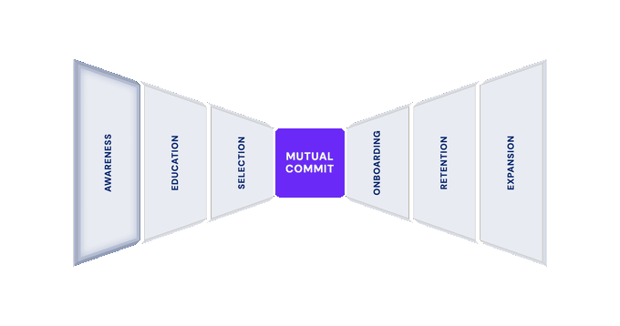

Internal reference — GTM engineering

The prospect doesn't know you exist yet — top-of-funnel discovery: SEO, content, social publishing, AEO/GEO, paid ads, PR, brand.
| Category | Skill | Description | Installs | Source | Link |
|---|---|---|---|---|---|
| Content & SEO | content-quality-auditor | Use when auditing content quality, E-E-A-T, or publish readiness; runs a typed 80-item CORE-EEAT profile with evidence coverage, veto checks, and a fix plan. Not for structural tags/headers alone — use on-page-seo-checker; not for domain/citation trust — use domain-authority-auditor. 内容质量/EEAT评分 | 5.1K | aaron-he-zhu/seo-geo-claude-skills | GitHub → |
| Social publishing | social-publisher | Multi-platform social media publishing automation - schedule, post, and track content across TikTok, Instagram, YouTube, LinkedIn, and more | 4.3K | claude-office-skills/skills | GitHub → |
| Lead gen & scraping | apify-lead-generation | Scrapes and builds B2B lead lists using Apify actors. | 2.8K | apify/agent-skills | GitHub → |
| Ads & competitive | meta-ads | When the user wants to set up, optimize, or manage Meta (Facebook/Instagram) Ads. Also use when the user mentions "Meta Ads," "Facebook Ads," "Instagram Ads," "Meta Pixel," "Conversions API," "Advantage+," "lookalike audience," or "Meta retargeting." For landing pages, use landing-page-generator. | 1.7K | kostja94/marketing-skills | GitHub → |
| Social publishing | social-publishing | Schedule and publish social media posts across 13 platforms (X, LinkedIn, Instagram, Facebook Pages, TikTok, Discord, Telegram, YouTube, Reddit, WordPress, Pinterest) via the SocialClaw API. Use when the user wants to publish, schedule, or manage social media content programmatically. Requires SOCIALCLAW_API_KEY. | 1.3K | wshobson/agents | GitHub → |
| Category | Skill | Description | Installs | Source | Link |
|---|---|---|---|---|---|
| Ads & competitive | adspy-analytics-intelligence | Analytics platform for tracking and analyzing sponsored advertisements across multiple networks with competitor insights | 565 | aradotso/data-skills | GitHub → |
| AEO/GEO | geo-content-optimizer | Use when the user asks to "optimize for AI citations"; improves citation readiness for ChatGPT, Perplexity, AI Overviews, Gemini, and Claude. Not for structural on-page SEO — use on-page-seo-checker; not for net-new drafting — use content-writer. AI引用优化/GEO优化/AI搜索 | 402 | aaron-he-zhu/aaron-marketing-skills | GitHub → |
| AEO/GEO | aeo | Answer Engine Optimization (AEO) skill — optimize content to be cited by AI language models (ChatGPT, Perplexity, Claude, Gemini, Mistral) as authoritative sources. Distinct from SEO — AEO optimizes for citation in LLM-generated responses, not search rankings. Use when planning content for AI-first search audiences, auditing existing content for E-E-A-T signals, tracking which pages get cited by which LLMs, or building a citation-friendly content strategy. Triggers — 'AEO audit', 'optimize for ChatGPT', 'get cited by Perplexity', 'LLM citation strategy', 'answer engine optimization', 'content for AI search', 'E-E-A-T audit'. Output is a markdown audit report (default) or JSON for pipeline integration. Stdlib-only Python tools. | 360 | alirezarezvani/claude-skills | GitHub → |
| Social listening / brand | social-listening | Monitor social media and online mentions for brand sentiment, emerging issues, and conversation trends | 359 | guia-matthieu/clawfu-skills | GitHub → |
| Content/AEO | llm-optimized-content | Use when creating content that must be discoverable by AI search engines (ChatGPT, Perplexity, Gemini). Use when SEO alone isn't enough, when you need AI citations, or when optimizing for the "zero-click" future. | 175 | guia-matthieu/clawfu-skills | GitHub → |
| SEO content audit (alt) | seo-content-gap-audit / seo-content-audit | Audit content gaps and decay using Ahrefs MCP data: missing topics, thin coverage, outdated content, and decaying pages. Use this skill when planning a content roadmap, refreshing a stale catalog, building topical authority, or identifying which existing pages need update versus replacement. Triggers on content gap, content audit, content refresh, content roadmap, decaying content, content decay, topical authority, what topics should we cover, where is competitor content stronger. Also triggers when organic traffic is flat despite consistent publishing. | ~117 | rampstackco/claude-skills | GitHub → |
| Brand awareness / video content | content-generation | AI-powered document, image, and flowchart generation. Use this skill when generating images with fal.ai, creating flowcharts/diagrams, generating Google Docs, creating client proposals, converting markdown to PDF, or summarizing content. Triggers on image generation, diagram creation, document generation, or content formatting requests. | 311 | casper-studios/casper-marketplace | GitHub → |
| Category | Skill | Description | Installs | Source | Link |
|---|---|---|---|---|---|
| Brand awareness / video content | higgsfield-generate (general video gen) | Generate images/videos/3D assets/audio via Higgsfield AI. Defaults: GPT Image 2 for image/design/text, Seedance 2.0 for video, Nano Banana 2/Lite/Pro for character/reference images, Marketing Studio for ads, Seed Audio 1.0 for audio. Use when: "generate an image", "make a video", "animate this photo", "image-to-video", "edit/stylize/remix this image", "reframe this video", "edit this video from a sketch", "create a 3D model/GLB", "create a sound effect", "make music", "text-to-audio", "create an ad", "make a UGC video", "unboxing", "presenter video", "import product from URL", or "analyze video virality". Supports image-to-3D (`multi_image_to_3d`), text-to-audio/music (`seed_audio`), workflow generation (`draw_to_video`, `reframe`), Marketing Studio, and Virality Predictor (`brain_activity`). Chain with higgsfield-soul-id for face/identity consistency. NOT for: Soul training, photoshoots, cards, explainers (use higgsfield-video-explainer), playable games/assets (use higgsfield-game-generation), or TTS. | 99.2K | higgsfield-ai/skills | GitHub → |
| Social publishing | reddit-automation | Find Reddit threads where people are genuinely asking for what you offer, then draft short, genuinely helpful replies — disclosing your affiliation honestly and naming your product only when it truly answers the question. Two moves: discovery — scan the right subreddits for real needs (recommendation asks, expressed pain, competitor mentions) and rank the few threads where you can actually help; drafting — write from real experience, respect each community's self-promo rules, and keep a human in the loop to review and post. This markets on Reddit the honest way: contribute value, disclose who you are, never astroturf. Distilled from the playbook behind doany.ai's Reddit agent. Triggers on "find reddit opportunities", "reddit marketing", "reddit automation", "reply on reddit for my product", "reddit community engagement", "reddit lead gen", or any ask to turn Reddit threads into genuine, disclosed marketing replies. | 91.2K | doany-skills/skills | GitHub → |
| Content & SEO | build-links | Design a link building campaign with prospect identification, asset creation, and outreach strategy. Use when the user asks about link building, backlinks, domain authority, how to get backlinks, outreach campaigns, digital PR, guest posting, or link acquisition. For internal linking, see fix-linking. | 6.4K | calm-north/seojuice-skills | GitHub → |
| Content & SEO | seo-audit | Run a comprehensive SEO audit — keyword research, on-page analysis, content gaps, technical checks, and competitor comparison. Use when assessing a site's SEO health, when finding keyword opportunities and content gaps competitors own, or when you need a prioritized action plan split into quick wins and strategic investments. | 2.6K | anthropics/knowledge-work-plugins | GitHub → |
| Social publishing | thread-writer-sms | When the user wants to write a multi-part thread or content series for Twitter/X, LinkedIn, Threads, Instagram (Reel/carousel/Story series), TikTok (multi-part videos), YouTube (video series, multi-Short series), or Facebook. Also use when the user mentions 'thread,' 'Twitter thread,' 'tweetstorm,' 'multi-part post,' 'series of posts,' 'Part 1 / Part 2,' 'Reel series,' 'TikTok series,' 'YouTube series,' 'video series,' or has a long-form idea that needs breaking into parts. For single posts, see post-writer-sms. For carousels, see carousel-writer-sms. | 1.0K | blacktwist/social-media-skills | GitHub → |
| AEO/GEO | generative-engine-optimization | Optimizes content for AI answer engines (ChatGPT, Perplexity, AI Overviews) rather than classic search rankings. | 928 | kostja94/marketing-skills | GitHub → |
| Ads & competitive | paid-ads-strategy | Plans and prioritizes paid ad spend and channel mix. | 916 | kostja94/marketing-skills | GitHub → |
| Social listening / brand | community-forum | When the user wants to promote via forums, communities, or invite users to join a community. Also use when the user mentions "forum promotion," "Indie Hacker," "Hacker News," "community growth," "Discord promotion," "vertical community," "brand encyclopedia," "Wikipedia," "Quora," "Reddit community," "community building," "forum marketing," or "community invite." For Reddit copy, use reddit-posts. For strategy, use integrated-marketing. | 821 | kostja94/marketing-skills | GitHub → |
| Social publishing | linkedin-writer | Creates viral LinkedIn posts using proven formats, post templates, and voice matching. Use when user needs engaging, high-performing posts for LinkedIn. | 710 | ognjengt/founder-skills | GitHub → |
| PR & influencer marketing (new) | brief-generator | Use when the user asks to "create an influencer brief" or "write a campaign brief"; produces a structured creator brief with deliverables, key messages, creative direction, timeline, disclosure rules, and compensation terms. Not for choosing how to split spend across creators — use budget-optimizer. 达人合作简报/创作者BF | 283 | aaron-he-zhu/aaron-marketing-skills | GitHub → |
| Content & SEO | content-amplifier | Use when the user asks to "amplify influencer content with paid media", "set up whitelisting or Spark Ads", "decide which posts to boost", "repurpose influencer content", "turn one video into multiple ads", or "build a UGC asset library"; produces (paid mode) a content-selection scorecard, a paid amplification strategy (whitelisting/boosting/dark posts), audience targeting, and a budget+optimization plan, or (repurpose mode) a rights-tracked content inventory, a 1-video-to-10+-asset repurposing map, per-format transformation specs, and a 30-day distribution plan. Not for gating whether a deliverable is publishable or FTC-compliant — use creator-content-auditor; not for the always-on brand posting calendar — use social-calendar-builder; not for drafting a net-new idea into platform-native packages — use social-creative-builder. 复用达人内容 / 内容放量. | 286 | aaron-he-zhu/aaron-marketing-skills | GitHub → |
| Brand awareness / video content | video-production | Video downloading, stitching, title slides, and YouTube descriptions. Use this skill when downloading videos from Google Drive, creating title slides, stitching multiple videos together, or generating YouTube descriptions with timestamps. Triggers on video course creation, video editing, video compilation, or YouTube upload preparation. | 277 | casper-studios/casper-marketplace | GitHub → |
| Content & SEO | content-marketing | General content marketing planning and asset creation. | 134 | absolutelyskilled/absolutelyskilled | GitHub → |
| Category | Skill | Description | Installs | Source | Link |
|---|---|---|---|---|---|
| Ads & competitive | linkedin-ads (master · 8 sub) | Expert LinkedIn Ads strategist for B2B companies. Use when the user asks about LinkedIn advertising, LinkedIn campaign setup, LinkedIn ad targeting, LinkedIn bidding strategies, LinkedIn ad formats, LinkedIn retargeting, LinkedIn ABM campaigns, LinkedIn Thought Leader Ads, LinkedIn funnel architecture, LinkedIn ads measurement/attribution, LinkedIn ads troubleshooting, LinkedIn creative best practices, or any B2B paid social strategy involving LinkedIn. Also triggers on "LinkedIn campaign", "LinkedIn CPM", "LinkedIn CTR", "LinkedIn lead gen", "B2B ads", "demand gen on LinkedIn", "sponsored content", or "LinkedIn ads not working". Do NOT use for LinkedIn organic content/posting (use linkedin-content skill) or LinkedIn outbound messaging (use cold-email skill). | — | Cold-IQ/ColdIQ-s-GTM-Skills | GitHub → |
| Ads & competitive | audiences | Build and manage LinkedIn Ads audiences, targeting, exclusions, and ABM account lists. Use when the user asks about LinkedIn ad targeting, audience setup, ICP targeting on LinkedIn, exclusion lists, ABM targeting, company lists vs contact lists, audience sizes, remarketing audiences, or Audience Expansion. Triggers on "LinkedIn targeting", "LinkedIn audience", "exclusion list", "ABM targeting", "company list", "remarketing audience", "audience size", "Audience Expansion". Do NOT use for bidding/budget questions (use bidding) or creative (use creative/copy). | — | Cold-IQ/ColdIQ-s-GTM-Skills | GitHub → |
| Ads & competitive | ads-outbound-sync | Synchronize LinkedIn Ads engagement with outbound sales for coordinated ABM plays. Use when the user asks about aligning LinkedIn ads with sales outreach, using ad engagement as sales triggers, ABM sales coordination, multi-channel ABM plays, or combining ads with email/calling sequences. Triggers on "ads outbound sync", "ABM sales alignment", "ad engagement triggers", "ads + outbound", "coordinate ads sales", "multi-channel ABM". Do NOT use for targeting setup (use audiences) or campaign structure (use campaign-setup). | — | Cold-IQ/ColdIQ-s-GTM-Skills | GitHub → |
| Ads & competitive | bidding | Configure LinkedIn Ads bidding strategies, budget allocation, and cost optimization. Use when the user asks about LinkedIn bidding, manual vs automated bidding, LinkedIn CPM, CPC, CPV, ad budget allocation, daily budget, bid adjustments, cost per lead, or LinkedIn ad spend optimization. Triggers on "LinkedIn bidding", "manual bidding", "automated bidding", "CPM", "CPC", "CPV", "ad budget", "bid adjustment", "cost per lead", "LinkedIn spend". Do NOT use for campaign structure (use campaign-setup) or creative questions (use creative/copy). | — | Cold-IQ/ColdIQ-s-GTM-Skills | GitHub → |
| Ads & competitive | campaign-setup | Set up LinkedIn Ads campaign architecture with proper funnel layers, retargeting segments, and pre-launch checklists. Use when the user asks about LinkedIn campaign structure, funnel architecture, retargeting setup, campaign organization, LinkedIn Ads launch checklist, or how to structure LinkedIn ad campaigns. Triggers on "campaign setup", "campaign structure", "funnel architecture", "retargeting setup", "launch checklist", "campaign organization", "LinkedIn campaign". Do NOT use for bidding (use bidding), targeting (use audiences), or creative (use creative/copy). | — | Cold-IQ/ColdIQ-s-GTM-Skills | GitHub → |
| Ads & competitive | copy | Write high-converting LinkedIn Ads copy using proven B2B frameworks. Use when the user asks about LinkedIn ad copywriting, ad headlines, ad descriptions, CTA text, LinkedIn ad messaging, offer strategy, Voice of Customer for ads, or how to write LinkedIn ads. Triggers on "LinkedIn ad copy", "ad headline", "ad description", "CTA text", "ad messaging", "write LinkedIn ad", "offer strategy", "Voice of Customer ads". Do NOT use for visual creative (use creative) or ad format selection (use creative). | — | Cold-IQ/ColdIQ-s-GTM-Skills | GitHub → |
| Ads & competitive | creative | Design LinkedIn Ads creative strategy including format selection, visual best practices, Thought Leader Ads, and refresh cadence. Use when the user asks about LinkedIn ad formats, image specs, video ads, carousel ads, Thought Leader Ads, Document Ads, creative refresh, ad fatigue, or which LinkedIn ad format to use. Triggers on "LinkedIn ad format", "Thought Leader Ads", "TLA", "Document Ads", "carousel ads", "video ads", "image specs", "creative refresh", "ad fatigue", "LinkedIn ad creative". Do NOT use for ad copy/text (use copy) or bidding (use bidding). | — | Cold-IQ/ColdIQ-s-GTM-Skills | GitHub → |
| Ads & competitive | measurement | Set up LinkedIn Ads measurement, attribution, KPIs, and conversion tracking. Use when the user asks about LinkedIn ads attribution, conversion tracking, LinkedIn Insight Tag, campaign KPIs, LinkedIn ads ROI, pipeline attribution, self-reported attribution, or how to measure LinkedIn Ads success. Triggers on "LinkedIn attribution", "conversion tracking", "Insight Tag", "campaign KPIs", "LinkedIn ROI", "pipeline attribution", "measure LinkedIn ads", "LinkedIn CAPI", "self-reported attribution". Do NOT use for bidding/budget (use bidding) or campaign structure (use campaign-setup). | — | Cold-IQ/ColdIQ-s-GTM-Skills | GitHub → |
| Ads & competitive | optimization | Troubleshoot and optimize LinkedIn Ads campaigns for better performance. Use when the user asks about LinkedIn ads not working, low CTR, high CPL, creative fatigue, LinkedIn ads troubleshooting, campaign optimization, LinkedIn ads performance issues, or competitive research. Triggers on "LinkedIn ads not working", "low CTR", "high CPL", "creative fatigue", "optimize LinkedIn ads", "troubleshoot LinkedIn", "ads underperforming", "competitive research", "LinkedIn Ads Library". Do NOT use for initial campaign setup (use campaign-setup) or audience building (use audiences). | — | Cold-IQ/ColdIQ-s-GTM-Skills | GitHub → |
| Social publishing | linkedin-content (master · 7 sub) | Expert LinkedIn organic content strategist for B2B founders and GTM leaders. Use when the user asks about LinkedIn posting strategy, LinkedIn algorithm, LinkedIn hooks, LinkedIn carousels, LinkedIn content writing, LinkedIn profile optimization, LinkedIn engagement strategy, LinkedIn newsletter, LinkedIn comment strategy, or growing a LinkedIn audience. Also triggers on "LinkedIn post", "LinkedIn content", "LinkedIn hook", "LinkedIn algorithm", "LinkedIn carousel", "LinkedIn profile", "LinkedIn engagement", "LinkedIn reach", "LinkedIn followers", "LinkedIn headline", "LinkedIn banner", "write a LinkedIn post", "LinkedIn strategy". Do NOT use for LinkedIn Ads (use linkedin-ads skill) or LinkedIn outbound messaging/cold outreach sequences (use cold-email skill). | — | Cold-IQ/ColdIQ-s-GTM-Skills | GitHub → |
| Social publishing | hooks | Write high-converting LinkedIn hooks and first lines. Use when the user asks about LinkedIn hooks, first lines, openers, "see more" optimization, attention-grabbing intros, or post headlines. Do NOT use for post body structure (use storytelling) or end-of-post CTAs (use cta). | — | Cold-IQ/ColdIQ-s-GTM-Skills | GitHub → |
| Social publishing | storytelling | Structure LinkedIn post bodies using proven storytelling frameworks. Use when the user asks about post structure, AIDA, PAS, BAB, storytelling, narrative posts, Mistake-to-Lesson posts, contrarian takes, or LinkedIn copywriting. Do NOT use for hooks/first lines (use hooks) or call-to-action endings (use cta). | — | Cold-IQ/ColdIQ-s-GTM-Skills | GitHub → |
| Social publishing | formats | Select the optimal LinkedIn content format and follow format-specific guidelines. Use when the user asks about carousels, video posts, text posts, polls, LinkedIn newsletters, format selection, reach multipliers, or content format specs. Do NOT use for post writing/structure (use storytelling) or posting schedule (use scheduling). | — | Cold-IQ/ColdIQ-s-GTM-Skills | GitHub → |
| Social publishing | scheduling | Optimize LinkedIn posting times, frequency, and the Golden Hour routine. Use when the user asks about best time to post on LinkedIn, posting frequency, content calendar, consistency, content velocity, or the Golden Hour. Do NOT use for content writing (use storytelling) or format selection (use formats). | — | Cold-IQ/ColdIQ-s-GTM-Skills | GitHub → |
| Social publishing | engagement | LinkedIn engagement strategy including comment tactics, DM sequences, dwell time optimization, and platform limits. Use when the user asks about LinkedIn comments, engagement strategy, DM outreach, LinkedIn limits, connection requests, community building, or growing engagement. Do NOT use for post writing (use storytelling) or posting schedule (use scheduling). | — | Cold-IQ/ColdIQ-s-GTM-Skills | GitHub → |
| Social publishing | cta | Design LinkedIn call-to-actions, drive saves/comments/follows, and optimize profiles for conversion. Use when the user asks about LinkedIn CTAs, comment prompts, save prompts, follow prompts, profile optimization, headline formulas, about section, featured section, or banner design. Do NOT use for post body writing (use storytelling) or hook/first lines (use hooks). | — | Cold-IQ/ColdIQ-s-GTM-Skills | GitHub → |
| Social publishing | repurposing | Repurpose LinkedIn content across formats and leverage creator tools. Use when the user asks about repurposing content, turning posts into carousels, LinkedIn newsletters, LinkedIn Live, audio events, collaborative articles, content recycling, or getting more mileage from existing content. Do NOT use for writing new original content (use storytelling) or format specs (use formats). | — | Cold-IQ/ColdIQ-s-GTM-Skills | GitHub → |
| Lead gen & scraping | list-building (master · 6 sub) | Expert B2B list building orchestrator for outbound sales campaigns. Use when the user asks about building lead lists, Sales Navigator search, boolean filters, ICP definition, ICP scoring, lead sources, data validation, email verification, list segmentation, Apollo prospecting, Clay Find People, list hygiene, deduplication, account qualification, ABM lists, or assembling prospect lists for cold outreach. Also triggers on "lead list", "list building", "Sales Navigator", "boolean search", "ICP", "ideal customer profile", "find leads", "prospect list", "lead source", "email verification", "data validation", "list hygiene", "Evaboot", "PhantomBuster", "export leads", "build a list", "find prospects", "deduplicate", "qualify accounts", "ABM". Do NOT use for enrichment workflows (use clay skill) or email writing (use cold-email skill). | — | Cold-IQ/ColdIQ-s-GTM-Skills | GitHub → |
| Lead gen & scraping | define-icp | Define Ideal Customer Profile with firmographic, technographic, and behavioral criteria plus scoring tiers. Use when user asks about "ICP", "ideal customer profile", "who to target", "scoring criteria", "tier system", "firmographic", "technographic", "buyer persona". Do NOT use for finding specific companies (use source-companies) or contact search (use find-contacts). | — | Cold-IQ/ColdIQ-s-GTM-Skills | GitHub → |
| Lead gen & scraping | source-companies | Find and import target companies from multiple data sources including Apollo, Clay, Google Maps, HG Insights, Ocean.io, and webhooks. Use when user asks about "find companies", "company list", "data sources", "where to find companies", "import companies", "Google Maps leads", "tech stack targeting", "webhooks", "Triggery". Do NOT use for finding individual contacts (use find-contacts) or ICP definition (use define-icp). | — | Cold-IQ/ColdIQ-s-GTM-Skills | GitHub → |
| Lead gen & scraping | find-contacts | Find contacts and decision makers at target companies using Sales Navigator boolean search, Clay Find People, and export tools. Use when user asks about "find contacts", "find people", "boolean search", "Sales Navigator search", "export leads", "Evaboot", "PhantomBuster", "decision makers", "buying committee", "title targeting", "contact list". Do NOT use for company sourcing (use source-companies) or email verification (use clean-validate). | — | Cold-IQ/ColdIQ-s-GTM-Skills | GitHub → |
| Lead gen & scraping | qualify-accounts | Qualify and score target accounts using ICP scoring matrices, ABM tier assignment, intent data layering, and lookalike building. Use when user asks about "qualify accounts", "score accounts", "ABM tiers", "account-based marketing", "intent data", "lookalike accounts", "prioritize accounts", "tier 1 accounts", "account scoring". Do NOT use for initial ICP definition (use define-icp) or finding contacts at accounts (use find-contacts). | — | Cold-IQ/ColdIQ-s-GTM-Skills | GitHub → |
| Lead gen & scraping | clean-validate | Verify and validate emails and phone numbers, manage bounce rates, and maintain list hygiene schedules. Use when user asks about "email verification", "validate emails", "bounce rate", "ZeroBounce", "NeverBounce", "list hygiene", "data decay", "deliverability", "catch-all emails", "spam traps", "re-verify", "phone validation". Do NOT use for deduplication (use deduplicate) or finding new contacts (use find-contacts). | — | Cold-IQ/ColdIQ-s-GTM-Skills | GitHub → |
| Lead gen & scraping | deduplicate | Deduplicate prospect lists, merge data from multiple sources, and ensure data quality across columns. Use when user asks about "deduplicate", "duplicates", "remove duplicates", "merge sources", "merge columns", "multiple data sources", "data quality", "clean up list", "duplicate contacts", "Clay auto-dedupe". Do NOT use for email verification (use clean-validate) or ICP scoring (use define-icp). | — | Cold-IQ/ColdIQ-s-GTM-Skills | GitHub → |
| Lead gen & scraping | lead-sources-guide | Lead sources by use case with Clay delivery-ready templates - Apollo, LinkedIn Sales Navigator, Clay, Ocean.io, Openmart, and Local Directories. Use when choosing lead sources, building prospecting workflows, or setting up data enrichment. | — | Cold-IQ/ColdIQ-s-GTM-Skills | GitHub → |
| Lead gen & scraping | list-building-tips | Pro tips for B2B list building - source mixing, enrichment workflow, template usage, and efficiency principles. Use when building prospect lists, optimizing data quality, or improving prospecting efficiency. | — | Cold-IQ/ColdIQ-s-GTM-Skills | GitHub → |
| Category | Skill | Description | Installs | Source | Link |
|---|---|---|---|---|---|
| Content & SEO | seo-audit | When the user wants to audit, review, or diagnose SEO issues on their site. Also use when the user mentions "SEO audit," "technical SEO," "why am I not ranking," "SEO issues," "on-page SEO," "meta tags review," "SEO health check," "my traffic dropped," "lost rankings," "not showing up in Google," "site isn't ranking," "Google update hit me," "page speed," "core web vitals," "crawl errors," or "indexing issues." Use this even if the user just says something vague like "my SEO is bad" or "help with SEO" — start with an audit. For building pages at scale to target keywords, see programmatic-seo. For adding structured data, see schema. For AI search optimization, see ai-seo. | — | coreyhaines31/marketingskills | GitHub → |
| Content & SEO | ai-seo | When the user wants to optimize content for AI search engines, get cited by LLMs, or appear in AI-generated answers. Also use when the user mentions 'AI SEO,' 'AEO,' 'GEO,' 'LLMO,' 'answer engine optimization,' 'generative engine optimization,' 'LLM optimization,' 'AI Overviews,' 'optimize for ChatGPT,' 'optimize for Perplexity,' 'AI citations,' 'AI visibility,' 'zero-click search,' 'how do I show up in AI answers,' 'LLM mentions,' 'optimize for Claude/Gemini,' 'llms.txt,' 'OKF,' 'Open Knowledge Format,' 'knowledge bundle,' or 'agent-readable site.' Use this whenever someone wants their content to be cited or surfaced by AI assistants and AI search engines. For traditional technical and on-page SEO audits, see seo-audit. For structured data implementation, see schema. | — | coreyhaines31/marketingskills | GitHub → |
| Content & SEO | site-architecture | When the user wants to plan, map, or restructure their website's page hierarchy, navigation, URL structure, or internal linking. Also use when the user mentions "sitemap," "site map," "visual sitemap," "site structure," "page hierarchy," "information architecture," "IA," "navigation design," "URL structure," "breadcrumbs," "internal linking strategy," "website planning," "what pages do I need," "how should I organize my site," or "site navigation." Use this whenever someone is planning what pages a website should have and how they connect. NOT for XML sitemaps (that's technical SEO — see seo-audit). For SEO audits, see seo-audit. For structured data, see schema. | — | coreyhaines31/marketingskills | GitHub → |
| Content & SEO | programmatic-seo | When the user wants to create SEO-driven pages at scale using templates and data. Also use when the user mentions "programmatic SEO," "template pages," "pages at scale," "directory pages," "location pages," "[keyword] + [city] pages," "comparison pages," "integration pages," "building many pages for SEO," "pSEO," "generate 100 pages," "data-driven pages," or "templated landing pages." Use this whenever someone wants to create many similar pages targeting different keywords or locations. For auditing existing SEO issues, see seo-audit. For content strategy planning, see content-strategy. | — | coreyhaines31/marketingskills | GitHub → |
| Content & SEO | schema | When the user wants to add, fix, or optimize schema markup and structured data on their site. Also use when the user mentions "schema markup," "structured data," "JSON-LD," "rich snippets," "schema.org," "FAQ schema," "product schema," "review schema," "breadcrumb schema," "Google rich results," "knowledge panel," "star ratings in search," or "add structured data." Use this whenever someone wants their pages to show enhanced results in Google. For broader SEO issues, see seo-audit. For AI search optimization, see ai-seo. | — | coreyhaines31/marketingskills | GitHub → |
| Content & SEO | content-strategy | When the user wants to plan a content strategy, decide what content to create, or figure out what topics to cover. Also use when the user mentions "content strategy," "what should I write about," "content ideas," "blog strategy," "topic clusters," "content planning," "editorial calendar," "content marketing," "content roadmap," "what content should I create," "blog topics," "content pillars," or "I don't know what to write." Use this whenever someone needs help deciding what content to produce, not just writing it. For writing individual pieces, see copywriting. For SEO-specific audits, see seo-audit. For social media content specifically, see social. | — | coreyhaines31/marketingskills | GitHub → |
| Content & SEO | aso | When the user wants to audit or optimize an App Store or Google Play listing. Also use when the user mentions 'ASO audit,' 'app store optimization,' 'optimize my app listing,' 'improve app visibility,' 'app store ranking,' 'audit my listing,' 'why aren't people downloading my app,' 'improve my app conversion,' 'keyword optimization for app,' or 'compare my app to competitors.' Use when the user shares an App Store or Google Play URL and wants to improve it. | — | coreyhaines31/marketingskills | GitHub → |
| Social publishing | social | When the user wants help creating, scheduling, or optimizing social media content for LinkedIn, Twitter/X, Instagram, TikTok, Facebook, or other platforms, or wants to do social listening and engagement triage. Also use when the user mentions 'LinkedIn post,' 'Twitter thread,' 'social media,' 'content calendar,' 'social scheduling,' 'engagement,' 'viral content,' 'what should I post,' 'repurpose this content,' 'tweet ideas,' 'LinkedIn carousel,' 'social media strategy,' 'grow my following,' 'TikTok video,' 'Reels,' 'Shorts,' 'video script,' 'video hook,' 'short-form video,' 'create a reel,' 'social listening,' 'brand mentions,' 'competitor monitoring,' 'top posts to comment on,' 'find people asking for,' 'carousel,' 'slide-by-slide,' or 'document post.' Use this for social media content creation, repurposing, scheduling, short-form video scripting, and social listening. For broader content strategy, see content-strategy. For paid ads, see ad-creative. For earned media, see public-relations. | — | coreyhaines31/marketingskills | GitHub → |
| Ads & competitive | ads | When the user wants help with paid advertising campaigns on Google Ads, Meta (Facebook/Instagram), LinkedIn, Twitter/X, or other ad platforms. Also use when the user mentions 'PPC,' 'paid media,' 'ROAS,' 'CPA,' 'ad campaign,' 'retargeting,' 'audience targeting,' 'Google Ads,' 'Facebook ads,' 'LinkedIn ads,' 'ad budget,' 'cost per click,' 'ad spend,' 'should I run ads,' 'ABM,' 'account-based marketing,' 'B2B ads,' 'lead quality,' 'negative keywords,' 'Performance Max,' 'thought leader ads,' or 'when should I kill an ad.' Use this for campaign strategy, audience targeting, bidding, and optimization. For bulk ad creative generation and iteration, see ad-creative. For landing page optimization, see cro. | — | coreyhaines31/marketingskills | GitHub → |
| Ads & competitive | ad-creative | When the user wants to generate, iterate, or scale ad creative — headlines, descriptions, primary text, or full ad variations — for any paid advertising platform. Also use when the user mentions 'ad copy variations,' 'ad creative,' 'generate headlines,' 'RSA headlines,' 'bulk ad copy,' 'ad iterations,' 'creative testing,' 'ad performance optimization,' 'write me some ads,' 'Facebook ad copy,' 'Google ad headlines,' 'LinkedIn ad text,' 'static ads,' 'static ad concepts,' 'ad templates,' 'iMessage ad,' 'chat reveal ad,' 'fake DM ad,' 'ChatGPT ad,' 'Apple Notes ad,' 'AirDrop ad,' 'creative strategy,' 'creative roadmap,' 'creative retro,' 'hook writing,' 'creative review page,' 'present ad creative for approval,' 'motion video ad,' 'faceless video ad,' 'animated explainer ad,' 'motion collage ad,' or 'I need more ad variations.' Use this whenever someone needs to produce ad copy at scale or iterate on existing ads. For campaign strategy and targeting, see ads. For landing page copy, see copywriting. | — | coreyhaines31/marketingskills | GitHub → |
| Social listening / brand | community-marketing | Build and leverage online communities to drive product growth and brand loyalty. Use when the user wants to create a community strategy, grow a Discord or Slack community, manage a forum or subreddit, build brand advocates, increase word-of-mouth, drive community-led growth, engage users post-signup, or turn customers into evangelists. Trigger phrases: \"build a community,\" \"community strategy,\" \"Discord community,\" \"Slack community,\" \"community-led growth,\" \"brand advocates,\" \"user community,\" \"forum strategy,\" \"community engagement,\" \"grow our community,\" \"ambassador program,\" \"community flywheel.\ | — | coreyhaines31/marketingskills | GitHub → |
| Partnerships / co-marketing (new) | co-marketing | When the user wants to find co-marketing partners, plan joint campaigns, or brainstorm partnership opportunities. Use when the user says 'co-marketing,' 'partner marketing,' 'joint campaign,' 'who should we partner with,' 'integration marketing,' 'cross-promotion,' 'collaborate with another company,' 'partnership ideas,' or 'co-brand.' For customer referral programs, see referrals. For launch-specific partnerships, see launch. | — | coreyhaines31/marketingskills | GitHub → |
| Directory / listing submissions (new) | directory-submissions | When the user wants to submit their product to startup, SaaS, AI, agent, MCP, no-code, or review directories for backlinks, domain rating, and discovery. Also use when the user mentions "directory submissions," "submit to directories," "backlinks from directories," "list my product," "submit to Product Hunt," "BetaList," "TAAFT," "Futurepedia," "G2 listing," "Capterra listing," "AlternativeTo," "SaaSHub," "AI directories," "MCP registry," "agent directory," "dofollow backlinks," "launch directories," or "directory tracker." Use this whenever someone is planning the directory layer of a product launch or an ongoing backlink campaign. For the broader launch moment, see launch. For programmatic SEO pages that should live behind these backlinks, see programmatic-seo. For AI citation optimization, see ai-seo. | — | coreyhaines31/marketingskills | GitHub → |
| Lead gen & scraping | prospecting | When the user wants to find, qualify, and build a list of prospects to reach out to — across B2B SaaS, general B2B, or local small businesses. Also use when the user mentions "prospecting," "build a prospect list," "find prospects," "find leads," "lead gen list," "find SaaS companies that," "find B2B companies," "find local businesses," "ICP-fit accounts," "who should we go after," "outbound list," "target account list," "find clients near me," "businesses without websites," "prospect research," "qualified leads," "find my first customers," "early adopters," "design partners," "beta users," or "who has this problem." Use this for the list-building and qualification phase. For writing the outbound copy after the list is built, see cold-email. For deep competitive research on specific accounts, see competitor-profiling. | — | coreyhaines31/marketingskills | GitHub → |
| PR & influencer marketing (new) | public-relations | When the user wants help with public relations, earned media, press coverage, journalist outreach, or media strategy (not pull requests). Also use when the user mentions 'PR,' 'public relations,' 'press,' 'press release,' 'press coverage,' 'media outreach,' 'pitch a journalist,' 'get featured,' 'media list,' 'media kit,' 'press kit,' 'newsjacking,' 'news hijack,' 'HARO,' 'Qwoted,' 'Featured,' 'Help A Reporter,' 'reporter request,' 'tech press,' 'TechCrunch,' 'earned media,' 'thought leadership placement,' 'op-ed,' 'guest article,' 'press contacts,' or 'how do I get press.' Use this for earned media work — finding journalists, pitching stories, newsjacking, and responding to press requests. For startup/SaaS/AI directory submissions, see directory-submissions. For product launches, see launch. For social-media engagement, see social. For cold-email outreach to prospects, see cold-email. | — | coreyhaines31/marketingskills | GitHub → |
| PR & influencer marketing (new) | influencer-marketing | When the user wants to run influencer, creator, or ambassador partnerships to promote their product — finding and vetting partners, structuring deals, briefing creators, disclosure compliance, and measuring ROI. Also use when the user mentions 'influencer marketing,' 'creator partnerships,' 'sponsorships,' 'YouTube sponsorships,' 'podcast sponsorships,' 'brand ambassador,' 'ambassador program,' 'creator program,' 'UGC creators,' 'B2B influencers,' 'thought leader ads,' 'gifting,' 'product seeding,' 'whitelisting creator content,' 'how much to pay an influencer,' or 'FTC disclosure.' For affiliate/referral payout mechanics, see referrals. For community-led advocacy, see community-marketing. For turning creator content into paid ads, see ad-creative. | — | coreyhaines31/marketingskills | GitHub → |
| Category | Skill | Description | Installs | Source | Link |
|---|---|---|---|---|---|
| Content & SEO | diagnostics | Use for structured technical SEO audits, incident response, and validation. | — | gtmagents/gtm-agents | GitHub → |
| Content & SEO | keyword-strategy | Use when researching, clustering, and prioritizing keywords for SEO roadmaps. | — | gtmagents/gtm-agents | GitHub → |
| Content & SEO | case-studies | Use when creating customer stories that prove ROI, highlight use cases, and equip sales with proof. | — | gtmagents/gtm-agents | GitHub → |
| Content & SEO | thought-leadership | Use when crafting executive POVs, visionary articles, or keynote narratives that elevate brand authority. | — | gtmagents/gtm-agents | GitHub → |
| Content & SEO | whitepapers | Use when producing research-heavy whitepapers or technical guides that require structured argumentation and data. | — | gtmagents/gtm-agents | GitHub → |
| Social media publishing & management | channel-roadmap-kit | Template system for building quarterly social channel roadmaps with KPIs | — | gtmagents/gtm-agents | GitHub → |
| Social media publishing & management | social-calendar-system | Operational template for building social content calendars with approvals | — | gtmagents/gtm-agents | GitHub → |
| Social media publishing & management | brand-guardrails | Use to review voice, visual, legal, and partner requirements before publishing | — | gtmagents/gtm-agents | GitHub → |
| Social media publishing & management | calendar-governance | Use to enforce cadence rules, timezone coverage, and operational controls | — | gtmagents/gtm-agents | GitHub → |
| Brand awareness, video & trend content | scriptwriting | Use when crafting scripts, storyboards, and messaging for video content. | — | gtmagents/gtm-agents | GitHub → |
| Brand awareness, video & trend content | production-ops | Use when coordinating shoots, vendors, budgets, and compliance for video | — | gtmagents/gtm-agents | GitHub → |
| Brand awareness, video & trend content | brand-narrative-playbook | Messaging and storytelling template that keeps positioning consistent | — | gtmagents/gtm-agents | GitHub → |
| Brand awareness, video & trend content | brand-governance-os | Operating system for intake, approvals, QA, and training across brand | — | gtmagents/gtm-agents | GitHub → |
| Category | Skill | Description | Installs | Source | Link |
|---|---|---|---|---|---|
| Ads & competitive | ad-angle-multiplier | Expand a core idea into multiple distinct ad angles. Trigger on "more ads", "creative testing", "scale campaigns". | — | realkimbarrett/advertising-skills | GitHub → |
| Ads & competitive | scroll-stopping-creative | Create ad concepts that stop attention in the first 3 seconds. Trigger on "ad creative", "thumbstopper", "video ideas". | — | realkimbarrett/advertising-skills | GitHub → |
| Ads & competitive | conversion-path-builder | Design the optimal funnel from click to conversion. Trigger on "funnel", "conversion path", "booked calls". | — | realkimbarrett/advertising-skills | GitHub → |
| Ads & competitive | performance-diagnosis | Diagnose why campaigns are underperforming. Trigger on "low performance", "high CPL", "bad ads". | — | realkimbarrett/advertising-skills | GitHub → |
| Ads & competitive (orchestrator) | full-funnel-campaign-orchestrator | Coordinate all skills to build a complete advertising campaign. Trigger on "build a campaign", "full funnel", "ads + funnel". | — | realkimbarrett/advertising-skills | GitHub → |
| Category | Skill | Description | Installs | Source | Link |
|---|---|---|---|---|---|
| Content & SEO | seo | Comprehensive SEO analysis for any website or business type. Full site audits, single-page analysis, technical SEO (crawlability, indexability, Core Web Vitals with INP), schema markup, content quality (E-E-A-T), image optimization, sitemap analysis, and GEO for AI Overviews/ChatGPT/Perplexity. Industry detection for SaaS, e-commerce, local, publishers, agencies. Triggers on: SEO, audit, schema, Core Web Vitals, sitemap, E-E-A-T, AI Overviews, GEO, technical SEO, content quality, page speed. | — | AgriciDaniel/claude-seo | GitHub → |
| Content & SEO | seo-audit | Full website SEO audit with parallel subagent delegation. Crawls up to 500 pages, detects business type, delegates to up to 15 specialists (8 always + 7 conditional), generates health score. Use when user says audit, full SEO check, analyze my site, or website health check. | — | AgriciDaniel/claude-seo | GitHub → |
| Content & SEO | seo-page | Deep single-page SEO analysis covering on-page elements, content quality, technical meta tags, schema, images, and performance. Use when user says "analyze this page", "check page SEO", "single URL", "check this page", "page analysis", or provides a single URL for review. | — | AgriciDaniel/claude-seo | GitHub → |
| Content & SEO | seo-technical | Technical SEO audit across 9 categories: crawlability, indexability, security, URL structure, mobile, Core Web Vitals, structured data, JavaScript rendering, and IndexNow protocol. Use when user says "technical SEO", "crawl issues", "robots.txt", "Core Web Vitals", "site speed", or "security headers". | — | AgriciDaniel/claude-seo | GitHub → |
| Content & SEO | seo-drift | SEO drift monitoring: capture baselines of SEO-critical elements, detect changes, and track regressions over time. Git for SEO: baseline, diff, and track changes to your on-page SEO. Use when user says "SEO drift", "baseline", "track changes", "did anything break", "SEO regression", "compare SEO", "before and after", "monitor SEO changes", or "deployment check". | — | AgriciDaniel/claude-seo | GitHub → |
| Content & SEO | seo-plan | Strategic SEO planning for new or existing websites. Industry-specific templates, competitive analysis, content strategy, and implementation roadmap. Use when user says "SEO plan", "SEO strategy", "SEO planning", "content strategy", "keyword strategy", "content calendar", "site architecture", or "SEO roadmap". | — | AgriciDaniel/claude-seo | GitHub → |
| Content & SEO | seo-content | Content quality and E-E-A-T analysis with AI citation readiness assessment. Use when user says "content quality", "E-E-A-T", "content analysis", "readability check", "thin content", or "content audit". | — | AgriciDaniel/claude-seo | GitHub → |
| Content & SEO | seo-content-brief | Generate competitive SEO content briefs with per-section word counts, competitor scoring, keyword density guidance, and page-type templates. Supports both new page briefs and improve-existing-page briefs. Use when user says "content brief", "write a brief", "content outline", "blog brief", "service page brief", "brief for", "writing brief", "content plan", or "outline for". | — | AgriciDaniel/claude-seo | GitHub → |
| Content & SEO | seo-cluster | SERP-based semantic topic clustering for content architecture planning. Groups keywords by actual Google SERP overlap (not text similarity), designs hub-and-spoke content clusters with internal link matrices, and generates interactive visualizations. Optionally executes content creation if claude-blog is installed. Use when user says "topic cluster", "content cluster", "semantic clustering", "pillar page", "hub and spoke", "content architecture", "keyword grouping", or "cluster plan". | — | AgriciDaniel/claude-seo | GitHub → |
| Content & SEO | seo-competitor-pages | Generate SEO-optimized competitor comparison and alternatives pages. Covers "X vs Y" layouts, "alternatives to X" pages, feature matrices, schema markup, and conversion optimization. Use when user says "comparison page", "vs page", "alternatives page", "competitor comparison", "X vs Y", "versus", "compare competitors", or "alternative to". | — | AgriciDaniel/claude-seo | GitHub → |
| Content & SEO | seo-programmatic | Programmatic SEO planning and analysis for pages generated at scale from data sources. Covers template engines, URL patterns, internal linking automation, thin content safeguards, and index bloat prevention. Use when user says "programmatic SEO", "pages at scale", "dynamic pages", "template pages", "generated pages", or "data-driven SEO". | — | AgriciDaniel/claude-seo | GitHub → |
| AEO/GEO | seo-geo | Optimize content for AI Overviews (formerly SGE), ChatGPT web search, Perplexity, and other AI-powered search experiences. Generative Engine Optimization (GEO) analysis including brand mention signals, AI crawler accessibility, llms.txt compliance, passage-level citability scoring, and platform-specific optimization. Use when user says "AI Overviews", "SGE", "GEO", "AI search", "LLM optimization", "Perplexity", "AI citations", "ChatGPT search", or "AI visibility". | — | AgriciDaniel/claude-seo | GitHub → |
| AEO/GEO | seo-sxo | Search Experience Optimization: reads Google SERPs backwards to detect page-type mismatches, derives user stories from search intent signals, and scores pages from multiple persona perspectives. Identifies why well-optimized pages fail to rank by analyzing what Google rewards for each keyword. Use when user says "SXO", "search experience", "page type mismatch", "SERP analysis", "user story", "persona scoring", "why isn't my page ranking", "intent mismatch", or "wireframe". | — | AgriciDaniel/claude-seo | GitHub → |
| AEO/GEO | seo-schema | Detect, validate, and generate Schema.org structured data. JSON-LD format preferred. Use when user says "schema", "structured data", "rich results", "JSON-LD", or "markup". | — | AgriciDaniel/claude-seo | GitHub → |
| Ads & competitive (backlinks) | seo-backlinks | Backlink profile analysis: referring domains, anchor text distribution, toxic link detection, competitor gap analysis. Works with free APIs (Moz, Bing Webmaster, Common Crawl) and DataForSEO extension. Use when user says backlinks, link profile, referring domains, anchor text, toxic links, link gap, link building, disavow, or backlink audit. | — | AgriciDaniel/claude-seo | GitHub → |
| Website visitor ID (RB2B-style) (local/intl) | seo-local | Local SEO analysis covering Google Business Profile optimization, NAP consistency, citation health, review signals, local schema markup, location page quality, multi-location SEO, and industry-specific recommendations. Detects business type (brick-and-mortar, SAB, hybrid) and industry vertical. Use when user says "local SEO", "Google Business Profile", "GBP", "map pack", "local pack", "citations", "NAP consistency", "service area", or "multi-location". | — | AgriciDaniel/claude-seo | GitHub → |
| Website visitor ID (RB2B-style) (local/intl) | seo-maps | Maps intelligence for local SEO: geo-grid rank tracking, GBP profile auditing via API, review intelligence across Google/Tripadvisor/Trustpilot, cross-platform NAP verification, competitor radius mapping, and LocalBusiness schema generation. Three tiers: free (Overpass + Geoapify), DataForSEO, and DataForSEO + Google. Use when user says "maps", "geo-grid", "rank tracking", "GBP audit", "review velocity", "competitor radius", or "SoLV". | — | AgriciDaniel/claude-seo | GitHub → |
| Website visitor ID (RB2B-style) (local/intl) | seo-hreflang | Hreflang and international SEO audit, validation, and generation. Detects common mistakes, validates language/region codes, and generates correct hreflang implementations. Use when user says "hreflang", "i18n SEO", "international SEO", "multi-language", "multi-region", or "language tags". | — | AgriciDaniel/claude-seo | GitHub → |
| Website visitor ID (RB2B-style) (local/intl) | seo-ecommerce | E-commerce SEO analysis: Google Shopping visibility, Amazon marketplace intelligence, product schema validation, competitor pricing analysis, and marketplace keyword gaps. Combines on-page product SEO with marketplace data from DataForSEO Merchant API. Use when user says "ecommerce SEO", "product SEO", "Google Shopping", "marketplace SEO", "product schema", "Amazon SEO", "product listings", "shopping ads", or "merchant SEO". | — | AgriciDaniel/claude-seo | GitHub → |
| Website visitor ID (RB2B-style) (local/intl) | seo-images | Image optimization analysis for SEO and performance. Checks alt text, file sizes, formats, responsive images, lazy loading, CLS prevention, image SERP rankings (via DataForSEO), and image file optimization (WebP/AVIF conversion, IPTC/XMP metadata injection). Use when user says "image optimization", "alt text", "image SEO", "image size", "image audit", "optimize images", "image metadata", "image SERP", "convert to webp", or "image file optimize". | — | AgriciDaniel/claude-seo | GitHub → |
| Content & SEO (infra) | seo-sitemap | Analyze existing XML sitemaps or generate new ones with industry templates. Validates format, URLs, and structure. Use when user says "sitemap", "generate sitemap", "sitemap issues", or "XML sitemap". | — | AgriciDaniel/claude-seo | GitHub → |
| Content & SEO (infra) | seo-google | Google SEO APIs: Search Console (Search Analytics, URL Inspection, Sitemaps), PageSpeed Insights v5, CrUX field data with 25-week history, Indexing API v3, and GA4 organic traffic. Provides real Google field data for Core Web Vitals, indexation status, search performance, and organic traffic trends. Use when user says "search console", "GSC", "PageSpeed", "CrUX", "field data", "indexing API", "GA4 organic", "URL inspection", or "real CWV data". | — | AgriciDaniel/claude-seo | GitHub → |
| Content & SEO (infra) | seo-flow | FLOW framework integration: evidence-led SEO using the Find → Leverage → Optimize → Win loop. Surfaces stage-specific AI prompts from the FLOW knowledge base (41 prompts, CC BY 4.0). Use when user says "FLOW", "FLOW framework", "seo flow", "evidence-led SEO", "find leverage optimize win", or wants stage-specific SEO prompts. | — | AgriciDaniel/claude-seo | GitHub → |
| Content & SEO (infra) | seo-image-gen | AI image generation for SEO assets: OG/social preview images, blog hero images, schema images, product photography, infographics. Powered by Gemini via nanobanana-mcp. Requires banana extension installed. Use when user says \"generate image\", \"OG image\", \"social preview\", \"hero image\", \"blog image\", \"product photo\", \"infographic\", \"seo image\", \"create visual\", \"image-gen\", \"favicon\", \"schema image\", \"pinterest pin\", \"generate visual\", \"banner\", or \"thumbnail\". | — | AgriciDaniel/claude-seo | GitHub → |
| Content & SEO (infra) | seo-dataforseo | Live SEO data via DataForSEO MCP server: SERP analysis, keyword research (volume, difficulty, intent, trends), backlink profiles, on-page analysis, competitor and content analysis, business listings, AI visibility (LLM mention tracking), and domain analytics. Requires DataForSEO extension installed. Use when user says "dataforseo", "live SERP", "keyword volume", "backlink data", "AI visibility check", or "real search data". | — | AgriciDaniel/claude-seo | GitHub → |
| Content & SEO (provider extensions — opt-in) | seo-ahrefs | Ahrefs API analyst (extension). Reads referring domains, backlinks, organic keywords, and content explorer data via the tested @ahrefs/mcp@0.0.11 server. Pairs with seo-backlinks for multi-source confidence weighting. | — | AgriciDaniel/claude-seo | GitHub → |
| Content & SEO (provider extensions — opt-in) | seo-bing | Bing Webmaster Tools + IndexNow extension. Microsoft Copilot citations are fed by the Bing index; this skill makes Bing visibility, link data, and IndexNow URL submission first-class. | — | AgriciDaniel/claude-seo | GitHub → |
| Content & SEO (provider extensions — opt-in) | seo-firecrawl | Full-site crawling, scraping, and site mapping via Firecrawl MCP. Use when user says "crawl site", "map site", "full crawl", "find all pages", "broken links", "site structure", "discover pages", "JS rendering", or needs site-wide analysis. | — | AgriciDaniel/claude-seo | GitHub → |
| Content & SEO (provider extensions — opt-in) | seo-profound | Profound LLM citation tracker (extension). Time-series brand citation rates across ChatGPT, Perplexity, and other LLMs. Pairs with seo-seranking for triangulated AI visibility coverage. | — | AgriciDaniel/claude-seo | GitHub → |
| Content & SEO (provider extensions — opt-in) | seo-seranking | SE Ranking AI visibility analyst (extension). Tracks AI Share-of-Voice across ChatGPT, Gemini, Perplexity, AI Overviews, and AI Mode in a single query. | — | AgriciDaniel/claude-seo | GitHub → |
| Content & SEO (provider extensions — opt-in) | seo-unlighthouse | Multi-page Lighthouse audit via the MIT-licensed Unlighthouse CLI. Free-tier alternative to running PageSpeed against every URL on a site, no API quota burn, runs locally. | — | AgriciDaniel/claude-seo | GitHub → |
| Category | Skill | Description | Installs | Source | Link |
|---|---|---|---|---|---|
| Strategy & research (new) | marketing-ideas | Generate 5 creative, cost-effective marketing ideas with channels, messaging, and engagement rationale. Use when brainstorming marketing campaigns, planning product promotion, or looking for creative marketing tactics. | — | phuryn/pm-skills | GitHub → |
| Strategy & research (new) | positioning-ideas | Brainstorm product positioning ideas differentiated from competitors. Identifies top competitors and generates positioning statements with rationale. Use when developing product positioning, differentiating from competitors, or crafting brand positioning strategy. | — | phuryn/pm-skills | GitHub → |
| Strategy & research (new) | value-prop-statements | Generate value proposition statements for marketing, sales, and onboarding from existing value propositions. Use when writing marketing copy, creating sales messaging, or crafting onboarding messages. | — | phuryn/pm-skills | GitHub → |
| Strategy & research (new) | product-name | Brainstorm 5 unique, memorable product names with rationale aligned to brand values and target audience. Use when naming a new product, rebranding, or exploring product name ideas. | — | phuryn/pm-skills | GitHub → |
| Strategy & research (new) | north-star-metric | Define a North Star Metric and 3-5 supporting input metrics that form a metrics constellation. Classify the business game (Attention, Transaction, Productivity) and validate against 7 criteria for an effective North Star. Use when choosing a North Star Metric, setting up a metrics framework, learning about the North Star Framework, or deciding what to measure. | — | phuryn/pm-skills | GitHub → |
| Category | Skill | Description | Installs | Source | Link |
|---|---|---|---|---|---|
| Marketing (unreviewed) | creative-director-skill | AI creative director with recursive self-assessment. Generates concepts using world-class methodologies (SIT, TRIZ, Lateral Thinking, bisociation), scores against 6 weighted criteria with Cannes/D&AD/HumanKind calibration, and recursively refines until the 9+ threshold is reached. Accepts briefs in any format — text, voice transcript, PDF, or raw notes. Use when the user asks to generate creative concepts, brainstorm campaign ideas, develop a Big Idea or campaign platform, evaluate or critique existing creative work, find consumer insights, or shares a brief for ideation — including activations, PR-stunts, brand utility, experiential, and non-advertising ideas. Calibrates against a library of 569 legendary campaigns (P01-P18 pattern map) to detect saturation and ensure originality. Do not use for media planning, production budgeting, brand identity/logo design, copywriting final drafts, or market research data collection. | 121★ | smixs/creative-director-skill | GitHub → |
| Marketing (unreviewed) | postiz-agent | Schedule social media and chat posts to 28+ channels (X, LinkedIn, Reddit, Instagram, Facebook, TikTok, YouTube, and more) from one tool. | 381★ | gitroomhq/postiz-agent | GitHub → |
| Marketing (unreviewed) | agent | Free AI-first short-form video publishing to TikTok, Instagram Reels, YouTube Shorts, X, and Facebook from AI agents through Taisly. | 308★ | taisly/agent | GitHub → |
| Marketing (unreviewed) | digital-marketing-pro | Bundled digital marketing toolkit covering campaign planning, content, and channel execution. | 639★ | indranilbanerjee/digital-marketing-pro | GitHub → |
| Marketing (unreviewed) | NotFair | Upgrade the NotFair plugin to the latest version. Updates the marketplace repo, installs the new version to the plugin cache, and updates installed_plugins.json. Use when asked to "upgrade notfair", "update notfair", or "get latest version". Also handles inline upgrade prompts when a skill detects UPGRADE_AVAILABLE at startup. | 3.3K★ | nowork-studio/NotFair | GitHub → |
| Category | Skill | Description | Installs | Source | Link |
|---|---|---|---|---|---|
| Growth channel strategy (new) | acquisition-channel-advisor | Evaluate acquisition channels using unit economics, customer quality, and scalability. Use when deciding whether to scale, test, or kill a growth channel. | — | deanpeters/Product-Manager-Skills | GitHub → |
| Growth channel strategy (new) | organic-growth-advisor | Identify which organic growth path to pursue — new segments, geographies, channels, or products. Use when diagnosing where a growth constraint lives and which McKinsey growth level to act on next. | — | deanpeters/Product-Manager-Skills | GitHub → |
| Market research (new) | market-landscape-scan | Map a market's segments, players, substitutes, and whitespace with cited evidence. Use when entering or re-evaluating a market before sizing, positioning, or picking competitors to study. | — | deanpeters/Product-Manager-Skills | GitHub → |
| Market research (new) | voice-of-customer-miner | Mine public reviews, app stores, and forums for unmet needs, competitor weaknesses, and switching triggers — with quoted evidence. Use when you want customer voice without waiting on interviews. | — | deanpeters/Product-Manager-Skills | GitHub → |
| Category | Skill | Description | Installs | Source | Link |
|---|---|---|---|---|---|
| Cold email | copy-frameworks | Battle-tested cold email copy frameworks that earn replies. Structures, formulas, and templates for writing emails that convert strangers into conversations. | — | kenny589/gtm-flywheel | GitHub → |
| Cold email | sequence-architecture | Design multi-step outbound sequences that convert. Timing, channel mix, variant strategy, and escalation logic for cold email campaigns. | — | kenny589/gtm-flywheel | GitHub → |
| Cold email | personalization-engine | Turn raw prospect data into compelling personalized email elements. Signal detection, personalization layers, and variable frameworks that make cold emails feel warm. | — | kenny589/gtm-flywheel | GitHub → |
| ICP research | icp-matrix-builder | Build comprehensive Ideal Customer Profile matrices that define exactly who to target. Tiering frameworks, scoring models, and segmentation strategies for precision outbound. | — | kenny589/gtm-flywheel | GitHub → |
| ICP research | persona-development | Build detailed buyer personas grounded in real data, not assumptions. Pain mapping, motivation frameworks, and messaging architecture for each persona in your ICP. | — | kenny589/gtm-flywheel | GitHub → |
| ICP research | account-qualification | Systematically evaluate whether a target account is worth pursuing. Scoring frameworks, qualification criteria, and prioritization models that prevent wasted outreach on bad-fit prospects. | — | kenny589/gtm-flywheel | GitHub → |
| Signal scoring | intent-signals | Detect, categorize, and score buying intent signals from multiple data sources. Transform raw company activity into actionable outreach triggers. | — | kenny589/gtm-flywheel | GitHub → |
| Signal scoring | trigger-mapping | Map business events to outreach triggers. Define which events warrant immediate contact, what to say when they happen, and how to build event-driven outbound campaigns. | — | kenny589/gtm-flywheel | GitHub → |
| Signal scoring | lead-prioritization | Rank leads by conversion probability using weighted scoring models. Stack signals, fit scores, and engagement data to build a dynamic priority queue that tells your team exactly who to contact next. | — | kenny589/gtm-flywheel | GitHub → |
| Campaign analytics | performance-analysis | Analyze outbound campaign performance across every meaningful metric. Diagnose what's working, what's broken, and exactly where to optimize for higher conversion. | — | kenny589/gtm-flywheel | GitHub → |
| Campaign analytics | winning-copy-extraction | Extract, analyze, and replicate the patterns behind your highest-performing email copy. Turn individual campaign wins into repeatable copy frameworks your team can deploy across every campaign. | — | kenny589/gtm-flywheel | GitHub → |
| Campaign analytics | campaign-benchmarking | Benchmark your outbound campaigns against internal baselines, industry standards, and cross-portfolio performance data. Know if your campaigns are actually good — not just whether they feel good. | — | kenny589/gtm-flywheel | GitHub → |
| Category | Skill | Description | Installs | Source | Link |
|---|---|---|---|---|---|
| ABM | 1-to-1-abm-ads | Use this skill when running 1:1 ABM ads on LinkedIn — one ad set per named target company, each audience sized and narrowed to the buyers, personalized single-image creatives, and a DRAFT-first campaign build with a script for every step. | — | swan-gtm/gtm-skills | GitHub → |
| ABM | abm-measurement-framework | Use this skill when measuring ABM success — account-stage metrics instead of lead metrics, attribution models, ROI formulas, and benchmarks for account-based programs. | — | swan-gtm/gtm-skills | GitHub → |
| ABM | abm-on-meta | Use this skill when running account-based marketing on Meta — 1:1 and 1:few ABM plays, matched-audience setup, and personalization for named B2B accounts. | — | swan-gtm/gtm-skills | GitHub → |
| ABM | abm-retargeting-framework | Use this skill when building retargeting for ABM — segmenting engaged accounts, managing frequency, and orchestrating retargeting across ads, email, BDR outreach, and direct mail. | — | swan-gtm/gtm-skills | GitHub → |
| ABM | account-selection-framework | Use this skill when building, scoring, or managing a target account list for ABM — reverse-engineering how many accounts you need from revenue targets, ICP fit scoring, tiering, list staging, and ongoing list hygiene. | — | swan-gtm/gtm-skills | GitHub → |
| ABM | ads-outbound-signaling-guide | Use this skill when connecting paid campaigns to sales outreach — using ABM ad engagement as intent signals that trigger and personalize BDR outbound before anyone fills out a form. | — | swan-gtm/gtm-skills | GitHub → |
| ABM | linkedin-abm-1to1-few-many | Use this skill when choosing and running LinkedIn account-based ad campaigns at the 1:1 (single whale account), 1:few (named account list), or 1:many (vertical/segment) level — company vs contact lists, reach, and personalized 1:1 creative. | — | swan-gtm/gtm-skills | GitHub → |
| ABM | linkedin-abm-ad-design | Use this skill when the user wants to execute, operationalize, or \"build the ads for\" a LinkedIn ABM strategy; asks for ad briefs, a campaign outline, ad mockups, LinkedIn ad creatives, TLA (Thought Leader Ad) copy, or campaign briefs; or says things like \"turn my strategy into campaigns\", \"create the ads from the plan\", \"make the briefs\", or \"set up my campaign database\". Turns a finished LinkedIn ABM strategy into launch-ready campaign assets - a concise ABM Campaign Outline, per-ad copy & design briefs, on-brand image-ad mockups, and an optional campaign-management database. | — | swan-gtm/gtm-skills | GitHub → |
| ABM | linkedin-abm-audit | Use this skill when someone wants to review, grade, audit, or improve their OWN LinkedIn ad results, ABM program, or ad spend — or says things like: audit my LinkedIn ads, are my ads any good, how is my ad spend doing, am I running the right number of ads, which ad format is working best, why is my CPC/CPM so high, review my ABM campaigns, which formats influence my deals, are my ads decaying, which companies should I go after, benchmark my LinkedIn ads. Audits the last 30 days of live spend — real CPC, CPM, CTR, ad count, format mix, deal influence, campaign trends and account engagement — grades them against ZenABM's per-format benchmarks, and produces a downloadable audit document with a prioritized fix list. Do NOT use for planning a NEW campaign or budget sizing. | — | swan-gtm/gtm-skills | GitHub → |
| ABM | linkedin-abm-monthly-report | Use this skill when someone wants a monthly LinkedIn Ads & ABM performance report for the last full calendar month — a month-end / end-of-month ABM report, a LinkedIn ads recap, a stakeholder or exec report, a \"report on last month's ads/campaigns\", a monthly performance summary, or a shareable report with month-over-month comparison. Pulls spend, pipeline, deals, campaign and ad-format performance and engaged companies for the last calendar month, compares to the prior month, grades ad formats against ZenABM benchmarks, and lists recommendations and next steps. Do NOT use for a diagnostic fix-list audit of the trailing 30 days (use the LinkedIn ads & ABM audit skill), planning a NEW campaign/budget, or profiling COMPETITORS' ads. | — | swan-gtm/gtm-skills | GitHub → |
| ABM | linkedin-abm-strategy-planner | Use this skill when someone wants an ABM strategy, an ABM plan, a LinkedIn ABM campaign plan, help planning LinkedIn ads for account-based marketing, how much budget they need for ABM, how many ads or campaigns they can run, or an ABM budget and audience plan. The skill asks a few questions about goals, deal economics, budget and ICP, researches the company website, computes the funnel and budget math, and produces a personalized \"[Company] LinkedIn ABM Strategy\" document (HTML → PDF). | — | swan-gtm/gtm-skills | GitHub → |
| ABM | linkedin-ads-abm-guide | Use this skill when planning or running LinkedIn ad campaigns for ABM — ad format selection, budget math, campaign structure, performance benchmarks, and optimization. | — | swan-gtm/gtm-skills | GitHub → |
| ABM | linkedin-ads-audience-guide | Use this skill when sizing and building LinkedIn ad audiences for B2B — audience sweet spots by funnel stage, targeting approaches, exclusion strategy, retargeting setup, and ABM company-list targeting. | — | swan-gtm/gtm-skills | GitHub → |
| ABM | persona-mapping-framework | Use this skill when mapping the buying committee inside ABM target accounts — identifying personas from closed-won data, their jobs-to-be-done and pain points, and how ad messaging and BDR outreach should differ by persona. | — | swan-gtm/gtm-skills | GitHub → |
| AEO | aeo-citation-drill-down | Use this skill when the user wants to know which content actually shapes AI answers in their category — \"what sources do AI engines cite about us,\" \"why does the competitor win the AI comparison answers,\" \"where should content effort go for AI visibility.\" Three-level investigation: cited domains → the specific URLs driving citations → the full AI answers, ending in a ranked content hit-list. | — | swan-gtm/gtm-skills | GitHub → |
| AEO | aeo-score-audit | Use this skill when an AI-visibility score needs to be trusted, explained, or challenged — \"why did our AEO score drop,\" \"prove this visibility number to the client,\" \"this scan result looks wrong.\" Traces any aggregate visibility or sentiment score down to the individual scans behind it, and from there to the raw AI answer text — an audit trail from headline number to evidence. | — | swan-gtm/gtm-skills | GitHub → |
| AEO | aeo-visibility-tracking | Use this skill when the user wants to measure or improve how their brand shows up in AI-generated answers — \"do we appear in ChatGPT answers,\" \"track our AEO score,\" \"which sources do AI engines cite for our category.\" Seeds the prompts buyers actually ask, tracks brand visibility per engine and country over time, and mines the citation sources to show where content effort moves the score. | — | swan-gtm/gtm-skills | GitHub → |
| Ads | ad-copywriting | Use this skill when writing ad copy — headline formulas, visual direction, and voice-of-customer sourcing that makes ads specific instead of generic. | — | swan-gtm/gtm-skills | GitHub → |
| Ads | ad-personas | Use this skill when defining ad personas — translating ICP segments into the persona lens every ad, angle, and offer gets built against. | — | swan-gtm/gtm-skills | GitHub → |
| Ads | ads-budget-allocation | Use this skill when allocating paid budget by stage — testing vs scaling vs retargeting, and how the split shifts as spend grows. | — | swan-gtm/gtm-skills | GitHub → |
| Ads | ads-campaign-planning | Use this skill when planning a paid campaign end to end — objectives, audiences, offers, creative, and measurement locked before launch. | — | swan-gtm/gtm-skills | GitHub → |
| Ads | ads-channel-selection | Use this skill when choosing paid channels — where Meta, LinkedIn, and search each win for B2B, and how to sequence them by budget and motion. | — | swan-gtm/gtm-skills | GitHub → |
| Ads | ads-measurement-scorecard | Use this skill when setting up paid media measurement — the scorecard of leading vs vanity metrics and the dashboard that keeps reporting honest. | — | swan-gtm/gtm-skills | GitHub → |
| Ads | ads-offers-strategy | Use this skill when designing offers for paid campaigns — the offer types that convert cold B2B traffic and matching offer strength to funnel stage. | — | swan-gtm/gtm-skills | GitHub → |
| Ads | ads-optimization-signals | Use this skill when reading optimization signals — which metrics justify action, testing rules, and when a result is real versus noise. | — | swan-gtm/gtm-skills | GitHub → |
| Ads | ads-scaling-quadrant | Use this skill when deciding how to scale paid spend — the budget-by-creative quadrant and which lever to pull based on current performance. | — | swan-gtm/gtm-skills | GitHub → |
| Ads | ads-writing-style | Use this skill for the writing bar on everything ads-related — operator voice, no AI slop, banned words, and sentence-level rules. | — | swan-gtm/gtm-skills | GitHub → |
| Ads | advantage-plus | Use this skill when deciding whether and how to use Advantage+ for B2B SaaS — what to let Meta automate, what to constrain, and when manual beats automation. | — | swan-gtm/gtm-skills | GitHub → |
| Ads | creating-campaigns-ads-audiences | Use this skill when creating campaigns, ad sets, ads, or audiences on Meta — the build chain and the settings that matter, step by step. | — | swan-gtm/gtm-skills | GitHub → |
| Ads | creative-cadence-operating-system | Use this skill when planning creative production for Meta — iteration hierarchy, concept sourcing, format playbook, testing cadence, and quality scoring. | — | swan-gtm/gtm-skills | GitHub → |
| Ads | creative-fatigue-detection | Use this skill when diagnosing creative fatigue on Meta — the signals an ad is dying, rotation rules, and refresh timing for B2B accounts. | — | swan-gtm/gtm-skills | GitHub → |
| Ads | demand-lifecycle | Use this skill for the demand lifecycle model — how B2B buyers move from unaware to in-market and what paid media's job is at each stage. | — | swan-gtm/gtm-skills | GitHub → |
| Ads | lead-form-optimization | Use this skill when optimizing Meta instant forms — question design, friction tuning, and quality filters that trade cheap leads for qualified ones. | — | swan-gtm/gtm-skills | GitHub → |
| Ads | message-validation | Use this skill when validating which ad messages actually drive revenue — connecting ads to downstream lead quality and scaling only validated messages. | — | swan-gtm/gtm-skills | GitHub → |
| Ads | meta-ads-operating-system | Use this skill for any operational decision on a Meta account — pause, scale, graduate, budget, creative count. The decision framework with the formulas, thresholds, and actions. | — | swan-gtm/gtm-skills | GitHub → |
| Ads | meta-api-reference | Use this skill when working with the Meta Marketing API directly — endpoints, objects, fields, and request patterns for campaigns, ad sets, ads, audiences, and insights. | — | swan-gtm/gtm-skills | GitHub → |
| Ads | meta-audience-strategy | Use this skill when building audiences for B2B Meta ads — CRM and third-party data as matchable audiences, lookalikes, exclusions, and audience quality for high-ACV SaaS. | — | swan-gtm/gtm-skills | GitHub → |
| Ads | meta-b2b-overview | Use this skill for the ground truth on Meta for B2B SaaS — why it works, where it beats LinkedIn on cost per qualified opportunity, and the mental model behind the system. | — | swan-gtm/gtm-skills | GitHub → |
| Ads | meta-campaign-structure | Use this skill when structuring Meta campaigns for B2B — account architecture, campaign and ad-set layout, budget placement, and consolidation rules for high-ACV SaaS. | — | swan-gtm/gtm-skills | GitHub → |
| Ads | meta-capi-and-events | Use this skill when wiring the Conversions API and funnel events — feeding MQL/SQL signal back so Meta optimizes for qualified pipeline, not form-fills. | — | swan-gtm/gtm-skills | GitHub → |
| Ads | meta-creative-strategy | Use this skill when planning creative for B2B Meta ads — creative-as-targeting, angles that filter for ICP, and formats that work for high-ACV SaaS. | — | swan-gtm/gtm-skills | GitHub → |
| Ads | meta-offer-strategy | Use this skill when choosing offers for high-ACV ($30K+) B2B Meta campaigns — the offer ladder from content to demo and what converts cold B2B audiences. | — | swan-gtm/gtm-skills | GitHub → |
| Ads | meta-onboarding | Use this skill when setting up the Meta Ads skills for the first time — a guided flow for Meta Marketing API access (app, token, ad account), writing the .env, and testing the connection. Triggers: onboarding, setup, get started, configure, credentials, API setup, connect Meta, Meta API. | — | swan-gtm/gtm-skills | GitHub → |
| Ads | meta-optimization-playbook | Use this skill when optimizing a live B2B Meta account — diagnosis order, B2B benchmarks, and the fix sequence for underperforming campaigns. | — | swan-gtm/gtm-skills | GitHub → |
| Ads | meta-reporting | Use this skill when analyzing or reporting Meta Ads performance — pulls live Meta insights, reads them like an operator (leading vs vanity signals), and generates a shareable branded HTML dashboard. Triggers: Meta report, Meta dashboard, Meta performance, analyze Meta ads, cost per lead, CPL report, Meta account audit, weekly Meta report, client dashboard, ad spend report. | — | swan-gtm/gtm-skills | GitHub → |
| Ads | meta-setup-and-tracking | Use this skill when setting up Meta ads tracking — pixel, events, domains, and the implementation checklist for a clean B2B measurement base. | — | swan-gtm/gtm-skills | GitHub → |
| Ads | meta-third-party-conversion-tracking | Use this skill when conversions happen off your domain — webinars, events, third-party platforms — and Meta still needs the conversion signal. | — | swan-gtm/gtm-skills | GitHub → |
| Ads | scale-b2b-qualified-pipeline | Use this skill when the goal is SQLs and qualified pipeline from Meta, not lead volume — the 6-step spine: map market, build audiences, feed CAPI, creative loop, segments, SQL reporting. | — | swan-gtm/gtm-skills | GitHub → |
| Affiliates | b2b-affiliate-program-playbook | Use this skill when building or fixing a B2B SaaS affiliate program — \"set up an affiliate program\", \"our affiliate program is live but drives no revenue\", \"find affiliate partners for us\", \"what commission should we pay\". The complete system - ideal partner personas via buyer-journey reverse-engineering, commission structure from the Allowable CAC formula, cookie windows, a gated application, an outbound partner-recruitment engine, a 4-email onboarding flow, launch-challenge activation, top-20% partner development, and twice-yearly audits with fraud removal. Built on the operating thesis that affiliates aren't links, they're people - programs win on recruitment quality and activation, not signup volume. | — | swan-gtm/gtm-skills | GitHub → |
| Influencers | build-influencer-marketing-strategy | Use this skill when the user asks for an influencer strategy, creator marketing plan, LinkedIn influencer campaign, thought-leader outreach, creator budget allocation, or wants to know which influencers to work with and how much to pay them. Builds a B2B influencer marketing strategy from ICP to booked creators — audience mapping, creator tier selection, budget allocation, brief design — activated and scaled on naano.xyz. Powered by Naano. | — | swan-gtm/gtm-skills | GitHub → |
| Influencers | creator-deal-pricing | Use this skill when structuring what to pay a creator — \"flat fee or performance deal,\" \"how should we price this sponsorship,\" \"the creator wants a fixed fee, should we agree.\" The decision rule: pay flat when buying a message, pay per click when buying pipeline — plus the qualified-click definition that makes performance deals fair, and the unit-economics math behind both. | — | swan-gtm/gtm-skills | GitHub → |
| Influencers | creator-led-growth-90-days | Use this skill when creator marketing should become a program, not an experiment — \"make creators a real channel,\" \"scale from a test to an engine,\" \"what does quarter one of creator-led growth look like.\" Three 30-day phases: build the first cohort with tracking, launch–measure–cut, then systematize into a documented, forecastable engine with a second cohort matched to the winner profile. | — | swan-gtm/gtm-skills | GitHub → |
| Influencers | creator-programme-qbr | Use this skill when a quarter of a B2B LinkedIn creator programme needs reviewing for client leadership. Synthesises campaign performance into a strategic review — what happened, why, and what to do next — with Scale / Adjust / Stop recommendations. | — | swan-gtm/gtm-skills | GitHub → |
| Influencers | draft-creator-campaign-brief | Use this skill when a creator campaign needs a brief. Produces a per-creator 4-part brief — messaging direction, campaign guidelines, dos and don'ts, content examples — tuned to one creator's voice and the client's ideal customer. | — | swan-gtm/gtm-skills | GitHub → |
| Influencers | estimate-creator-rate | Use this skill when you need to price a B2B LinkedIn thought-leadership creator from their real post performance. A weighted-engagement model cross-checked against a CPM anchor produces an initial / budget / max rate band to open a negotiation from. | — | swan-gtm/gtm-skills | GitHub → |
| Influencers | find-b2b-creators-linkedin | Use this skill when sourcing creators for a B2B campaign — \"find creators our buyers follow,\" \"is this creator worth paying,\" \"build a creator shortlist for [ICP].\" Five discovery methods plus a vetting order that filters on audience-ICP fit, engagement quality, consistency, and authentic voice — before follower count is even considered. | — | swan-gtm/gtm-skills | GitHub → |
| Influencers | forecast-creator-pipeline | Use this skill when creator budget needs a defensible forecast — \"what will €10K of creator spend produce,\" \"build the pipeline model for the creator channel,\" \"what ARR can we commit to from this program.\" A five-input model (budget, cost per qualified click, click→opportunity rate, win rate, ACV) with a worked example and the sensitivity insight that decides where tuning effort goes. | — | swan-gtm/gtm-skills | GitHub → |
| Influencers | founder-employees-or-creators | Use this skill when choosing who carries the brand's LinkedIn distribution — \"should the founder keep posting or should we pay creators,\" \"employee advocacy or creator program,\" \"founder-led growth is plateauing, what now.\" The decision framework across the three motions, the saturation signals that say a motion is tapped, and the 30–45 day transition playbook from founder-led to creator-augmented. | — | swan-gtm/gtm-skills | GitHub → |
| Influencers | linkedin-creator-campaign-launch | Use this skill when taking a creator campaign from zero to live — \"launch a creator campaign for [product],\" \"run our first sponsored posts,\" \"test creator-led growth this month.\" A four-week framework: lock the ICP and one conversion event, source and vet 3–5 creators, brief and go live staggered, then measure per-creator pipeline and renew the winners. | — | swan-gtm/gtm-skills | GitHub → |
| Influencers | measure-creator-roi | Use this skill when creator spend needs defending or reading — \"what's the ROI on our creator campaigns,\" \"build the CFO view,\" \"why does creator attribution look bad.\" Sets the attribution window creator content actually needs, the five-row CFO dashboard, payback-period math, week-one leading indicators, and the three attribution errors that silently understate ROI 2–3×. | — | swan-gtm/gtm-skills | GitHub → |
| Influencers | negotiate-creator-rate | Use this skill when negotiating rates with a B2B LinkedIn creator. Paste the creator's counter-offer or pushback and get three ranked, ready-to-send responses — hold / reshape / accept-with-conditions — each grounded in a rate anchor and sound negotiation principles. | — | swan-gtm/gtm-skills | GitHub → |
| Influencers | set-creator-benchmarks | Use this skill when setting pre-launch KPI targets for a B2B LinkedIn creator campaign. Calibrates to your own historical performance rather than generic industry percentiles, producing conservative / target / stretch bands per creator and a campaign rollup tied to the creator budget. | — | swan-gtm/gtm-skills | GitHub → |
| Influencers | write-b2b-sponsored-post | Use this skill when writing or reviewing a sponsored LinkedIn post — \"draft the sponsored post for [creator],\" \"why is this post's CTR terrible,\" \"review this creator draft.\" The hook–story–resolution–CTA structure, the four credibility signals that make a story land, CTA patterns ranked by conversion, and the five anti-patterns that make audiences smell an ad. | — | swan-gtm/gtm-skills | GitHub → |
| Prospecting | build-list | Builds prospect lists of companies, contacts, or both. Use when the user asks for target accounts, ICP-fit prospects, decision-makers, enrichment, or a list ready for CRM, Swan, or sequence activation. | — | swan-gtm/gtm-skills | GitHub → |
| Prospecting | clay-enrichment-9step | Use this skill when building enrichment workflows, setting up Clay tables, or maximizing data quality — the complete 9-step Clay enrichment workflow for 90%+ data coverage plus 58 Clay templates across 8 categories. | — | swan-gtm/gtm-skills | GitHub → |
| Prospecting | clay-expert | Use this skill when working in Clay — tables, waterfall enrichment, Clay credits and pricing, Claygent, Clayscript formulas, CRM sync, enrichment workflows, integrations, or building data pipelines in Clay. Triggers on 'Clay workflow', 'enrichment waterfall', 'Clay credits', 'Claygent', 'Clayscript', 'Clay + HubSpot', 'Clay + Salesforce', 'Clay table', 'Clay providers', 'enrich in Clay', 'Clay formulas', 'find emails', 'email waterfall', 'phone waterfall', 'lead scoring', 'Clay debugging'. | — | swan-gtm/gtm-skills | GitHub → |
| Prospecting | closed-won-replication-play | Use this skill when a deal closes won and you want to turn the win into pipeline immediately. It extracts the win profile, finds lookalike companies not yet in your CRM, researches the right persona contact at each, drafts outreach from the deal owner using an anonymized win reference, and queues a single batch review task — nothing sends without human approval. | — | swan-gtm/gtm-skills | GitHub → |
| Prospecting | icp | Defines and refines who the org sells to. Use for ICP discovery, segment refinement, new segment creation, persona definition, and tightening the rubric used by scoring and outreach. | — | swan-gtm/gtm-skills | GitHub → |
| Prospecting | icp-builder | Build, validate, or expand a client's ICP (Ideal Customer Profile) using the GAP method, SPICED framework, and customer interview pipeline. Triggers on 'build their ICP,' 'check their ICP,' 'ICP validation,' 'ICP quality,' 'they don't have an ICP,' 'ICP is too broad,' 'who should they sell to,' 'segment their market,' 'ICP workshop,' 'customer interviews for ICP,' 'GAP method,' 'ICP expansion,' 'Goldilocks zone,' 'tier their customers,' 'A/B/C segmentation,' 'are they targeting the right customers,' 'segmentation check,' 'ICP review,' 'who are they actually selling to,' or any client engagement where the ICP is missing, broken, or needs validation. This skill covers the full ICP lifecycle: validate what exists, build from scratch, refine with interviews, and plan expansion. BOUNDARY: For positioning/messaging (step AFTER ICP), see positioning-messaging-designer. | — | swan-gtm/gtm-skills | GitHub → |
| Prospecting | list-architect | Use this skill when building B2B lead lists — ICP definition and scoring, sourcing companies, qualifying accounts, finding contacts, persona mapping, deduplication, and data validation. Triggers on 'lead list', 'list building', 'Sales Navigator', 'boolean search', 'ICP', 'ideal customer profile', 'find leads', 'prospect list', 'email verification', 'list hygiene', 'build a list', 'find prospects', 'deduplicate', 'qualify accounts', 'ABM'. | — | swan-gtm/gtm-skills | GitHub → |
| advocate-voice-tuning | Use this skill when AI-drafted Reddit comments don't sound like the person they're supposed to be — \"the drafts feel off-brand,\" \"make the advocate sound like me,\" \"the AI gets our product details wrong.\" Two levers: teach the voice by rewriting sample drafts into your natural phrasing, and feed a tight knowledge base so drafts get the facts right. | — | swan-gtm/gtm-skills | GitHub → | |
| reddit-account-health | Use this skill when a posting account needs monitoring or something went wrong — \"are any of our accounts banned,\" \"our comment disappeared,\" \"the account got suspended, now what.\" Reads moderation signals correctly (ban vs removal vs rule note), gates posting on confirmed signals, and runs the recovery path for temporary bans, permanent bans, and site-wide suspensions. | — | swan-gtm/gtm-skills | GitHub → | |
| reddit-account-warmup | Use this skill when a Reddit account is new or has thin karma and the user wants to make it credible before any promotional activity — \"warm up this Reddit account,\" \"when can we start posting about the product,\" \"why are our posts getting flagged.\" Runs the karma-warmup ladder: non-promotional contribution first, promotional density unlocked gradually by karma milestones. | — | swan-gtm/gtm-skills | GitHub → | |
| reddit-attribution-tracking | Use this skill when the user asks what Reddit activity is actually producing — \"is Reddit driving signups,\" \"attribute this pipeline to Reddit,\" \"prove the Reddit motion works.\" Wires UTMs into posted links, isolates Reddit sessions in analytics, connects them to CRM pipeline, and uses mention-spike correlation as the proxy where click-level tracking can't reach. | — | swan-gtm/gtm-skills | GitHub → | |
| reddit-brand-mention-triage | Use this skill when the user wants to monitor or work through brand mentions on Reddit — \"anyone talking about us on Reddit,\" \"triage the mention queue,\" \"what's the sentiment on our brand this week.\" Sets up domain monitoring, then runs the triage loop: read each mention in its full thread context, classify reply / ignore / escalate, and keep the queue at zero. | — | swan-gtm/gtm-skills | GitHub → | |
| reddit-campaign-launcher | Use this skill when the user wants to launch or manage a Reddit growth campaign — \"set up a Reddit campaign for our product,\" \"create an advocate,\" \"review our pending Reddit drafts.\" Creates the campaign, attaches target subreddits, configures advocate personas with a daily-draft cap, and runs the human-approval loop on drafted posts. Runs on the ReddGrow CLI against the user's own account. | — | swan-gtm/gtm-skills | GitHub → | |
| reddit-comment-safety | Use this skill when reviewing or generating comments that touch a brand on Reddit — \"is this comment safe to post,\" \"why do our comments get removed,\" \"make this sound less like an ad.\" Runs a six-point compliance check on every comment before it ships, switches to natural-mention mode where self-promotion is restricted, and enforces the posting patterns that keep accounts alive. | — | swan-gtm/gtm-skills | GitHub → | |
| subreddit-pre-post-check | Use this skill immediately before posting anything to a subreddit — \"check if we can post this to r/X,\" \"will this get removed,\" \"is this link already on Reddit.\" Runs the four checks that prevent removals and bans: rules, community type, duplicate-URL, and wiki posting norms. Cheap insurance against the most expensive Reddit mistake. | — | swan-gtm/gtm-skills | GitHub → | |
| subreddit-research | Use this skill when the user needs to find or vet Reddit communities — \"which subreddits should we be in,\" \"is r/X worth targeting,\" \"research communities for this product.\" Searches live Reddit data, inspects community size, rules, content, and traffic, and produces a vetted shortlist worth adding to a campaign — plus the reasons to skip the rest. | — | swan-gtm/gtm-skills | GitHub → | |
| SEO | seo-business-context | Use this skill when starting SEO or content work for a client and you need a complete account intelligence document first — what they sell, who they sell to, what they want to sell more of, and what already works. Fires on \"onboard this SEO client\", \"build account context\", or before any keyword research. Pulls the live website, Ahrefs site data, call transcripts, and client comms into one confirmed picture. Phase 1 of the SEO topic research pipeline; runs standalone. | — | swan-gtm/gtm-skills | GitHub → |
| SEO | seo-business-fit-filter | Use this skill when a qualified keyword list needs the commercial filter — five gates checking pipeline potential, ICP match, honest product fit, client alignment, and net-new vs update vs cannibalization. Stops an SEO plan from becoming a traffic play; traffic for the wrong audience is a cost, not a win. Fires on \"which of these keywords are actually worth it\", \"filter for pipeline\". Phase 5 of the SEO topic research pipeline; runs standalone if you paste the keyword list and account context. | — | swan-gtm/gtm-skills | GitHub → |
| SEO | seo-keyword-validation | Use this skill when you have content opportunity angles or topic ideas and need to validate them against real search demand with Ahrefs — volumes, keyword difficulty, and competitor keyword gaps, with seed patterns per opportunity type. Ahrefs validates, it doesn't dictate strategy. Fires on \"validate these keywords\", \"is there search demand for this\", \"build the keyword pool\". Phase 3 of the SEO topic research pipeline; runs standalone if you paste the opportunity list. | — | swan-gtm/gtm-skills | GitHub → |
| SEO | seo-opportunity-extraction | Use this skill when account context exists and you need content opportunity angles before touching keywords — competitor plays, objection content, feature/use-case/vertical pages, pain-led topics. Turns account intelligence into a prioritized opportunity inventory where every angle traces to a named signal from calls, comms, or data. Phase 2 of the SEO topic research pipeline; runs standalone if you paste the account context. | — | swan-gtm/gtm-skills | GitHub → |
| SEO | seo-serp-qualification | Use this skill when a keyword list needs a reality check against what actually ranks — intent clarity, rewarded content format, competitive landscape, and beatable gaps, ending in QUALIFY / CONDITIONAL / KILL verdicts per keyword. Many topics die here; that's the point. Fires on \"can we rank for this\", \"check the SERPs\", \"qualify these keywords\". Phase 4 of the SEO topic research pipeline; runs standalone if you paste the keyword candidates. | — | swan-gtm/gtm-skills | GitHub → |
| SEO | seo-topic-prioritization | Use this skill when a shaped topic list needs scoring and sequencing into a build order — six dimensions (commercial intent, ICP alignment, ranking feasibility, effort, authority leverage, adjacency to wins) into Tier 1/2/3, quick wins first. Fires on \"what should we build first\", \"prioritize the content roadmap\", \"sequence these topics\". Phase 7 of the SEO topic research pipeline; runs standalone if you paste the shaped topics. | — | swan-gtm/gtm-skills | GitHub → |
| SEO | seo-topic-research-pipeline | Use this skill when a B2B or SaaS site needs an SEO content roadmap grounded in commercial reality — the user asks for \"topic research\", \"keyword research\", \"an SEO content plan\", \"what should we publish to rank\", or wants organic pipeline from Google and AI search rather than traffic. It runs seven phases — business context ingestion, opportunity extraction, keyword validation, SERP qualification, business fit filtering, topic shaping, and prioritization — and produces a tiered, sequenced topic plan ready for briefing. Each phase is also available as its own standalone skill in the library. | — | swan-gtm/gtm-skills | GitHub → |
| SEO | seo-topic-shaping | Use this skill when surviving topics need the right content format assigned — alternatives page vs comparison vs landing page vs guide — plus keyword clustering and site-architecture flags. Format drives structure, CTA, and ranking mechanics; let the SERP lead. Fires on \"what format should this content be\", \"shape these topics\", \"should this be a landing page or a blog post\". Phase 6 of the SEO topic research pipeline; runs standalone if you paste the filtered topic list. | — | swan-gtm/gtm-skills | GitHub → |
They know you exist and are learning whether you're relevant — lead magnets, webinars, nurture sequences, demo booking, deep-reference content.
| Category | Skill | Description | Installs | Source | Link |
|---|---|---|---|---|---|
| Demo nurture / booking | demand-gen | Build a demand generation strategy and multi-channel campaigns. Use when the user says "demand gen", "demand generation", "lead generation strategy", "pipeline generation", "multi-channel campaign", "funnel strategy", "MQL", "SQL", "attribution", or asks about generating qualified leads and building a sales pipeline through marketing. | 319 | openclaudia/openclaudia-skills | GitHub → |
| Nurture sequences | nurture-sequences | Transformez l'attention en conviction avec des séquences email evergreen qui font progresser les leads de curiosité → confiance → call booké, basé sur la méthodologie A5 du Marketing Swarm de Lasse Flagstad. Use when: **Créer une séquence evergreen** - Emails automatiques qui tournent indéfiniment; **Réactiver une liste froide** - Réveiller des leads dormants sans spam; **Structurer le nurturing post-lead-magnet** - Que se passe-t-il après l'opt-in?; **Définir les segments et triggers** - HOT... | 171 | guia-matthieu/clawfu-skills | GitHub → |
| Lead magnets | lead-magnet-design | Designing lead magnets that earn the email. The discipline of building gated content (ebooks, templates, checklists, swipe files, mini-courses, free tools) that delivers genuine standalone value while qualifying the lead and warming them for what comes next. Honest about thin-bait (overpromises, underdelivers), kitchen-sink-resource (everything, helps with nothing), and earned-value-magnet (delivers standalone value while qualifying the lead). Triggers on lead magnet, gated content, opt-in offer, ebook, checklist, template, swipe file, mini-course, free tool, content upgrade, freebie, opt-in, list-building offer. Also triggers when an audience is being asked for an email and the offer attached to that ask needs design discipline, when previous lead magnets converted but did not produce qualified leads, or when a lead magnet is being scoped for the first time. | 112 | rampstackco/claude-skills | GitHub → |
| Education & lead magnets (webinars/events) | event-marketer | Expert event marketing guidance for conferences, webinars, and field programs. Use when planning event strategy, creating booth presence, running webinars, producing virtual events, writing event promotion copy, preparing speakers, designing follow-up sequences, or measuring event ROI. Use for conference sponsorships, trade shows, user conferences, meetups, field marketing, and hybrid events. | 150 | ncklrs/startup-os-skills | GitHub → |
| Category | Skill | Description | Installs | Source | Link |
|---|---|---|---|---|---|
| Nurture sequences | paw-mkt-email (generic email, not newsletter-specific) | Email sequences, newsletters, automation, and deliverability strategies. Use when the user requests 'email sequence', 'newsletter', 'drip campaign', 'welcome email', 'lifecycle email', 'cold email', 'email automation', or 'email copywriting'. | 105 | pawbytes/skill-suites | GitHub → |
| Category | Skill | Description | Installs | Source | Link |
|---|---|---|---|---|---|
| General copywriting & content production (new) | copywriting | When the user wants to write, rewrite, or improve marketing copy for any page — including homepage, landing pages, pricing pages, feature pages, about pages, or product pages. Also use when the user says "write copy for," "improve this copy," "rewrite this page," "marketing copy," "headline help," "CTA copy," "value proposition," "tagline," "subheadline," "hero section copy," "above the fold," "this copy is weak," "make this more compelling," or "help me describe my product." Use this whenever someone is working on website text that needs to persuade or convert. For email copy, see emails. For popup copy, see popups. For editing existing copy, see copy-editing. For the offer underneath the copy (bonuses, guarantees, value framing), see offers. | — | coreyhaines31/marketingskills | GitHub → |
| General copywriting & content production (new) | copy-editing | When the user wants to edit, review, or improve existing marketing copy, or refresh outdated content. Also use when the user mentions 'edit this copy,' 'review my copy,' 'copy feedback,' 'proofread,' 'polish this,' 'make this better,' 'copy sweep,' 'tighten this up,' 'this reads awkwardly,' 'clean up this text,' 'too wordy,' 'sharpen the messaging,' 'refresh this content,' 'update this page,' 'this content is outdated,' or 'content audit.' Use this when the user already has copy and wants it improved or refreshed rather than rewritten from scratch. For writing new copy, see copywriting. | — | coreyhaines31/marketingskills | GitHub → |
| General copywriting & content production (new) | emails | When the user wants to create or optimize an email sequence, drip campaign, automated email flow, or lifecycle email program. Also use when the user mentions "email sequence," "drip campaign," "nurture sequence," "onboarding emails," "welcome sequence," "re-engagement emails," "email automation," "lifecycle emails," "trigger-based emails," "email funnel," "email workflow," "what emails should I send," "welcome series," or "email cadence." Use this for any multi-email automated flow. For cold outreach emails, see cold-email. For in-app onboarding, see onboarding. | — | coreyhaines31/marketingskills | GitHub → |
| General copywriting & content production (new) | sms | When the user wants to plan, build, or optimize SMS or MMS marketing — including welcome flows, abandoned cart texts, post-purchase, win-back, promotional sends, or transactional/auth SMS. Also use when the user mentions "SMS marketing," "text message campaigns," "SMS sequence," "SMS automation," "abandoned cart text," "post-purchase SMS," "Klaviyo SMS," "Postscript," "Attentive," "Twilio," "A2P 10DLC," "TCPA," "SMS compliance," "short code," "toll-free SMS," "MMS campaign," "should I do SMS," or "SMS vs email." For email sequences, see emails. For SMS copy framing, see copywriting. For opt-in popups that capture phone numbers, see popups. | — | coreyhaines31/marketingskills | GitHub → |
| General copywriting & content production (new) | image | When the user wants to create, generate, edit, or optimize images for marketing — blog heroes, social graphics, product mockups, profile banners, listing visuals, or brand assets. Also use when the user mentions 'AI image generation,' 'generate an image,' 'create a graphic,' 'product mockup,' 'hero image,' 'social media graphic,' 'banner image,' 'cover photo,' 'profile banner,' 'listing screenshot,' 'Flux,' 'Flux Kontext,' 'Midjourney,' 'DALL-E,' 'GPT Image,' 'ChatGPT Images,' 'Ideogram,' 'Gemini image,' 'Nano Banana,' 'Recraft,' 'Stable Diffusion,' 'Canva,' 'Figma,' 'image optimization,' 'compress images,' 'WebP,' or 'OG image.' Use this for general-purpose marketing image creation and optimization. For paid ad image creative and platform-specific ad specs, see ad-creative. For video production, see video. | — | coreyhaines31/marketingskills | GitHub → |
| General copywriting & content production (new) | video | When the user wants to create, generate, or produce video content using AI tools or programmatic frameworks. Also use when the user mentions 'video production,' 'AI video,' 'Remotion,' 'Hyperframes,' 'HeyGen,' 'Synthesia,' 'Veo,' 'Sora,' 'Runway,' 'Kling,' 'Seedance,' 'Hailuo,' 'MiniMax,' 'Pika,' 'Hunyuan,' 'Wan,' 'video generation,' 'AI avatar,' 'talking head video,' 'programmatic video,' 'video template,' 'explainer video,' 'product demo video,' 'video pipeline,' 'copy this edit,' 'match this video style,' 'reverse-engineer this video,' 'edit like this reference,' or 'make me a video.' Use this for video creation, generation, and production workflows. For video content strategy and what to post, see social. For paid video ad creative, see ad-creative. | — | coreyhaines31/marketingskills | GitHub → |
| Lead magnets | free-tools | When the user wants to plan, evaluate, or build a free tool for marketing purposes — lead generation, SEO value, or brand awareness. Also use when the user mentions "engineering as marketing," "free tool," "marketing tool," "calculator," "generator," "interactive tool," "lead gen tool," "build a tool for leads," "free resource," "ROI calculator," "grader tool," "audit tool," "should I build a free tool," or "tools for lead gen." Use this whenever someone wants to build something useful and give it away to attract leads or earn links. For downloadable content lead magnets (ebooks, checklists, templates), see lead-magnets. | — | coreyhaines31/marketingskills | GitHub → |
| Lead magnets | lead-magnets | When the user wants to create, plan, or optimize a lead magnet for email capture or lead generation. Also use when the user mentions "lead magnet," "gated content," "content upgrade," "downloadable," "ebook," "cheat sheet," "checklist," "template download," "opt-in," "freebie," "PDF download," "resource library," "content offer," "email capture content," "Notion template," "spreadsheet template," or "what should I give away for emails." Use this for planning what to create and how to distribute it. For interactive tools as lead magnets, see free-tools. For writing the actual content, see copywriting. For the email sequence after capture, see emails. | — | coreyhaines31/marketingskills | GitHub → |
| Category | Skill | Description | Installs | Source | Link |
|---|---|---|---|---|---|
| Education & lead magnets — PDFs, webinars, events | registration-ops | Use when configuring registration flows, reminders, and data sync for | — | gtmagents/gtm-agents | GitHub → |
| Education & lead magnets — PDFs, webinars, events | webinar-design | Use when crafting compelling webinar narratives, engagement tactics, | — | gtmagents/gtm-agents | GitHub → |
| Education & lead magnets — PDFs, webinars, events | event-briefs | Use when documenting event objectives, requirements, and alignment across | — | gtmagents/gtm-agents | GitHub → |
| Education & lead magnets — PDFs, webinars, events | field-playbooks | Use when operationalizing regional/field events with consistent playbooks | — | gtmagents/gtm-agents | GitHub → |
| Demo nurture & payment recovery (nurture only, no payment recovery) | lifecycle-cadence | Use when defining nurture pacing, triggers, and suppression logic. | — | gtmagents/gtm-agents | GitHub → |
| Demo nurture & payment recovery (nurture only, no payment recovery) | nurture-testing | Use when planning, executing, and logging nurture experiments and regression | — | gtmagents/gtm-agents | GitHub → |
| Demo nurture & payment recovery (nurture only, no payment recovery) | personalization-logic | Use when defining dynamic content rules, tokens, and conditional offers | — | gtmagents/gtm-agents | GitHub → |
| Category | Skill | Description | Installs | Source | Link |
|---|---|---|---|---|---|
| Marketing (unreviewed) | email-marketing-bible | Data-backed email marketing skill for AI agents. Use when building or running email automation, driving an ESP from an agent (MCP/connectors), diagnosing deliverability, writing or de-slopping email copy, designing emails, choosing a platform, or pulling benchmarks. Covers AI email automation, flows, deliverability, copywriting, segmentation, compliance, cold email, WhatsApp, SMS and RCS, and 19 industry playbooks. | 247★ | CosmoBlk/email-marketing-bible | GitHub → |
| Category | Skill | Description | Installs | Source | Link |
|---|---|---|---|---|---|
| Events | conference-recommendation | Recommends which conferences, trade shows, and vendor events a company should attend, exhibit at, or sponsor next. Use when the user needs to pick events for a field-sales or field-marketing motion, build a scored shortlist against ICP, justify event spend, or plan a conference calendar. Scores each event on ICP relevance, decision-maker accessibility, and buying mindset — and returns a ranked, tiered list, not a pile of famous names. | — | swan-gtm/gtm-skills | GitHub → |
| Newsletters | 52-newsletter-ideas | Use this skill whenever someone is running out of newsletter ideas, doesn't know what to write about, wants a year's worth of content mapped out, or needs a content calendar. Also triggers on phrases like \"what should I write about,\" \"newsletter ideas,\" \"52 ideas,\" \"content ideas for my newsletter,\" \"year of newsletter topics,\" \"I don't know what to write,\" \"help me fill my content calendar,\" \"give me newsletter topic ideas,\" or \"I'm stuck on what to write.\" Generates 52 tailored weekly newsletter ideas — one for every week of the year — organized into 6 proven categories (Educational, Inspirational, Engagement, Practical Value, Trust-Building, and Promotional). Interviews the user across 6 questions, then generates 52 specific, ready-to-write newsletter ideas using 52 proven email formats tailored to their niche, audience, and paid offer. | — | swan-gtm/gtm-skills | GitHub → |
| Newsletters | beehiiv-newsletter-report | Use this skill when building a sponsor or client performance report on top of a Beehiiv publication, or when designing a Beehiiv MCP tool or integration that needs to expose the same metrics. It covers audience growth, open and click rate analysis (including the click-to-open trap in Beehiiv's own API), audience segmentation, month-over-month synopsis, an engaged-reader export, per-issue KPIs, and a pattern for keeping the report refreshed automatically without the narrative drifting. | — | swan-gtm/gtm-skills | GitHub → |
| Newsletters | email-content-ideas | Use this skill when you need email ideas, are stuck on what to send, want newsletter topics, or need to fill your content calendar. Brainstorms 10 email and newsletter content ideas from any starting point — a topic, a theme, a mood, a business goal, or even just \"I don't know what to write.\" Works as a general-purpose email ideation engine when you're staring at a blank screen — unlike expansion skills that require a specific input (a YouTube video, sales call, or LinkedIn post), this one works with anything or nothing. Outputs 10 ideas with subject lines, angles, and format recommendations. Trigger on \"what should I email about\", \"email ideas\", \"newsletter ideas\", \"I don't know what to write\", \"brainstorm emails\", \"content ideas for my newsletter\", \"what should I send my list\", \"email content calendar\", or any request to brainstorm email or newsletter topics. | — | swan-gtm/gtm-skills | GitHub → |
| Newsletters | email-copy-optimizer | Use this skill when you've written an email draft that needs polishing, want a second set of eyes on your copy, or want to improve engagement and conversion rates on any email. Optimizes any email draft by applying 10 proven copywriting rules from someone who writes for 7, 8, and 9 figure founders. Analyzes your email and provides specific improvements for: subject lines (10+ variations), intro hooks, direct reader address, mobile formatting, skimmability, PS sections, contextual CTAs, and paragraph structure. Trigger on \"improve my email\", \"optimize my email copy\", \"review my email\", \"edit my email\", \"make my email better\", \"polish my email draft\", \"email copywriting feedback\", or any request to improve an existing email draft. | — | swan-gtm/gtm-skills | GitHub → |
| Newsletters | email-subject-lines | Use this skill when you need a subject line for any email, want to improve open rates, or are A/B testing subject lines. Generates 5-10 high-converting email subject lines using 100 proven direct-response frameworks organized by psychological trigger (curiosity, urgency, pain point, authority, results, contrarian, value, action, empowerment, story, trend, quick win). Analyzes your email content to match the right frameworks, then outputs subject line variations with preview text recommendations. Trigger on \"subject line\", \"email subject\", \"what should the subject be\", \"help with this email subject\", \"write subject lines\", \"improve my open rates\", \"subject line ideas\", or any request involving email + subject line. | — | swan-gtm/gtm-skills | GitHub → |
| Newsletters | i-made-this-for-you-email | Use this skill when announcing a new lead magnet, free resource, template, tool, guide, checklist, or any new asset to your email list. Writes an \"I made this for you\" announcement email — the email you send your list when you've created a new free resource, tool, template, or piece of content specifically for them. Uses a proven 5-part structure: personal story of why you built it, what it is, what's inside, how to get it, and a PS that reinforces the value. This email style consistently outperforms generic promotional emails because it frames the resource as a gift, not a pitch. Trigger on \"announce my new resource\", \"I made this for you email\", \"resource announcement email\", \"new lead magnet email\", \"tell my list about my new freebie\", \"gift to my subscribers email\", \"new resource email\", or any request to write an email announcing a free resource or tool you created for your audience. | — | swan-gtm/gtm-skills | GitHub → |
| Newsletters | lead-magnet-welcome-email | Use this skill when you need a welcome email, subscriber onboarding email, or first-touch email for a new lead. Writes a warm, effective welcome email for new newsletter subscribers or lead magnet downloaders. Trigger on \"write a welcome email\", \"lead magnet welcome email\", \"new subscriber email\", \"newsletter welcome email\", \"first email for new subscribers\", \"onboarding email\", or any request to create an email that greets and sets expectations for new subscribers. Interviews the user for context, then generates a complete welcome email with subject line options. | — | swan-gtm/gtm-skills | GitHub → |
| Newsletters | linkedin-post-to-newsletter | Use this skill when someone wants to repurpose LinkedIn content into an email, turn a LinkedIn post into a newsletter, expand a post into a longer email, or get more mileage out of existing content. Also triggers when someone says things like \"repurpose this post\", \"turn this into a newsletter\", \"expand this LinkedIn post\", \"write an email from this post\", or \"I want to use this post as a newsletter.\" Transforms a high-performing LinkedIn post into a longer-form educational newsletter email that educates, nurtures trust, and drives sales — takes the original post plus optional context from the user, then generates a complete newsletter email with subject line, expanded body, soft CTA, and PS section. | — | swan-gtm/gtm-skills | GitHub → |
| Newsletters | newsletter-format | Use this skill whenever someone wants to build a newsletter that attracts high-ticket clients, design their newsletter structure, create an analysis-style newsletter, or position themselves as an expert through weekly breakdowns. Also triggers on phrases like \"design my newsletter format,\" \"newsletter format for getting clients,\" \"build my newsletter system,\" \"analysis newsletter,\" \"breakdown newsletter,\" or \"how do I use my newsletter to attract clients.\" Designs a high-converting newsletter format from scratch using the $10,000 Newsletter Format framework — the system Daniel used to land multiple 4 & 5-figure clients from a list under 1,000 subscribers. Walks the user through all 8 steps — choosing their signature asset, building a breakdown framework, creating a value proposition, naming the newsletter, finding examples, creating an email template, writing their first issue, and setting up their publishing system. | — | swan-gtm/gtm-skills | GitHub → |
| Newsletters | newsletter-landing-page | Use this skill when someone needs to write their newsletter landing page, opt-in page, signup page, or subscription page copy. Also triggers when someone says things like \"write my newsletter landing page\", \"help me write copy for my opt-in page\", \"I need a landing page for my newsletter\", \"how do I get people to subscribe\", or \"write the copy for my newsletter signup.\" Writes high-converting newsletter landing page copy using a proven framework that consistently achieves 40-60% opt-in rates — interviews the user for context, then generates complete landing page copy (headline, subheadline, value bullets, CTA) plus 3 headline variations using different psychological angles. | — | swan-gtm/gtm-skills | GitHub → |
| Newsletters | newsletter-value-prop | Use this skill when someone needs to position their newsletter, name it, write their value prop, nail their newsletter positioning, figure out what to call their newsletter, or define what their newsletter is about. Also triggers when someone says things like \"help me position my newsletter\", \"I need a newsletter name\", \"what should I call my newsletter\", \"help me figure out my newsletter's angle\", or \"I want to start a newsletter but don't know how to position it.\" Generates a clear, differentiated newsletter value proposition and name that attracts subscribers and stands out in crowded inboxes — interviews the user, generates a value prop using a proven formula, then produces 10+ name options across 3 strategic categories. | — | swan-gtm/gtm-skills | GitHub → |
| Newsletters | newsletter-welcome-email | Use this skill when launching a newsletter, improving your welcome email, setting up an email onboarding flow, or optimizing deliverability. Writes a high-converting newsletter welcome email using a proven 6-step formula: reinforce their decision, remind them what's in it for them, set clear expectations, ask for a reply (for deliverability), provide instant value, and optionally present a welcome offer. Includes a plug-and-play template plus a fully personalized version. Trigger on \"welcome email\", \"newsletter welcome\", \"first email to subscribers\", \"subscriber welcome email\", \"improve my welcome email\", \"onboarding email for newsletter\", or any request to write the first email new subscribers receive. | — | swan-gtm/gtm-skills | GitHub → |
| Newsletters | newsletter-welcome-gift | Use this skill whenever someone needs a welcome gift for their newsletter, wants to create a lead magnet to grow their list, doesn't know what to offer new subscribers, or wants to make their newsletter more compelling to sign up for. Also triggers on phrases like \"welcome gift,\" \"newsletter lead magnet,\" \"what should I give new subscribers,\" \"newsletter opt-in gift,\" \"brainstorm lead magnet ideas,\" \"what should I offer to grow my list,\" or \"how do I increase my opt-in rate.\" Brainstorms 10 irresistible newsletter welcome gift ideas (lead magnets) that solve urgent problems for your audience, showcase your expertise, and increase opt-in rates — interviews the user across 3 questions, then generates 10 tailored welcome gift ideas using 9 proven lead magnet formats, each with a title, format, core promise, why it converts, and time to value. | — | swan-gtm/gtm-skills | GitHub → |
| Newsletters | newsletter-welcome-sequence | Use this skill when someone needs to write a welcome sequence, onboarding emails, nurture sequence, or wants to turn new subscribers into buyers. Also triggers when someone says things like \"write my welcome emails\", \"build my welcome sequence\", \"what emails should I send new subscribers\", \"how do I onboard new subscribers\", or \"write my nurture sequence.\" Writes a complete 5-email newsletter welcome sequence that turns new subscribers into engaged readers and future customers — interviews the user for context, then generates all 5 emails: Warm Welcome, Greatest Hits, Biggest Mistake, Origin Story, and Soft Sales Pitch. | — | swan-gtm/gtm-skills | GitHub → |
| Newsletters | pain-is-the-pitch | Use this skill when your emails feel generic, aren't converting, lack emotional punch, or when you want to add specificity to promotional copy. Rewrites vague, generic email copy into emotionally specific, pain-driven messaging using Alex Hormozi's \"Pain is the Pitch\" framework. Paste any sales or promotional email and this skill identifies sections that lack emotional specificity, then provides 3 hyper-specific rewrites for each — transforming bland copy into vivid, conversion-driving language. Trigger on \"my emails don't convert\", \"make my email more specific\", \"add emotional specificity\", \"pain is the pitch\", \"Hormozi email framework\", \"rewrite my email copy\", \"my copy feels generic\", or any request to improve the emotional impact of email copy. | — | swan-gtm/gtm-skills | GitHub → |
| Newsletters | weekly-roundup-email | Use this skill when you want to send a weekly digest, curated newsletter, link roundup, \"best of the week\" email, or Friday recap. Writes a curated weekly roundup email that packages the best links, resources, takeaways, or insights from your week into a scannable, high-value email your subscribers actually look forward to. Supports multiple roundup formats: link roundup, lesson roundup, tool roundup, content roundup, or hybrid. Generates the full email with subject line, intro, curated items with your commentary, and a CTA. Trigger on \"weekly roundup\", \"roundup email\", \"weekly digest\", \"curated email\", \"best of the week email\", \"Friday email\", \"link roundup\", \"weekly recap email\", or any request to write a curated digest-style newsletter. | — | swan-gtm/gtm-skills | GitHub → |
Active evaluation — outbound/prospecting, lead scoring & enrichment, competitive battlecards, sales calls, CRM/pipeline ops, review-site monitoring. The largest stage after Awareness — 42 of 118 rows.
| Category | Skill | Description | Installs | Source | Link |
|---|---|---|---|---|---|
| Sales / CRM sync | pipedrive-automation | Automate Pipedrive CRM workflows including deal management, pipeline tracking, and sales reporting | 3.5K | claude-office-skills/skills | GitHub → |
| Enrichment & scoring | enrich-lead | Instant lead enrichment. Drop a name, company, LinkedIn URL, or email and get the full contact card with email, phone, title, company intel, and next actions. | 2.2K | anthropics/knowledge-work-plugins | GitHub → |
| Ads & competitive (price tracking) | competitor-tracking | When the user wants to monitor competitor apps on an ongoing basis — tracking metadata changes, keyword shifts, screenshot updates, rating trends, or new features. Use when the user mentions "competitor monitoring", "track competitors", "competitor alert", "competitor changed their title", "watch a competitor app", "competitor weekly report", "competitive intelligence", or "what changed in competitor's listing". For a one-time deep competitive analysis, see competitor-analysis. For market-wide chart movements, see market-movers. | 1.5K | eronred/aso-skills | GitHub → |
| Category | Skill | Description | Installs | Source | Link |
|---|---|---|---|---|---|
| Outreach & cold email | cold-email | When the user wants to write, improve, or build a sequence of B2B cold outreach emails to prospects who haven't asked to hear from them. Use when the user mentions 'cold email,' 'cold outreach,' 'prospecting emails,' 'SDR emails,' 'sales emails,' 'first touch email,' 'follow-up sequence,' or 'email prospecting.' Also use when they share an email draft that sounds too sales-y and needs to be humanized. Distinct from email-sequence (lifecycle/nurture to opted-in subscribers) — this is unsolicited outreach to new prospects. NOT for lifecycle emails, newsletters, or drip campaigns (use email-sequence). | 737 | alirezarezvani/claude-skills | GitHub → |
| Competitor monitoring | competitor-monitor | Monitor competitor websites for changes. Use when: tracking competitor pricing changes; monitoring new features; watching for content updates; alerting on website changes; competitive intelligence | 240 | guia-matthieu/clawfu-skills | GitHub → |
| Sales pipeline (general) | sales-ops-analyst | Expert sales operations and analytics guidance for revenue teams. Use when designing CRM workflows, building sales dashboards, optimizing pipeline analytics, creating lead routing rules, designing territories, calculating commissions, managing data quality, building forecasting models, or integrating sales tech stack. Covers Salesforce, HubSpot, Outreach, Gong, and RevOps best practices. | 215 | ncklrs/startup-os-skills | GitHub → |
| Demo nurture | lead-qualification-logic | When the user wants to build or improve a sales bot's ability to ask the right questions to score and route leads automatically. Also use when the user mentions "bot qualification," "automated lead scoring," "qualification questions," "lead routing," or "qualification flow. | 195 | louisblythe/salesskills | GitHub → |
| Lead enrichment (GTM-specific) | lead-enrichment | When the user wants to build data enrichment workflows, score leads against ICP, set up Clay waterfalls, or improve contact data quality. Also use when the user mentions 'enrichment,' 'data enrichment,' 'Clay,' 'waterfall enrichment,' 'ICP scoring,' 'lead scoring,' 'intent data,' 'contact verification,' 'Apollo,' 'ZoomInfo,' or 'data quality.' This skill covers lead enrichment waterfalls, ICP scoring frameworks, and contact verification systems. | 134 | chadboyda/agent-gtm-skills | GitHub → |
| Website visitor ID (RB2B-style) | visitor-queue | Visitor Queue integration. Manage data, records, and automate workflows. Use when the user wants to interact with Visitor Queue data. | 102 | membranedev/application-skills | GitHub → |
| Cold calling / voice | video-outreach, cold-call | When the user wants to build video-first cold outreach, create personalized video at scale, implement async selling, or use AI demo generation for prospecting. Also use when the user mentions 'video outreach,' 'personalized video,' 'video prospecting,' 'Tavus,' 'Sendspark,' 'HeyGen,' 'video email,' 'async selling,' 'video demo,' or 'made this for you.' This skill covers video-first outreach systems from personalization through conversion optimization. / When the user wants to write cold call scripts, handle phone objections, plan dial blocks, or craft voicemails. Also use when the user says 'cold call script,' 'phone script,' 'phone prospecting,' 'voicemail script,' 'call opener,' 'gatekeeper script,' 'dial block,' 'cold calling,' 'SDR script,' 'outbound calling.' For multi-channel sequence design, see outbound-sequence. For post-call analysis, see call-debrief. For discovery call planning, see discovery-call. | ≤79 | chadboyda/agent-gtm-skills, thecraighewitt/skills | GitHub → |
| Website visitor ID (RB2B-specific) | sales-rb2b | RB2B platform help — Person-Level Website Visitor ID, Company-Level ID, Hot Pages, Hot Leads, Traffic Insights, Identity Resolution API, integrations. Use when you know companies visit your site but not which people, the RB2B pixel isn't identifying visitors, you need person-level ID not just company-level, Hot Pages aren't flagging high-intent visits, or you're comparing RB2B vs Clearbit Reveal for visitor identification. Do NOT use for visitor identification strategy across tools (use /sales-intent), enrichment strategy across tools (use /sales-enrich), building prospect lists across tools (use /sales-prospect-list), or lead scoring strategy (use /sales-lead-score). | 41 | sales-skills/sales | GitHub → |
| G2 / review monitoring | review-monitoring | Set up systematic review monitoring across e-commerce platforms. Track new reviews, detect negative review spikes, monitor competitor reviews, and automate review response workflows. | 487 | nexscope-ai/ecommerce-skills | GitHub → |
| Ads & competitive (price tracking, alt) | competitor-price-tracker | Set up competitor price tracking and monitoring workflows. Track price changes, detect promotions, analyze pricing patterns, and get alerts for competitive price movements. | 509 | nexscope-ai/ecommerce-skills | GitHub → |
| Labs tool-stack match (HeyReach-style) | linkedin-automator | Automated LinkedIn outreach for Claude Code. Warm DM connections, reply to messages, build relationships, and grow your network — all through natural conversation, not spam. | 105 | charlesdove977/linkedin-automator | GitHub → |
| Category | Skill | Description | Installs | Source | Link |
|---|---|---|---|---|---|
| Enrichment & scoring | parallel-data-enrichment | Bulk data enrichment. Adds web-sourced fields (CEO names, funding, contact info) to lists of companies, people, or products. Use for enriching CSV files or inline data. Supports multi-turn: pass --previous-interaction-id from a prior research task to carry context forward. | 10.8K | parallel-web/parallel-agent-skills | GitHub → |
| CRM sync & ops | crm-automation | CRM workflow automation for HubSpot, Salesforce, Pipedrive - lead management, deal tracking, and multi-CRM synchronization | 4.4K | claude-office-skills/skills | GitHub → |
| Sales / CRM sync | lead-routing | Intelligent lead assignment and routing - AI-powered scoring, territory mapping, round-robin distribution, and workload balancing | 3.5K | claude-office-skills/skills | GitHub → |
| Competitor monitoring | apify-competitor-intelligence | Scrapes competitor sites and ad libraries via Apify actors for competitive intelligence. | 2.6K | apify/agent-skills | GitHub → |
| Competitor monitoring | account-research | Research a company using Common Room data. Triggers on 'research [company]', 'tell me about [domain]', 'pull up signals for [account]', 'what's going on with [company]', or any account-level question. | 2.5K | anthropics/knowledge-work-plugins | GitHub → |
| Sales pipeline (general) | forecast | Generate a weighted sales forecast with best/likely/worst scenarios, commit vs. upside breakdown, and gap analysis. Use when preparing a quarterly forecast call, assessing gap-to-quota from a pipeline CSV, deciding which deals to commit vs. call upside, or checking pipeline coverage against your number. | 2.2K | anthropics/knowledge-work-plugins | GitHub → |
| Sales pipeline (general) | call-summary | Process call notes or a transcript — extract action items, draft follow-up email, generate internal summary. Use when pasting rough notes or a transcript after a discovery, demo, or negotiation call, drafting a customer follow-up, logging the activity for your CRM, or capturing objections and next steps for your team. | 2.1K | anthropics/knowledge-work-plugins | GitHub → |
| Sales pipeline (general) | capacity-plan | Plan resource capacity — workload analysis and utilization forecasting. Use when heading into quarterly planning, the team feels overallocated and you need the numbers, deciding whether to hire or deprioritize, or stress-testing whether upcoming projects fit the people you have. | 2.1K | anthropics/knowledge-work-plugins | GitHub → |
| CRM sync & ops | crm-cleanup (1 shy of the bar) | Scans HubSpot for stale deals, duplicate contacts, and missing fields, then fixes what the owner approves. Accepts optional scope argument for deals, contacts, or all. | 959 | anthropics/knowledge-work-plugins | GitHub → |
| Sales pipeline (general) | commercial-forecaster | Builds revenue/commercial forecasts from pipeline and historical data. | 287 | alirezarezvani/claude-skills | GitHub → |
| Enrichment & scoring | intent-signal-aggregator | Monitor buyer intent signals across the web including job postings, tech changes, funding rounds, and leadership changes. Alerts when prospects show buying signals and prioritizes "hot" accounts. Use for timing-based prospecting. | 237 | onewave-ai/claude-skills | GitHub → |
| Outreach & cold email | outbound-email-strategy | Comprehensive outbound email strategy skill for cold outreach, email sequences, and multi-channel campaigns. Use when writing cold emails, creating outreach sequences, optimizing response rates, designing follow-up cadences, or building outbound campaigns. Covers prospecting, personalization frameworks, sequence design, subject lines, response handling, compliance, email design, HTML email templates, email layout, email marketing, newsletter design, drip campaigns, email subject lines, email headers, and cold email templates for discovery calls and SDR workflows. | 220 | manojbajaj95/claude-gtm-plugin | GitHub → |
| Sales pipeline (general) | deal-review-win-loss | When the user wants to analyze deal outcomes, conduct win/loss reviews, audit pipeline health, or improve deal inspection processes. Also use when the user mentions "win/loss analysis," "deal review," "pipeline audit," "why we lost," "deal inspection," "sales review," "forecast review," or "deal post-mortem." For ongoing deal documentation, see deal-documentation. For sales analytics, see sales-analytics. | 191 | louisblythe/salesskills | GitHub → |
| Enrichment & scoring | lead-scoring | Build and apply lead scoring models combining firmographic fit, behavioral signals, and intent data for sales prioritization | 176 | guia-matthieu/clawfu-skills | GitHub → |
| Sales pipeline (general) | multi-stakeholder-thread-management | When the user wants to build or improve a sales bot's ability to handle conversations involving multiple decision-makers. Also use when the user mentions "multi-stakeholder," "buying committee," "multiple contacts," "group selling," or "consensus building. | 181 | louisblythe/salesskills | GitHub → |
| Sales pipeline (general) | deal-risk-scoring | Assess deal health and identify at-risk opportunities using engagement signals, stakeholder mapping, and velocity analysis | 159 | guia-matthieu/clawfu-skills | GitHub → |
| Sales pipeline (general) | meeting-prep-cc | Preps briefing notes ahead of a customer or prospect meeting. | 117 | brianrwagner/ai-marketing-skills | GitHub → |
| Competitor monitoring | battlecard-generator | Research a specific competitor across their website, reviews, ads, social presence, and pricing — then produce a structured sales battlecard with positioning traps, objection handlers, landmine questions, and win/loss themes. Chains web research, review mining, and ad intelligence. Use when sales needs competitive ammo or when entering a new market with established incumbents. | 90 | nikiandr/goose-skills | GitHub → |
| Sales pipeline (general) | sales-account-map | Maps the buying committee at a target account — identify decision-makers, influencers, champions, and blockers, then recommend a multi-threading strategy. Use when stuck single-threaded in a deal, don't know who the real decision-maker is, can't figure out the right entry point at a target account, deal stalled because you're not talking to enough people, or unsure how to map the buying committee. Do NOT use for building prospect lists across many accounts or general account research (use /sales-prospect-list), deal health assessment (use /sales-deal-inspect), or ZoomInfo-specific org chart config (use /sales-zoominfo). | 85 | sales-skills/sales | GitHub → |
| Competitor monitoring | competitive-intel | Tracks and summarizes competitor moves and positioning. | 646 | alirezarezvani/claude-skills | GitHub → |
| Category | Skill | Description | Installs | Source | Link |
|---|---|---|---|---|---|
| Outreach & cold email | cold-email (master · 7 sub) | Expert cold email strategist for B2B outbound campaigns. Use when the user asks about cold email writing, email sequences, email deliverability, domain warmup, SPF/DKIM/DMARC setup, email personalization, cold email templates, email copywriting frameworks, email compliance (CAN-SPAM, GDPR), bounce management, inbox placement, email infrastructure, sequencing tools (Instantly, Smartlead, Lemlist), or cold outreach strategy. Also triggers on "cold email", "email sequence", "deliverability", "warmup", "SPF", "DKIM", "DMARC", "bounce rate", "spam", "inbox placement", "email template", "follow-up email", "outbound email", "Instantly", "Smartlead", "email copy", "subject line", "personalization". Do NOT use for marketing emails or newsletters. | — | Cold-IQ/ColdIQ-s-GTM-Skills | GitHub → |
| Outreach & cold email | atl-messaging | Writes cold emails targeted at VP, C-Level, and Director personas (Above-the-Line). Use when the user asks to "email a CEO", "email a VP", "executive outreach", "C-suite email", "above the line", "ATL messaging", "email to decision maker", or targets someone with a VP/C-Level/Director title. Also triggers on "strategic messaging", "board-level email", "executive cold email". Do NOT use for emails targeting managers or individual contributors (use btl-messaging), general email writing without a specified persona, or deliverability questions. | — | Cold-IQ/ColdIQ-s-GTM-Skills | GitHub → |
| Outreach & cold email | btl-messaging | Writes cold emails targeted at Managers and Individual Contributors (Below-the-Line). Use when the user asks to "email a manager", "email an IC", "email an end user", "below the line", "BTL messaging", "operational email", or targets someone with a Manager/Specialist/Analyst/Coordinator title. Also triggers on "tactical messaging", "user-level email", "bottom-up outreach", "champion building email". Do NOT use for emails targeting VP/C-Level/Directors (use atl-messaging), general email writing without a specified persona, or deliverability questions. | — | Cold-IQ/ColdIQ-s-GTM-Skills | GitHub → |
| Outreach & cold email | first-touch | Writes first cold emails for B2B outbound campaigns. Use when the user asks to "write a cold email", "draft an outreach email", "create a first touch", "email 1", "initial email", "opening email", "first email in sequence", or needs help choosing a cold email framework. Also triggers on "cold email copy", "outbound email template", "how to start a cold email". Do NOT use for follow-up emails, re-engagement emails, subject lines only, or deliverability/infrastructure questions. | — | Cold-IQ/ColdIQ-s-GTM-Skills | GitHub → |
| Outreach & cold email | follow-up | Writes follow-up emails for B2B cold email sequences. Use when the user asks to "write a follow-up", "email 2", "email 3", "sequence email", "they didn't reply", "no response", "bump email", "breakup email", or needs help structuring a 3-email sequence. Also triggers on "follow-up sequence", "second email", "third email", "what to send after no reply". Do NOT use for first-touch emails, re-engagement of old/lost leads, or deliverability questions. | — | Cold-IQ/ColdIQ-s-GTM-Skills | GitHub → |
| Outreach & cold email | personalization | Builds personalization strategies and AI prompts for cold email at scale. Use when the user asks about "personalization", "personalize at scale", "custom first lines", "AI personalization", "Clay prompts for email", "data enrichment for email", "personalization hooks", "how to research prospects", or needs to make emails feel 1-to-1 at volume. Also triggers on "first line generation", "personalization buckets", "strong hook", "lite hook". Do NOT use for writing full email sequences (use first-touch/follow-up), deliverability, or subject lines only. | — | Cold-IQ/ColdIQ-s-GTM-Skills | GitHub → |
| Outreach & cold email | re-engagement | Writes re-engagement emails to revive cold or lost leads. Use when the user asks to "re-engage", "reactivate", "closed-lost email", "win back", "reconnect with old leads", "ramp re-engagement", "no-show follow-up", or needs to email prospects who went dark weeks/months ago. Also triggers on "revive dead leads", "lost deal email", "they ghosted me". Do NOT use for follow-ups within an active sequence (use follow-up skill), first-touch emails, or deliverability questions. | — | Cold-IQ/ColdIQ-s-GTM-Skills | GitHub → |
| Outreach & cold email | subject-lines | Writes and optimizes subject lines for cold emails. Use when the user asks to "write a subject line", "improve my subject line", "subject line ideas", "A/B test subject lines", "open rate optimization", "my open rates are low", or needs help with email subject lines specifically. Also triggers on "subject line best practices", "what subject line should I use". Do NOT use for writing full email body copy (use first-touch or follow-up), deliverability issues causing low opens, or newsletter subject lines. | — | Cold-IQ/ColdIQ-s-GTM-Skills | GitHub → |
| Enrichment & scoring + Website visitor ID + Competitor monitoring | signal-sourcer (master · 9 sub) | Expert signal-based selling strategist for B2B outbound teams. Use when the user asks about buying signals, intent data, signal scoring, signal-based selling, website visitor tracking, job change signals, hiring signals, funding signals, competitor signals, tech stack changes, content engagement signals, multi-signal stacking, RB2B setup, Trigify setup, Common Room, Bombora, Koala, Warmly, 6sense, signal-to-action playbooks, or building signal-driven outbound campaigns. Also triggers on "buying signals", "intent data", "signal scoring", "signal-based", "website visitors", "job change", "hiring signal", "funding signal", "competitor signal", "tech change", "content engagement", "RB2B", "Trigify", "Common Room", "Bombora", "intent signals", "warm outbound", "signal stacking", "visitor tracking", "signal tools", "GTM plays". Do NOT use for general list building without signal context (use list-building skill) or email writing (use cold-email skill). | — | Cold-IQ/ColdIQ-s-GTM-Skills | GitHub → |
| Enrichment & scoring + Website visitor ID + Competitor monitoring | job-changes | Job change signal tracking for B2B outbound. Use when the user asks about job change signals, champion tracking, new role outreach, vendor amnesty period, Clay job change monitoring, or days 14-45 engagement window. Do NOT use for general hiring signals (use hiring skill) or company-level events (use company-events skill). | — | Cold-IQ/ColdIQ-s-GTM-Skills | GitHub → |
| Enrichment & scoring + Website visitor ID + Competitor monitoring | funding | Funding round signal tracking for B2B outbound. Use when the user asks about funding signals, Series A/B/C detection, post-raise outreach, budget availability triggers, Crunchbase monitoring, or venture capital signals. Do NOT use for general company events (use company-events skill) or hiring that follows funding (use hiring skill). | — | Cold-IQ/ColdIQ-s-GTM-Skills | GitHub → |
| Enrichment & scoring + Website visitor ID + Competitor monitoring | hiring | Hiring signal tracking for B2B outbound. Use when the user asks about hiring signals, job posting intent, new roles, missing roles, leaving employees, skills-targeting, role-targeting, headcount growth, or team expansion signals. Do NOT use for individual job changes (use job-changes skill) or general company events (use company-events skill). | — | Cold-IQ/ColdIQ-s-GTM-Skills | GitHub → |
| Enrichment & scoring + Website visitor ID + Competitor monitoring | website-visitors | Website visitor identification and tracking for B2B outbound. Use when the user asks about website visitor tracking, RB2B setup, pixel-based identification, IP-to-company matching, visitor de-anonymization, Warmly, Leadfeeder, Koala, visitor alerts, or Slack integration for website visitors. Do NOT use for content engagement on social (use content-engagement skill) or intent data from third parties (use multi-signal skill). | — | Cold-IQ/ColdIQ-s-GTM-Skills | GitHub → |
| Enrichment & scoring + Website visitor ID + Competitor monitoring | company-events | Company event signal tracking for B2B outbound. Use when the user asks about M&A signals, company expansion, new locations, IPO, product launches, leadership changes, headquarters moves, mergers, acquisitions, or firmographic triggers. Do NOT use for funding rounds (use funding skill) or hiring signals (use hiring skill). | — | Cold-IQ/ColdIQ-s-GTM-Skills | GitHub → |
| Enrichment & scoring + Website visitor ID + Competitor monitoring | tech-changes | Technology stack change signal tracking for B2B outbound. Use when the user asks about tech stack changes, vendor switches, new tool adoption, BuiltWith tracking, technology signals, stack monitoring, tool migration, or tech-based targeting. Do NOT use for competitor product engagement (use competitor-signals skill) or general company events (use company-events skill). | — | Cold-IQ/ColdIQ-s-GTM-Skills | GitHub → |
| Enrichment & scoring + Website visitor ID + Competitor monitoring | competitor-signals | Competitor engagement signal tracking for B2B outbound. Use when the user asks about competitor signals, bad review targeting, G2/Capterra scraping, LinkedIn follower scraping from competitors, battle cards, competitor customer targeting, or churned competitor customers. Do NOT use for tech stack changes broadly (use tech-changes skill) or general content engagement (use content-engagement skill). | — | Cold-IQ/ColdIQ-s-GTM-Skills | GitHub → |
| Enrichment & scoring + Website visitor ID + Competitor monitoring | content-engagement | Content engagement signal tracking for B2B outbound. Use when the user asks about content engagement signals, LinkedIn post likes/comments, webinar attendance, newsletter engagement, Trigify setup, social engagement tracking, or community engagement signals. Do NOT use for website visitor tracking (use website-visitors skill) or competitor content engagement (use competitor-signals skill). | — | Cold-IQ/ColdIQ-s-GTM-Skills | GitHub → |
| Enrichment & scoring + Website visitor ID + Competitor monitoring | multi-signal | Multi-signal stacking and scoring framework for B2B outbound. Use when the user asks about signal stacking, compound scoring, scoring frameworks, action thresholds, response SLAs, signal prioritization, lead scoring, signal combinations, heat levels, or building a complete signal-based selling system. Do NOT use for a single specific signal type (use the dedicated sub-skill instead). | — | Cold-IQ/ColdIQ-s-GTM-Skills | GitHub → |
| Outreach & cold email | cold-email-4-sequence | Standard 4-email cold outreach sequence framework. Use when building cold email campaigns, creating outreach sequences, or structuring multi-touch email cadences for B2B prospecting. | — | Cold-IQ/ColdIQ-s-GTM-Skills | GitHub → |
| Outreach & cold email | atl-btl-messaging | Above-the-Line (ATL) and Below-the-Line (BTL) messaging framework for targeting executives vs end-users. Use when crafting messages for different seniority levels, deciding message length and tone, or adapting outreach to VPs/C-Level vs Managers/ICs. | — | Cold-IQ/ColdIQ-s-GTM-Skills | GitHub → |
| Outreach & cold email | email-writing-frameworks | 5 proven email writing frameworks for cold outreach - Do the Maths, Short-Trigger, Challenge of Similar Companies, Neutral Insight, and Leader Responsibilities. Use when writing cold emails, structuring outreach messages, or choosing the right framework for your ICP. | — | Cold-IQ/ColdIQ-s-GTM-Skills | GitHub → |
| Outreach & cold email | josh-braun-copywriting | Josh Braun's 5 cold email writing principles plus personalization best practices. Use when refining email copy, improving message quality, or reviewing outreach for common mistakes. | — | Cold-IQ/ColdIQ-s-GTM-Skills | GitHub → |
| Outreach & cold email | coldiq-messaging-templates | 6 ColdIQ messaging templates - Ask Before Pitch, Not Too Different Persona, Upfront Value, Leverage Content, and Why Are You Paying. Use when creating outreach campaigns, A/B testing message structures, or choosing a messaging approach. | — | Cold-IQ/ColdIQ-s-GTM-Skills | GitHub → |
| Outreach & cold email | cold-email-templates-34 | Complete library of 34 cold email templates - 23 First Touch, 4 Follow-Up, 4 Re-Engagement, plus key principles. Use when building email campaigns, looking for proven templates, or expanding your outreach playbook. | — | Cold-IQ/ColdIQ-s-GTM-Skills | GitHub → |
| Outreach & cold email | email-1-variations-7 | 7 Email 1 variations from ColdIQ core framework plus Email 2 and Email 3 templates. Use when crafting the first email in a sequence, testing different opening structures, or building complete email cadences. | — | Cold-IQ/ColdIQ-s-GTM-Skills | GitHub → |
| Sales pipeline (general) | buying-signals-6 | 6 buying signals ranked by purchase correlation - Former Customers, New Leadership, High-Intent Website, Tech Stack Change, Expansion, and Hiring/Downsizing. Use when prioritizing outreach, building signal-based campaigns, or setting up intent tracking. | — | Cold-IQ/ColdIQ-s-GTM-Skills | GitHub → |
| Sales pipeline (general) | gtm-plays-11 | 11 GTM plays with detailed execution - New Team Members, Skills-Targeting, Role-Targeting, Industry Research, Resources for ICs, Leaving Employees, No Dedicated Role, Bad Reviews, AI Ideas, ServiceBell Allbound, Inbound Followers. Use when building outbound campaigns, creating signal-based plays, or expanding your GTM playbook. | — | Cold-IQ/ColdIQ-s-GTM-Skills | GitHub → |
| Sales pipeline (general) | gtm-philosophy | Core GTM philosophy principles and multi-channel coordination strategy. Use when defining outbound strategy, training sales teams, or establishing GTM fundamentals. | — | Cold-IQ/ColdIQ-s-GTM-Skills | GitHub → |
| Sales pipeline (general) | outreach-4-categories | The 4 categories of outreach from Flip The Script - Inbound, Postbound, Bridgebound, and Outbound. Use when categorizing leads, choosing outreach approach, or building segmented campaigns. | — | Cold-IQ/ColdIQ-s-GTM-Skills | GitHub → |
| Outreach & cold email (gap-fill — no prior match) | inbound-triggers-30 | 30 inbound premises from Flip The Script - Content & Events, Product Interest, Social & Intent, and Sponsored Influencers. Use when building inbound follow-up sequences, categorizing marketing leads, or prioritizing inbound response. | — | Cold-IQ/ColdIQ-s-GTM-Skills | GitHub → |
| Outreach & cold email (gap-fill — no prior match) | bridgebound-relationship-39 | 39 relationship-based Bridgebound triggers from Flip The Script - Common VCs, Customers, C-Suite, Employees, VC Partners, Advisors, Board Members, Sponsored Companies, and Your Network. Use when leveraging warm connections, building referral campaigns, or multi-threading into accounts. | — | Cold-IQ/ColdIQ-s-GTM-Skills | GitHub → |
| Outreach & cold email (gap-fill — no prior match) | bridgebound-history-16 | 16 history-based Bridgebound triggers from Flip The Script - Demo Pipeline, Closed-Lost, Executive Churn, Email Engagement, and Reciprocity. Use when re-engaging past prospects, reactivating closed-lost deals, or building win-back campaigns. | — | Cold-IQ/ColdIQ-s-GTM-Skills | GitHub → |
| Outreach & cold email (gap-fill — no prior match) | bridgebound-in-market-20 | 20 "In Market" Bridgebound triggers from Flip The Script - Adjacent Vendors, Competitors, and Time-Based signals. Use when targeting active buyers, building competitive displacement campaigns, or leveraging seasonal/event timing. | — | Cold-IQ/ColdIQ-s-GTM-Skills | GitHub → |
| Outreach & cold email (gap-fill — no prior match) | bridgebound-symptoms-11 | 11 Symptoms & Signs Bridgebound triggers from Flip The Script - Overt Negatives, Lacking Positives, and Industry Influencers. Use when identifying pain-based opportunities, building problem-aware campaigns, or leveraging influencer audiences. | — | Cold-IQ/ColdIQ-s-GTM-Skills | GitHub → |
| Outreach & cold email (gap-fill — no prior match) | bridgebound-firmographic-15 | 15 Firmographic Bridgebound triggers from Flip The Script - Financial Events, M&A Activity, Growth Signals, and Product/Marketing moves. Use when targeting companies based on business events, building expansion campaigns, or leveraging news-based outreach. | — | Cold-IQ/ColdIQ-s-GTM-Skills | GitHub → |
| Outreach & cold email (gap-fill — no prior match) | outbound-triggers-6 | 6 Outbound premises from Flip The Script - CXO Passdown, Groundswell strategies, Multi-Persona, and Cold Outbound. Use when running pure cold outreach, building top-down or bottom-up campaigns, or multi-threading accounts. | — | Cold-IQ/ColdIQ-s-GTM-Skills | GitHub → |
| Lead enrichment (GTM-specific) | personalization-6-buckets | Complete 6 Buckets of Personalization framework from Flip The Script - Self-Authored Content, Engaged Content, Self-Identified Traits, Junk Drawer, Background Centric, and Company Level. Use when researching prospects, choosing personalization angles, or building personalized outreach. | — | Cold-IQ/ColdIQ-s-GTM-Skills | GitHub → |
| Lead enrichment (GTM-specific) | personalization-hooks | Personalization Hooks to Relevance - Strong Hook vs Lite Hook patterns with examples. Use when connecting research to messaging, choosing hook strength, or crafting personalized opening lines. | — | Cold-IQ/ColdIQ-s-GTM-Skills | GitHub → |
| Lead enrichment (GTM-specific) | personalization-playbooks | Camp Personalization vs No Personalization playbooks by outreach category - Inbound, Postbound, Bridgebound, and Outbound. Use when deciding personalization level, building automated sequences, or creating messaging templates. | — | Cold-IQ/ColdIQ-s-GTM-Skills | GitHub → |
| Lead enrichment (GTM-specific) | ai-personalization-prompts | 6 AI personalization prompts (lemlist style) plus 2 email templates - ICP Identification, Company Description, Similar Product, Top 3 Problems, Subject Line, Case Study Reference, and Similar Company Approach. Use when setting up AI-powered personalization, building Clay/lemlist workflows, or automating research. | — | Cold-IQ/ColdIQ-s-GTM-Skills | GitHub → |
| Labs tool-stack match (LinkedIn, not HeyReach) | linkedin-limits-warmup | LinkedIn limits for 2024-2026 with warm-up protocol for inactive accounts. Use when planning LinkedIn campaigns, avoiding account restrictions, or warming up new/dormant accounts. | — | Cold-IQ/ColdIQ-s-GTM-Skills | GitHub → |
| Labs tool-stack match (LinkedIn, not HeyReach) | linkedin-campaign-complete | Complete LinkedIn campaign guide - targeting strategy, copywriting rules, human-like campaign steps, and message templates. Use when building LinkedIn outreach sequences, writing LinkedIn messages, or planning multi-touch campaigns. | — | Cold-IQ/ColdIQ-s-GTM-Skills | GitHub → |
| Labs tool-stack match (LinkedIn, not HeyReach) | linkedin-success-factors | 7 key LinkedIn success factors and campaign takeaways. Use as a checklist before launching LinkedIn campaigns or reviewing campaign performance. | — | Cold-IQ/ColdIQ-s-GTM-Skills | GitHub → |
| Cold calling / voice + Outreach & cold email | sdr-master-prompts | ColdIQ SDR master prompts - What ColdIQ Does and Default Lead Messaging prompts for sales/SDR assistants. Use when training AI assistants for sales, building SDR chatbots, or creating consistent messaging guidelines. | — | Cold-IQ/ColdIQ-s-GTM-Skills | GitHub → |
| Cold calling / voice + Outreach & cold email | sdr-outbound-rules | SDR outbound writing rules, 8 allowed messaging frameworks, and tone guidelines by offer type. Use when training SDRs, creating messaging guidelines, or standardizing outbound quality. | — | Cold-IQ/ColdIQ-s-GTM-Skills | GitHub → |
| Cold calling / voice + Outreach & cold email | cold-call-scripts | 1-minute cold call script (5 steps) and no-show phone script. Use when training SDRs on calls, building call frameworks, or handling common phone scenarios. | — | Cold-IQ/ColdIQ-s-GTM-Skills | GitHub → |
| Cold calling / voice + Outreach & cold email | email-metrics-benchmarks | Email metrics to track, 2X levers, and structure checklist for cold outreach. Use when analyzing campaign performance, setting benchmarks, or optimizing email metrics. | — | Cold-IQ/ColdIQ-s-GTM-Skills | GitHub → |
| Category | Skill | Description | Installs | Source | Link |
|---|---|---|---|---|---|
| CRO & funnel optimization (new — not in original taxonomy) | cro | When the user wants to optimize, improve, or increase conversions on any marketing page or form — including homepage, landing pages, pricing pages, feature pages, lead capture forms, or contact forms. Also use when the user says 'CRO,' 'conversion rate optimization,' 'this page isn't converting,' 'improve conversions,' 'why isn't this page working,' 'my landing page sucks,' 'form abandonment,' 'nobody's converting,' 'low conversion rate,' or 'this page needs work.' Use this even if the user just shares a URL and asks for feedback. For signup/registration flows, see signup. For post-signup activation, see onboarding. For popups/modals, see popups. | — | coreyhaines31/marketingskills | GitHub → |
| CRO & funnel optimization (new — not in original taxonomy) | signup | When the user wants to optimize signup, registration, account creation, or trial activation flows. Also use when the user mentions "signup conversions," "registration friction," "signup form optimization," "free trial signup," "reduce signup dropoff," "account creation flow," "people aren't signing up," "signup abandonment," "trial conversion rate," "nobody completes registration," "too many steps to sign up," or "simplify our signup." Use this whenever the user has a signup or registration flow that isn't performing. For post-signup onboarding, see onboarding. For lead capture forms (not account creation), see cro. | — | coreyhaines31/marketingskills | GitHub → |
| CRO & funnel optimization (new — not in original taxonomy) | popups | When the user wants to create or optimize popups, modals, overlays, slide-ins, or banners for conversion purposes. Also use when the user mentions "exit intent," "popup conversions," "modal optimization," "lead capture popup," "email popup," "announcement banner," "overlay," "collect emails with a popup," "exit popup," "scroll trigger," "sticky bar," or "notification bar." Use this for any overlay or interrupt-style conversion element. For forms outside of popups, see cro. For general page conversion optimization, see cro. | — | coreyhaines31/marketingskills | GitHub → |
| CRO & funnel optimization (new — not in original taxonomy) | paywalls | When the user wants to create or optimize in-app paywalls, upgrade screens, upsell modals, or feature gates. Also use when the user mentions "paywall," "upgrade screen," "upgrade modal," "upsell," "feature gate," "convert free to paid," "freemium conversion," "trial expiration screen," "limit reached screen," "plan upgrade prompt," "in-app pricing," "free users won't upgrade," "trial to paid conversion," or "how do I get users to pay." Use this for any in-product moment where you're asking users to upgrade. Distinct from public pricing pages (see cro) — this focuses on in-product upgrade moments where the user has already experienced value. For pricing decisions, see pricing. | — | coreyhaines31/marketingskills | GitHub → |
| Outreach & cold email | cold-email | Write B2B cold emails and follow-up sequences that get replies. Use when the user wants to write cold outreach emails, prospecting emails, cold email campaigns, sales development emails, or SDR emails. Also use when the user mentions "cold outreach," "prospecting email," "outbound email," "email to leads," "reach out to prospects," "sales email," "follow-up email sequence," "nobody's replying to my emails," or "how do I write a cold email." Covers subject lines, opening lines, body copy, CTAs, personalization, and multi-touch follow-up sequences. For warm/lifecycle email sequences, see emails. For sales collateral beyond emails, see sales-enablement. | — | coreyhaines31/marketingskills | GitHub → |
| Experimentation & analytics (new) | ab-testing | When the user wants to plan, design, or implement an A/B test or experiment, or build a growth experimentation program. Also use when the user mentions "A/B test," "split test," "experiment," "test this change," "variant copy," "multivariate test," "hypothesis," "should I test this," "which version is better," "test two versions," "statistical significance," "how long should I run this test," "growth experiments," "experiment velocity," "experiment backlog," "ICE score," "experimentation program," or "experiment playbook." Use this whenever someone is comparing two approaches and wants to measure which performs better, or when they want to build a systematic experimentation practice. For tracking implementation, see analytics. For page-level conversion optimization, see cro. | — | coreyhaines31/marketingskills | GitHub → |
| Experimentation & analytics (new) | analytics | When the user wants to set up, improve, or audit analytics tracking and measurement. Also use when the user mentions "set up tracking," "GA4," "Google Analytics," "conversion tracking," "event tracking," "UTM parameters," "tag manager," "GTM," "analytics implementation," "tracking plan," "how do I measure this," "track conversions," "Mixpanel," "Segment," "are my events firing," or "analytics isn't working." Use this whenever someone asks how to know if something is working or wants to measure marketing results. For choosing attribution models, comparing multi-touch/MMM/incrementality, or reconciling conflicting numbers across tools, see attribution. For A/B test measurement, see ab-testing. | — | coreyhaines31/marketingskills | GitHub → |
| Sales / CRM sync | revops | When the user wants help with revenue operations, lead lifecycle management, or marketing-to-sales handoff processes. Also use when the user mentions 'RevOps,' 'revenue operations,' 'lead scoring,' 'lead routing,' 'MQL,' 'SQL,' 'pipeline stages,' 'deal desk,' 'CRM automation,' 'marketing-to-sales handoff,' 'data hygiene,' 'leads aren't getting to sales,' 'pipeline management,' 'lead qualification,' or 'when should marketing hand off to sales.' Use this for anything involving the systems and processes that connect marketing to revenue. For cold outreach emails, see cold-email. For email drip campaigns, see emails. For pricing decisions, see pricing. | — | coreyhaines31/marketingskills | GitHub → |
| Sales / CRM sync | sales-enablement | When the user wants to create sales collateral, pitch decks, one-pagers, objection handling docs, or demo scripts. Also use when the user mentions 'sales deck,' 'pitch deck,' 'one-pager,' 'leave-behind,' 'objection handling,' 'deal-specific ROI analysis,' 'demo script,' 'talk track,' 'sales playbook,' 'proposal template,' 'buyer persona card,' 'help my sales team,' 'sales materials,' or 'what should I give my sales reps.' Use this for any document or asset that helps a sales team close deals. For competitor comparison pages and battle cards, see competitors. For marketing website copy, see copywriting. For cold outreach emails, see cold-email. For the offer being sold (bonuses, guarantees, pricing structure), see offers. | — | coreyhaines31/marketingskills | GitHub → |
| Competitor monitoring | competitors | When the user wants to create competitor comparison or alternative pages for SEO and sales enablement. Also use when the user mentions 'alternative page,' 'vs page,' 'competitor comparison,' 'comparison page,' '[Product] vs [Product],' '[Product] alternative,' 'competitive landing pages,' 'how do we compare to X,' 'battle card,' or 'competitor teardown.' Use this for any content that positions your product against competitors. Covers four formats: singular alternative, plural alternatives, you vs competitor, and competitor vs competitor. For sales-specific competitor docs, see sales-enablement. | — | coreyhaines31/marketingskills | GitHub → |
| Competitor monitoring | competitor-profiling | When the user wants to research, profile, or analyze competitors from their URLs. Also use when the user mentions 'competitor profile,' 'competitor research,' 'competitor analysis,' 'profile this competitor,' 'analyze competitor,' 'competitive intelligence,' 'competitor deep dive,' 'who are my competitors,' 'competitor landscape,' 'competitor dossier,' 'competitive audit,' or 'research these competitors.' Input is a list of competitor URLs. Output is structured competitor profile markdown files. For creating comparison/alternative pages from profiles, see competitors. For sales-specific battle cards, see sales-enablement. | — | coreyhaines31/marketingskills | GitHub → |
| Category | Skill | Description | Installs | Source | Link |
|---|---|---|---|---|---|
| Enrichment & scoring | identity-resolution | Use to match accounts, contacts, and opportunities across enrichment | — | gtmagents/gtm-agents | GitHub → |
| Enrichment & scoring | provider-scorecard | Use to track enrichment provider success, cost, latency, and quality | — | gtmagents/gtm-agents | GitHub → |
| Enrichment & scoring | signal-taxonomy | Use to define schemas, topic tags, and lineage metadata for enriched | — | gtmagents/gtm-agents | GitHub → |
| Enrichment & scoring | validation-rulebook | Use to define validation, freshness, and compliance checks for enriched | — | gtmagents/gtm-agents | GitHub → |
| Enrichment & scoring | waterfall-blueprint | Use to design provider sequences, throttling logic, and credit policies | — | gtmagents/gtm-agents | GitHub → |
| Outreach & cold email | cold-email-personalization | Writes personalized cold emails by researching prospects, crafting attention-grabbing openers, and scoring drafts against a quality rubric. Use when the user asks to write cold emails, outreach emails, sales prospecting messages, outbound email campaigns, or B2B email sequences. | — | gtmagents/gtm-agents | GitHub → |
| Outreach & cold email | message-architecture | Use when structuring messaging hierarchy, hook banks, and CTA playbooks. | — | gtmagents/gtm-agents | GitHub → |
| Outreach & cold email | offer-testing | Use when designing copy experiments to optimize hooks, offers, and CTAs. | — | gtmagents/gtm-agents | GitHub → |
| Outreach & cold email | cold-outreach | Master cold email, LinkedIn, and first-touch prospect outreach. Use when crafting outbound sequences, social touches, or follow-ups that must earn fast responses. | — | gtmagents/gtm-agents | GitHub → |
| Outreach & cold email | objection-handling | Use when preparing responses to prospect objections during outbound, discovery, or follow-up conversations. | — | gtmagents/gtm-agents | GitHub → |
| Ads & competitive | budget-optimization | Use when reallocating spend across channels/ad sets or setting guardrails | — | gtmagents/gtm-agents | GitHub → |
| Ads & competitive | campaign-architecture | Use when structuring paid media campaigns/ad sets to balance testing, | — | gtmagents/gtm-agents | GitHub → |
| Ads & competitive | battlecard-library | Template system for building, tagging, and distributing competitive battlecards. | — | gtmagents/gtm-agents | GitHub → |
| Ads & competitive | market-signal-tracker | Operating system for logging market/competitive signals with severity, | — | gtmagents/gtm-agents | GitHub → |
| Ads & competitive | win-loss-dataset | Structure for capturing qualitative + quantitative win/loss insights | — | gtmagents/gtm-agents | GitHub → |
| CRM sync & ops | crm-hygiene | Use to enforce stage definitions, next-step requirements, and data completeness | — | gtmagents/gtm-agents | GitHub → |
| CRM sync & ops | deal-review | Use to run structured opportunity inspections that align pipeline data | — | gtmagents/gtm-agents | GitHub → |
| CRM sync & ops | routing-logic | Use when defining or adjusting marketing-to-sales assignment rules. | — | gtmagents/gtm-agents | GitHub → |
| CRM sync & ops | sla-tracking | Use to design measurement, alerting, and reporting for MQL\u2192SQL\ | — | gtmagents/gtm-agents | GitHub → |
| Sales outreach — voice, SMS & reach-out triggers (calls only, no SMS) | call-brief-framework | Use to structure concise call briefs with objectives, agendas, and role | — | gtmagents/gtm-agents | GitHub → |
| Sales outreach — voice, SMS & reach-out triggers (calls only, no SMS) | call-analysis-framework | Use to score calls, capture highlights, and convert insights into actions. | — | gtmagents/gtm-agents | GitHub → |
| Sales outreach — voice, SMS & reach-out triggers (calls only, no SMS) | meddic-checklist | Use to inspect qualification coverage across Metrics, Economic buyer, | — | gtmagents/gtm-agents | GitHub → |
| Category | Skill | Description | Installs | Source | Link |
|---|---|---|---|---|---|
| Outreach & cold email | avatar-extraction | Use when you need to define exactly who the buyer is, what they want, what they’ve tried, and what’s driving their decisions. Trigger on "target audience", "ideal client", "who is this for", "avatar", "customer profile". | — | realkimbarrett/advertising-skills | GitHub → |
| Outreach & cold email | offer-extraction | Use when you need to turn a product or service into a compelling, high-converting offer. Trigger on "offer", "why would someone buy", "improve conversions", "value proposition". | — | realkimbarrett/advertising-skills | GitHub → |
| Copywriting (new) | schwartz-awareness-mapper | Use when you need to determine audience awareness level and the correct messaging approach. Trigger on "awareness stage", "cold vs warm audience", "Schwartz", "message to market match". | — | realkimbarrett/advertising-skills | GitHub → |
| Copywriting (new) | mechanism-builder | Use when you need to explain why your solution works and others failed. Trigger on "unique mechanism", "why this works", "different angle", "positioning". | — | realkimbarrett/advertising-skills | GitHub → |
| Copywriting (new) | headline-matrix | Generate high-performing headline variations across different angles. Trigger on "headlines", "hooks", "ad copy", "email subject lines". | — | realkimbarrett/advertising-skills | GitHub → |
| Copywriting (new) | objection-crusher | Identify and neutralize buyer objections. Trigger on "why wouldn't someone buy", "objections", "hesitation", "conversion issues". | — | realkimbarrett/advertising-skills | GitHub → |
| Category | Skill | Description | Installs | Source | Link |
|---|---|---|---|---|---|
| Sales pipeline (general) | beachhead-segment | Identify the first beachhead market segment for a product launch. Evaluates segments against burning pain, willingness to pay, winnable market share, and referral potential. Use when choosing a first market, targeting an initial customer segment, or planning market entry strategy. | — | phuryn/pm-skills | GitHub → |
| Sales pipeline (general) | gtm-motions | Identify the best GTM motions and tools across 7 motion types: Inbound, Outbound, Paid Digital, Community, Partners, ABM, and PLG. Use when selecting marketing channels, choosing between inbound and outbound strategy, or planning cross-channel campaigns. | — | phuryn/pm-skills | GitHub → |
| Sales pipeline (general) | gtm-strategy | Create a go-to-market strategy covering marketing channels, messaging, success metrics, and launch timeline. Use when planning a product launch, creating a GTM plan from scratch, or defining a launch strategy for a new market. | — | phuryn/pm-skills | GitHub → |
| Sales pipeline (general) | ideal-customer-profile | Identify the Ideal Customer Profile (ICP) from research data with demographics, behaviors, JTBD, and needs. Use when defining your ICP, analyzing PMF survey data, or understanding who your best customers are. | — | phuryn/pm-skills | GitHub → |
| Sales pipeline (general) | growth-loops | Identify growth loops (flywheels) for sustainable traction. Evaluates 5 loop types: Viral, Usage, Collaboration, User-Generated, and Referral. Use when designing growth mechanisms, building product-led traction, or understanding how growth loops work. | — | phuryn/pm-skills | GitHub → |
| Sales pipeline (general) | competitive-battlecard | Create sales-ready competitive battlecards comparing your product against a specific competitor — positioning, feature comparison, objection handling, and win/loss patterns. Use when preparing sales teams, creating competitive materials, or responding to 'why not competitor X? | — | phuryn/pm-skills | GitHub → |
tools/REGISTRY.md wires 30+ real GTM tools by name — CRM, ad platforms, ESPs, enrichment — each with a working API/CLI/MCP integration guide, not just a prompt. Partially closes the named-vendor gap above (HubSpot, Salesforce); still no Attio, HeyReach, or ZenRows by name.
| Category | Skill | Description | Installs | Source | Link |
|---|---|---|---|---|---|
| Sales / CRM sync | hubspot | CRM platform for marketing, sales, and customer service. | — | infrasity-labs/dev-gtm-claude-skills | Registry → |
| Sales / CRM sync | salesforce | Enterprise CRM platform for sales, service, and marketing. | — | infrasity-labs/dev-gtm-claude-skills | Registry → |
| Enrichment & scoring | clearbit | Company and person data enrichment API for converting leads with 100+ firmographic and technographic attributes. | — | infrasity-labs/dev-gtm-claude-skills | Registry → |
| Enrichment & scoring | apollo | B2B prospecting and data enrichment platform with 210M+ contacts and 35M+ companies for sales intelligence. | — | infrasity-labs/dev-gtm-claude-skills | Registry → |
| Outreach & cold email (send infra, not copy) | mailchimp | Email marketing platform for campaigns, automation, and audience management. | — | infrasity-labs/dev-gtm-claude-skills | Registry → |
| Outreach & cold email (send infra, not copy) | customer-io | Behavior-based messaging platform for email, push, SMS, and in-app. | — | infrasity-labs/dev-gtm-claude-skills | Registry → |
| Outreach & cold email (send infra, not copy) | sendgrid | Email delivery platform for transactional and marketing emails. | — | infrasity-labs/dev-gtm-claude-skills | Registry → |
| Outreach & cold email (send infra, not copy) | resend | Developer-friendly transactional email service with modern API. | — | infrasity-labs/dev-gtm-claude-skills | Registry → |
| Outreach & cold email (send infra, not copy) | nitrosend | AI-native email platform that combines transactional and marketing email in one stack, controlled entirely through AI assistants via MCP. No traditional dashboard required — build sequences, campaigns, and automations by prompting. | — | infrasity-labs/dev-gtm-claude-skills | Registry → |
| Outreach & cold email (send infra, not copy) | kit | Email marketing platform for creators and newsletter businesses. | — | infrasity-labs/dev-gtm-claude-skills | Registry → |
| Outreach & cold email (send infra, not copy) | activecampaign | Email marketing automation platform with CRM, contacts, deals pipeline, tags, automations, and campaign management. | — | infrasity-labs/dev-gtm-claude-skills | Registry → |
| Ads & competitive (spend ops, not creative) | google-ads | Pay-per-click advertising platform for search, display, and video campaigns. | — | infrasity-labs/dev-gtm-claude-skills | Registry → |
| Ads & competitive (spend ops, not creative) | meta-ads | Advertising platform for Facebook, Instagram, Messenger, and Audience Network. | — | infrasity-labs/dev-gtm-claude-skills | Registry → |
| Ads & competitive (spend ops, not creative) | linkedin-ads | B2B advertising platform with professional targeting. | — | infrasity-labs/dev-gtm-claude-skills | Registry → |
| Ads & competitive (spend ops, not creative) | tiktok-ads | Advertising platform for TikTok's short-form video audience. | — | infrasity-labs/dev-gtm-claude-skills | Registry → |
Registry also covers analytics (GA4, Mixpanel, Amplitude, PostHog, Segment), referral/affiliate (Rewardful, Tolt, Mention-Me, PartnerStack), scheduling (Calendly, SavvyCal), automation (Zapier), partner ecosystems (Crossbeam, Introw), and headless CMS (Sanity, Contentful, Strapi) — trimmed above to the four categories most relevant to this stage's gaps. Full list: tools/REGISTRY.md.
| Category | Skill | Description | Installs | Source | Link |
|---|---|---|---|---|---|
| Labs tool-stack match (HeyReach-style) | General-purpose LinkedIn automation – fetch profiles, search people and companies, send messages, manage connections, create posts, and more. Use when the user wants to interact with LinkedIn. | — | Linked-API/linkedin-skills | GitHub → | |
| Outreach & cold email (connection requests, not email) | linkedin-growth | Two-phase LinkedIn lead pipeline driven by linkedin-cli. Phase A imports leads from a search URL or filters, qualifies them against a configurable ICP via sub-agent, and stores them in a local SQLite database with round-robin assignment across one or more LinkedIn accounts. Phase B runs on a schedule per account — sends connection invites up to a daily limit and withdraws stale pending requests. Use when the user wants to grow their network from LinkedIn searches, manage outgoing invites at scale, ask status questions (counts, conversion, pending older than N days, last imports), pause/resume an account, change ICP, or install the recurring scheduler. | — | Linked-API/linkedin-skills | GitHub → |
| Category | Skill | Description | Installs | Source | Link |
|---|---|---|---|---|---|
| Competitor monitoring | battle-card-builder | Research and draft a competitive battle card from public evidence — every claim labeled and sourced. Use when a rep needs a field-action card, not a research report. | — | deanpeters/Product-Manager-Skills | GitHub → |
| Competitor monitoring | competitive-analysis-process | Orchestrate a complete competitive analysis across six steps, from landscape to strategic direction. Use when you need the full picture, not a single scan or card. | — | deanpeters/Product-Manager-Skills | GitHub → |
| Competitor monitoring | competitive-intel-watch | Scheduled delta monitoring against a prior competitive snapshot. Use when tracking competitors on a cadence: material shifts only, cited evidence, battle-card update flags, runs unattended. | — | deanpeters/Product-Manager-Skills | GitHub → |
| Competitor monitoring | competitive-research-snapshot | Research a competitive landscape with cited snapshots, a comparison matrix, and so-what implications. Use when a product decision needs competitive grounding, not a market report. | — | deanpeters/Product-Manager-Skills | GitHub → |
| Competitor monitoring | company-intel | Research a company, industry, or competitor set using web search and seven analytical lenses. Use when you need structured intel that feeds downstream PM skills. | — | deanpeters/Product-Manager-Skills | GitHub → |
| Strategy & research | positioning-statement | Create a Geoffrey Moore-style positioning statement. Use when clarifying who you serve, what problem you solve, your category, and why you're different from alternatives. | — | deanpeters/Product-Manager-Skills | GitHub → |
| Strategy & research | positioning-workshop | Run a positioning workshop that surfaces target customer, unmet need, category, benefits, and differentiation. Use when your product messaging feels fuzzy, generic, or misaligned. | — | deanpeters/Product-Manager-Skills | GitHub → |
| Strategy & research | jobs-to-be-done | Uncover customer jobs, pains, and gains in a structured JTBD format. Use when clarifying unmet needs, repositioning a product, or improving discovery and messaging. | — | deanpeters/Product-Manager-Skills | GitHub → |
| Strategy & research | proto-persona | Create a proto-persona from current research, market signals, and team knowledge. Use when you need a working customer profile before deeper validation. | — | deanpeters/Product-Manager-Skills | GitHub → |
| Product launch & pricing strategy | pricing-packaging-tracker | Track competitor pricing and packaging as a diffable time series. Use when monitoring tiers, gates, limits, and price moves on a monthly or quarterly cadence. | — | deanpeters/Product-Manager-Skills | GitHub → |
| Product launch & pricing strategy | finance-based-pricing-advisor | Evaluate pricing changes using ARPU, conversion, churn risk, NRR, and payback. Use when deciding whether a pricing move should ship. | — | deanpeters/Product-Manager-Skills | GitHub → |
| Category | Skill | Description | Installs | Source | Link |
|---|---|---|---|---|---|
| Sales intelligence | transcript-analysis | Extract actionable intelligence from sales call transcripts. Systematic frameworks for mining discovery calls, demos, and follow-ups to improve messaging, objection handling, and close rates. | — | kenny589/gtm-flywheel | GitHub → |
| Sales intelligence | objection-mining | Systematically extract, classify, and pre-handle prospect objections from sales data. Build objection playbooks that turn 'no' into 'tell me more' — in cold outreach, discovery calls, and follow-ups. | — | kenny589/gtm-flywheel | GitHub → |
| Sales intelligence | deal-patterns | Analyze closed-won and closed-lost deals to identify the patterns that predict revenue. Surface what your best deals have in common, why deals die, and how to replicate your wins systematically. | — | kenny589/gtm-flywheel | GitHub → |
| Category | Skill | Description | Installs | Source | Link |
|---|---|---|---|---|---|
| ABM | abm-engagement-scoring | Account-level engagement scoring, buying group/DMU measurement, and marketing-to-sales handover triggers for account-based marketing programmes (50-500 named accounts). Use when the user mentions account engagement score, ABM measurement, buying committee, DMU coverage, account stage progression, engagement triggering sales handover, multiple stakeholder tracking, account qualification, or ABM programme measurement. Also trigger on 'how do we measure ABM success,' 'which accounts are hot,' 'do we have the buying group,' 'when do we hand this to sales,' 'account engagement scoring model,' or 'we run ABM but can't prove ROI.' BOUNDARY: Covers account-level engagement scoring, buying group measurement, and handover-to-sales triggers in ABM contexts. For lead-level scoring (fit + engagement dual-axis), see marketing-operations. For account selection and ICP methodology, see icp-builder. For sales speed-to-lead and routing, see lead-routing. | — | swan-gtm/gtm-skills | GitHub → |
| ABM | account-intelligence-analyst | Use this skill when you need deep-dive account research, buying committee mapping, or an executive briefing for an individual target account — account research, call preparation, or when asked to \"research [company]\", \"prepare for a call with [account]\", \"what's happening at [company]\", \"build account briefing\", \"who should I talk to at [company]\", \"map the buying committee\", \"account plan for [company]\", or \"brief me on [company] before my meeting\". Also trigger when the user uploads a Humantic AI report, Clay export, Apollo export, or any account research data and wants it analysed or turned into an actionable briefing. This skill researches ONE account at a time in depth — not portfolio-level ICP definition or scoring. Prefer this over generic web research when the user names a company and wants sales-relevant intelligence. | — | swan-gtm/gtm-skills | GitHub → |
| ABM | account-progression-staging | Use this skill when you want attribution that measures whether GTM activity actually moves accounts forward — not touchpoint \"credit.\" It assigns each account a single current progression stage (Unaware → Aware → Engaged → Qualified → Sales Ready → Customer) from its full signal stack using deterministic, auditable rules, so the same inputs always produce the same stage and every assignment is explainable from the evidence that triggered it. Progression is measured at the account level with a buying-group gate — advancement requires multiple distinct contacts, never one power user — so a single loud champion can't fake momentum. Each run applies exactly one stage tag, records a stage-entry event with an evidence snapshot and time-in-prior-stage, updates the running stack in account memory, and routes a Sales-Ready alert with buying-group context and a recommended next action. Because it writes stage history, it turns attribution into delta-versus-baseline: conversion rate and velocity per stage transition, exposed cohort vs. control — so budget goes to what drives stage movement, not what drives clicks. Every threshold is exposed as a tunable default. Use it for stage assignment, progression tracking, \"why is this account here?\" explainability, stuck-account activation lists, and Sales-Ready routing. | — | swan-gtm/gtm-skills | GitHub → |
| ABM | warm-intro-intelligence | Use this skill when a rep wants warm intro paths into a target prospect — \"Find warm intro paths for [company]\", \"Who do we know at [company]?\", \"Can anyone intro me to [role] at [company]?\", \"Warm intro - [company]\". Surfaces the strongest available warm intro paths from your company's relationship network — employees, customers, partners, investors, advisors, call transcripts — with honest, evidence-based confidence labels. Decision support only: never contacts anyone, never writes to the CRM. The rep always decides. | — | swan-gtm/gtm-skills | GitHub → |
| Deals | multi-thread-deals | Finds deals with single-threaded risk. Identifies missing stakeholders, recommends who to engage next, and hands off contact-specific next steps to outreach. | — | swan-gtm/gtm-skills | GitHub → |
| Deals | post-meeting-execution | Use this skill when you want every sales meeting to produce its follow-through automatically: transcript pulled, outcome classified, account rescored, and a ready-to-send follow-up drafted in the meeting owner's voice within minutes of the call ending. It runs the full production loop — qualification scoring with a human-in-the-loop deal decision, contact and stakeholder loading, CRM lifecycle updates, and a single review post where the owner answers three Yes/No questions to trigger everything downstream. Built for teams where one person takes many external meetings and the follow-up quality (and CRM hygiene) shouldn't depend on their memory. | — | swan-gtm/gtm-skills | GitHub → |
| Deals | score | Qualifies and scores accounts against ICP and buying signals. Use for account fit, lead tiering, inbound signals, pipeline rescoring, re-engagement, and expansion potential. | — | swan-gtm/gtm-skills | GitHub → |
| Outreach | b2b-cold-email-copywriting | Use this skill when writing or fixing cold email that has to land in the primary inbox and get replies at volume — \"write a cold sequence for this list\", \"our cold email gets no replies\", \"set up outbound copy for this offer\". The full B2B Boosted system distilled from millions of real sends - diagnose in the Big-3 order (list 40%, offer 40%, copy 20%), deliverability before copy, five email frameworks, a personalisation ladder, interest-based CTAs, deliverability-safe spintax, a banned-words list, and a pre-send QA checklist. Turns an enriched lead list into reply-getting sequences that read like one human wrote to another. | — | swan-gtm/gtm-skills | GitHub → |
| Outreach | cold-email-strategist | Use this skill when writing or fixing cold email — first-touch and follow-up sequences, re-engagement, subject lines, personalization at scale, ATL/BTL messaging, copywriting frameworks, deliverability, domain warmup, SPF/DKIM/DMARC, and email infrastructure. Triggers on 'cold email', 'email sequence', 'deliverability', 'warmup', 'bounce rate', 'inbox placement', 'email template', 'follow-up email', 'outbound email', 'subject line', 'personalization', 'email copy'. | — | swan-gtm/gtm-skills | GitHub → |
| Outreach | frontal-messaging-templates | Use this skill when creating outreach campaigns, A/B testing message structures, or choosing a messaging approach. Six Frontal messaging templates — Ask Before Pitch, Not Too Different Persona, Upfront Value, Leverage Content, Why Are You Paying, and Case Study Reference — with examples. | — | swan-gtm/gtm-skills | GitHub → |
| Outreach | handle-reply | Processes inbound replies to outbound sequences. Classifies intent, drafts the right response or stop action, and updates CRM and Swan state without auto-sending. | — | swan-gtm/gtm-skills | GitHub → |
| Outreach | outreach-execution | Use this skill when a signal, account list, or named contact needs outreach — it loads sender voice and past approved messages, picks the right path for the situation, and drafts a multi-step sequence anchored on a real hook. It encodes production sender-assignment and approval rails: tiered senders, automatic executive multi-threading on large accounts, and a hard rule that AI-drafted sequences to senior executives are never auto-sent. Every sequence is staged with a written rationale for human approval, and approved copy feeds back into the voice library. Includes references for email/LinkedIn/breakup frameworks and objection handling. | — | swan-gtm/gtm-skills | GitHub → |
| Outreach | outreach-messaging | Use this skill when writing B2B cold email — \"write me a cold email for this client/product\", \"build an email sequence for this persona\", \"our reply rate is low, help me fix this email\". Value-first cold email built to earn replies, not just opens - the reader gets something useful (an insight, observation, benchmark, or ungated resource) from the email itself, whether or not they ever reply. Applies the R.E.P.L.Y. framework (Relevance, Empathy, Payoff, Low-friction ask, You-focused), email anatomy and deliverability rules, cold-vs-warm tone, and a 4-touch sequence stack. For a new client or campaign, run the intake in references/questionnaire.md before writing. | — | swan-gtm/gtm-skills | GitHub → |
| Outreach | reach-out | Use this skill whenever creating outreach — a cold email, a LinkedIn message, a follow-up, or a multi-step sequence — for a company, a contact, a list, or a signal. Use it even when the user doesn't say "outreach": any request to write to, contact, message, or get in front of a prospect or account goes through here. Covers picking the hook, matching the org's voice, choosing the sequence shape, and staging everything for approval. Trigger phrasings: "reach out to", "draft outreach", "email this company", "message this prospect", "follow up with", "build a sequence", "contact these visitors". Also use it for strategic outreach questions ("how should our cold emails sound", "what cadence should we run") — the output is then a point of view grounded in the org's saved voice, not a sequence. | — | swan-gtm/gtm-skills | GitHub → |
| Prospecting | map-contacts | Maps the buying committee at a named account using CRM history, past interactions, LinkedIn, and prospect search. Produces persona coverage, relationship strength, gaps, and next moves. | — | swan-gtm/gtm-skills | GitHub → |
| Research | battlecard | Creates or updates a competitor battlecard. Use when the user needs positioning, strengths, weaknesses, objections, win conditions, and practical talk tracks saved into competitive knowledge. | — | swan-gtm/gtm-skills | GitHub → |
| Research | category-of-one-positioning | Use this skill when a founder or expertise-led business looks interchangeable in their market — price-shopped against cheaper options, described in the same words as competitors, winning on rates instead of authority. It runs the \"Position\" step of the Atticus Method and produces a category-of-one positioning package - a reframed problem, category-defining language the market ties to the founder, and expertise packaged as proprietary IP. It interviews the founder in their own words first — what's broken in their industry, why, and their fix — and asks for the ICP if it isn't already known, before reframing anything. Trigger phrases: \"we sound like everyone else\", \"prospects compare us on price\", \"how do we differentiate\", \"positioning\", \"category of one\". | — | swan-gtm/gtm-skills | GitHub → |
| Research | competitive-intelligence-radar | Use this skill when you want a standing weekly watch on your competitors — pricing, SERP rank, positioning, news, sentiment, funding, and hiring — with a source URL on every single claim, plus an on-demand strategic war room that debates the findings and converges on ranked moves. A Claude Code plugin that fans out one research scout per competitor in parallel over live web data (BrightData MCP), diffs against last week, and publishes to a local folder, Notion, and a self-contained HTML dashboard. | — | swan-gtm/gtm-skills | GitHub → |
| Research | positioning-messaging-designer | Design positioning and messaging frameworks for clients using the Use Case Messaging Canvas and Opposites method. Use whenever helping a client define their positioning, build a messaging framework, create a Use Case Canvas, or bridge the gap between ICP and copy. Triggers include 'position them,' 'messaging framework,' 'Use Case Canvas,' 'how should they position,' 'their messaging is all over the place,' 'they skip straight to copy,' 'Opposites method,' 'Old Way vs New Way,' 'positioning workshop,' 'value prop,' 'one-liner,' 'elevator pitch,' 'positioning line,' or any client engagement where ICP exists but messaging is missing or inconsistent. BOUNDARY: This skill designs POSITIONING and MESSAGING frameworks. For ICP building (the step BEFORE), see icp-builder. For writing actual LinkedIn copy, see a LinkedIn posting skill. For proposals, see a proposal generator skill. | — | swan-gtm/gtm-skills | GitHub → |
| Sales | call-scorecards | Use this skill when sales call quality is inconsistent, coaching feedback is vague, reps and managers disagree on what a good call is, or the user asks to \"build a call scorecard\", \"score this call\", \"review my rep's calls\", or \"make coaching more consistent\". It builds behavior-based scorecards for each key conversation type (prospecting, discovery, demo, pricing, close) and uses them to score real calls, localize where reps get stuck, and run chunked practice. Also fires when the user pastes a call transcript and wants it graded. | — | swan-gtm/gtm-skills | GitHub → |
| Sales | sales-methodology | Implement and operationalize proven sales methodologies across revenue teams, with deep SPICED qualification depth. Use when the user mentions SPICED, MEDDIC, MEDDPICC, BANT, Challenger, SPIN, Gap Selling, sales qualification, deal scoring, sales process design, pipeline qualification, discovery frameworks, deal review, sales coaching, rep onboarding, discount negotiation, discount objection handling, or pricing objections. SPICED depth includes full qualification scoring, buying committee mapping by persona, discovery call structure, pipeline stage gating, and canonical language patterns by customer cluster. Also trigger for structuring discovery calls, scoring deals, running deal reviews, handling discount requests, or operationalizing any sales framework. Covers methodology selection, CRM implementation, and discount negotiation playbooks. BOUNDARY: For change management see revops-change-management. For ICP building see icp-builder. For discount governance policy see deal-desk-operations. | — | swan-gtm/gtm-skills | GitHub → |
| Sales | sales-playbook-foundations | Use this skill when a sales team has no written playbook, when success lives in one leader's head, when onboarding is inconsistent, or when the user says \"we need a playbook\", \"document our sales process\", \"what should be in our playbook\", or \"reps ramp too slowly\". It produces the playbook skeleton — the five P's in the right order — and a fully drafted People section, the part almost every playbook is missing. | — | swan-gtm/gtm-skills | GitHub → |
| Signals | champion-move-detection | Use this skill on a monthly cadence to detect champions and heavy users of your paying customers who changed jobs, verify the move against live LinkedIn data, score the new company, and surface qualifying moves as MQLs — while catching churn risk on the account they left. A known buyer bringing your product to their next company is one of the highest-converting signals in B2B; this skill turns it into a deterministic, deduped, monthly machine with hard guards against the classic failure modes (stale headlines, same-name profiles, warm familiarity mistaken for advocacy). | — | swan-gtm/gtm-skills | GitHub → |
| Signals | clay-buying-signals-5 | Use this skill when setting up signal-based Clay tables, prioritizing outreach triggers, or building intent-based campaigns — 5 buying signals for Clay workflows with performance benchmarks and workflow tips. | — | swan-gtm/gtm-skills | GitHub → |
| Signals | community-radar | Monitors public community or social mentions of the brand, competitors, or relevant pain language. Classifies sentiment and drafts short, human replies for the right responder. | — | swan-gtm/gtm-skills | GitHub → |
| Signals | event-radar | Turns event attendance into pipeline. Use when prospects attend a webinar, conference, dinner, booth, or monitored industry event and need qualification plus contextual follow-up. | — | swan-gtm/gtm-skills | GitHub → |
| Signals | handle-linkedin-profile-view-signal | Use this skill when a profile-view webhook (e.g. LeadShark) fires for a new view on a team member's LinkedIn profile. It resolves the viewer's identity and company, applies dedup, internal, relationship, and ICP gates, and routes qualified viewers into the MQL pipeline — treating a profile view exactly like a website visit. The CRM is never polluted: only fully resolved, ICP-matched viewers reach a CRM write. | — | swan-gtm/gtm-skills | GitHub → |
| Signals | influencer-post-engager-capture | Use this skill when a tracked influencer publishes a LinkedIn post focused on your product (sponsored, review, or organic mention) and you want to capture the engagers as leads. It verifies the post is genuinely about you, scrapes the full engager list, filters to ICP-fit companies and buyer personas, runs lead scoring, and posts per-lead alerts plus a reconciled digest. Detection and scoring only — no outreach. | — | swan-gtm/gtm-skills | GitHub → |
| Signals | linkedin-ads-ctr-signal | Use this skill to turn LinkedIn Ads engagement into prioritized, pre-drafted outbound. Runs daily to pull LinkedIn Ads analytics, find the companies clicking your ads above a CTR threshold, suppress customers/open-deals/recently-touched accounts, and draft outreach informed by whichever ad themes are landing right now — all saved as drafts for human review, never sent automatically. | — | swan-gtm/gtm-skills | GitHub → |
| Signals | linkedin-dm-signal-classifier | Use this skill to scan a team member's LinkedIn DMs daily and turn conversations into routed signals. It classifies each chat into a bucket (customer support, commercial, pipeline, re-engagement, prospect, partner, VC, community, and more), updates account memory and the CRM, scores qualified signals and routes them to your MQL channel, and closes every scored signal with a suggested next move — a drafted reply for the thread owner or an approval-queued sequence for the rest of the buying committee. It never auto-sends outreach. | — | swan-gtm/gtm-skills | GitHub → |
| Signals | linkedin-engagement-handler | Use this skill when monitoring comments and reactions on a team member's LinkedIn posts. It filters engagers to ICP companies and buyer personas, logs the signal to CRM and account memory, runs lead scoring, and routes high-value engagers to connection requests and Slack alerts. Repeat engagers escalate to high intent with a personalized multi-channel draft queued for review. | — | swan-gtm/gtm-skills | GitHub → |
| Signals | post-radar | Acts on engagement with monitored LinkedIn profiles. Qualifies commenters or reactors, checks fit, and drafts contextual follow-up tied to the actual post. | — | swan-gtm/gtm-skills | GitHub → |
| Signals | signal-interpreter | Use this skill when interpreting a raw GTM signal — a business event or an intent spike — into relevance, meaning, strength, confidence, category, why-now, and open questions, before any tiering or routing happens. It is a pure interpretation layer with no side effects: it never assigns tiers, chooses actions, sends alerts, or writes memory. | — | swan-gtm/gtm-skills | GitHub → |
| Signals | signal-sourcer | Use this skill when running signal-based selling — buying signals, intent data, signal scoring and stacking, website visitor tracking, job changes, hiring, funding, competitor and tech-stack signals, and signal-to-action GTM plays. Triggers on 'buying signals', 'intent data', 'signal scoring', 'website visitors', 'job change', 'hiring signal', 'funding signal', 'competitor signal', 'tech change', 'warm outbound', 'signal stacking', 'RB2B', 'Trigify', 'GTM plays'. | — | swan-gtm/gtm-skills | GitHub → |
| Signals | signal-to-campaign | Use this skill when a team has an offer, target market, or observed account event and needs to turn it into a launch-ready signal-led campaign. Produces a signal thesis, evidence-backed account cohort, buyer map, channel-ready drafts, and a QA gate. Trigger on “build a campaign around this signal,” “find companies showing this problem,” “who should we contact now,” or “turn this market event into pipeline.” | — | swan-gtm/gtm-skills | GitHub → |
| Signals | track-contact-job-changes | Use this skill when you need to find which contacts in the CRM have changed jobs and act on it — a quarterly database refresh, a \"did anyone move?\" sweep, a churn-risk or new-champion check, or a job-change signal firing on a known contact. It reads each contact's current role from their work history, compares it to what the CRM believes, and routes the movers: still-there contacts get refreshed, confirmed leavers get their old and new roles separated, movers to non-fit companies get flagged and opted out, and movers to net-new fit companies get the company enriched, tiered, and optionally created as an account. Every CRM write is proposed for approval first — the database is never polluted and no contact is silently overwritten. Also known as: job change detection, contact data refresh, champion tracking, buyer-moved alerts. | — | swan-gtm/gtm-skills | GitHub → |
| Signals | visitor-radar | Acts on content or website engagement from prospects. Qualifies the person, identifies the engagement hook, and drafts contextual follow-up based on their interest. | — | swan-gtm/gtm-skills | GitHub → |
The closing stage — contracts, e-signature, pricing/packaging approval, deal desk.
| Category | Skill | Description | Installs | Source | Link |
|---|---|---|---|---|---|
| Mutual commit (e-sig/payment) | stripe-payments | Automate Stripe payment processing, subscription management, invoicing, and financial reporting | 3.9K | claude-office-skills/skills | GitHub → |
| Mutual commit / CRM ops | docusign-automation | Automate document signing workflows, envelope management, and e-signature processes | 3.5K | claude-office-skills/skills | GitHub → |
| Mutual commit | signature-request | Prepare and route a document for e-signature — run a pre-signature checklist, configure signing order, and send for execution. Use when a contract is finalized and ready to sign, when verifying entity names, exhibits, and signature blocks before sending, or when setting up an envelope with sequential or parallel signers. | 2.0K | anthropics/knowledge-work-plugins | GitHub → |
| Mutual commit | contract-review | Lightweight NDA, MSA, and vendor contract review for SMBs without legal on staff. Reads contracts from local files, Gmail attachments, or DocuSign envelopes; flags non-standard terms; explains risks in plain English; and outputs a marked-up redline as a separate DOCX. Use when the user says "review this contract," "what am I signing," "red flags," "flag any concerns," "check the payment terms," or uploads/forwards a contract or legal agreement. | 1.6K | anthropics/knowledge-work-plugins | GitHub → |
| Category | Skill | Description | Installs | Source | Link |
|---|---|---|---|---|---|
| Mutual commit | cpq-builder | Configure-Price-Quote (CPQ) vertical skill for the Customware SPA. Defines patterns, minimum standards, layout patterns, lifecycle indicators, product configurator patterns, business rule templates, and mapping rules for transforming a DOMAIN.md into a CPQ-shaped application. Targeted at SMB customers (5-50 employees) migrating from spreadsheets and email-based quoting workflows. The prototype must feel dramatically better than Excel without feeling enterprise-overcomplicated. Patterns are defaults, not mandates — adapt them when the actual workflow deviates. Trigger signals: quoting, pricing, product configuration, calculators, guided intake forms, assessment tools, estimate builders, proposal workflows, eligibility checkers, any "fill in fields → calculate → produce a deliverable" pattern. | 1.2K | customware-ai/skills | GitHub → |
| Category | Skill | Description | Installs | Source | Link |
|---|---|---|---|---|---|
| Product launch & pricing strategy (new) | launch | When the user wants to plan a product launch, feature announcement, or release strategy. Also use when the user mentions 'launch,' 'Product Hunt,' 'feature release,' 'announcement,' 'go-to-market,' 'beta launch,' 'early access,' 'waitlist,' 'product update,' 'how do I launch this,' 'launch checklist,' 'GTM plan,' or 'we're about to ship.' Use this whenever someone is preparing to release something publicly. For ongoing marketing after launch, see marketing-ideas. For the offer being launched (bonuses, guarantees, scarcity, naming), see offers. | — | coreyhaines31/marketingskills | GitHub → |
| Product launch & pricing strategy (new) | pricing | When the user wants help with pricing decisions, packaging, or monetization strategy. Also use when the user mentions 'pricing,' 'pricing tiers,' 'freemium,' 'free trial,' 'packaging,' 'price increase,' 'value metric,' 'Van Westendorp,' 'willingness to pay,' 'monetization,' 'how much should I charge,' 'my pricing is wrong,' 'pricing page,' 'annual vs monthly,' 'per seat pricing,' 'should I offer a free plan,' 'pricing page teardown,' 'pricing page audit,' 'is my pricing page AI-readable,' or 'can AI read my pricing.' Use this whenever someone is figuring out what to charge, how to structure their plans, or wants to audit a pricing page (for humans and for the AI agents that shortlist tools). For in-app upgrade screens, see paywalls. For offer construction (bonuses, guarantees, value framing, naming) on services/courses/coaching/high-ticket B2B, see offers. | — | coreyhaines31/marketingskills | GitHub → |
| Product launch & pricing strategy (new) | offers | When the user wants to design, construct, or improve an offer — the thing they actually sell — including value framing, bonus stacking, guarantee design, scarcity/urgency, naming, and payment structure. Also use when the user mentions 'offer,' 'offer design,' 'build an offer,' 'grand slam offer,' 'irresistible offer,' 'value stack,' 'bonus stack,' 'guarantee,' 'risk reversal,' 'money-back guarantee,' 'scarcity,' 'urgency,' 'high-ticket offer,' 'productize a service,' 'naming an offer,' 'payment plan,' 'down-sell,' 'upsell offer,' or 'why isn't my offer converting.' Best for services, agencies, courses, coaching, info products, high-ticket B2B, and direct-response. If you run pure self-serve SaaS, read pricing first — tiers and packaging do more work there. For price level itself (tiers, freemium, value metric), see pricing. For the page that presents the offer, see copywriting. For the launch moment, see launch. For sales collateral, see sales-enablement. | — | coreyhaines31/marketingskills | GitHub → |
| Category | Skill | Description | Installs | Source | Link |
|---|---|---|---|---|---|
| Mutual commit — e-signature, contracts & payment (pricing approval only, no e-sig) | deal-desk | Use to manage pricing, packaging, and approval workflows for renewal | — | gtmagents/gtm-agents | GitHub → |
| Category | Skill | Description | Installs | Source | Link |
|---|---|---|---|---|---|
| Pricing | ai-pricing-model-picker | Use this skill when the user is deciding how to price an AI agent product — "how should we price our agent," "per seat or per outcome," "usage-based vs outcome-based," "what do we charge for this agent." Input is what the agent does plus the target budget it displaces; output is a recommended pricing model (per agent, per action, per workflow, or per outcome), a tier structure, and defensible pricing anchors. Built on Manny Medina's four-model framework from analyzing pricing across 60+ AI agent companies at Paid. | — | swan-gtm/gtm-skills | GitHub → |
| Pricing | credit-packaging | Use this skill when the user is moving an AI product to credits or structuring a credit-based enterprise deal — "how many credits should this action cost," "design our credit tiers," "should the rate card go in the contract," "how do we explain credits to buyers." Translates agent actions into a credit schedule, designs tiers and allowances, and structures rate cards for enterprise negotiations. Built on Manny Medina's credit-selling playbook at Paid: credits are the bridge between subscriptions and outcomes — sell the outcome, meter the credit, and design every mechanic so the customer feels like they're winning. | — | swan-gtm/gtm-skills | GitHub → |
| Pricing | pricing-monetisation-ops | Pricing and monetisation operations for B2B SaaS: designing, implementing, and operating consumption-based and outcome-based pricing models; metering architecture with deduplication and customer mapping; billing system integration for usage, overages, and variable revenue; hybrid contract structures (minimums, ramps, credits); monthly reconciliation and drift detection; revenue recognition for variable contracts; pricing-tier migrations from per-seat to usage without breaking revenue reporting; packaging changes and price increases across renewal cohorts; CPQ and billing platform selection; billing data quality audits. Use when discussing metering infrastructure, consumption billing, hybrid pricing models, variable revenue, price migrations, quote-to-cash consolidation, billing-grade data quality, or revenue reconciliation. Trigger phrases: metering, deduplication, usage billing, consumption pricing, hybrid pricing, price migration, overages, minimums, CPQ platform, billing reconciliation, variable revenue, outcome-based pricing. Also triggers on \"we need to move from per-seat to usage,\" \"our billing system can't handle variable revenue,\" \"revenue recognition is a nightmare,\" or \"we're losing customers on bill shock. | — | swan-gtm/gtm-skills | GitHub → |
| RevOps | deal-desk-operations | Deal desk as a RevOps-owned function: when to stand one up, approval matrix design, discount governance and non-standard terms, quote review workflows, pricing economics for consumption and outcome-based deals, renewal negotiation governance, and maturity progression from ad-hoc approvals to strategic desk. Use when the user mentions deal desk, approval matrix, discount governance, quote SLAs, non-standard terms, pricing exceptions, deal desk ROI, approval velocity, discount leakage, or centralising deal approval authority. Also trigger on \"our reps have too much authority\", \"discounts are all over the place\", \"deals are stalled in approval\", \"we need guardrails on pricing\", \"custom pricing is a bottleneck\", or \"how do we control margin erosion\". | — | swan-gtm/gtm-skills | GitHub → |
Post-sale, getting the customer to first value. The thinnest stage in this whole document — only 2 of 112 rows across five passes.
| Category | Skill | Description | Installs | Source | Link |
|---|---|---|---|---|---|
| Customer onboarding | customer-onboarding | When the user wants to optimize new customer onboarding, implementation, time-to-value, or customer activation. Also use when the user mentions "customer onboarding," "implementation," "time-to-value," "customer activation," "go-live," "deployment," "customer success handoff," or "first 90 days." For pre-sale qualification, see lead-qualification. For ongoing account management, see account-expansion. | 195 | louisblythe/salesskills | GitHub → |
| Category | Skill | Description | Installs | Source | Link |
|---|---|---|---|---|---|
| Onboarding & activation | onboarding | When the user wants to optimize post-signup onboarding, user activation, first-run experience, or time-to-value. Also use when the user mentions "onboarding flow," "activation rate," "user activation," "first-run experience," "empty states," "onboarding checklist," "aha moment," "new user experience," "users aren't activating," "nobody completes setup," "low activation rate," "users sign up but don't use the product," "time to value," or "first session experience." Use this whenever users are signing up but not sticking around. For signup/registration optimization, see signup. For ongoing email sequences, see emails. | — | coreyhaines31/marketingskills | GitHub → |
| Category | Skill | Description | Installs | Source | Link |
|---|---|---|---|---|---|
| Onboarding & customer success | adoption-playbook | Structured guide for designing and executing customer adoption programs. | — | gtmagents/gtm-agents | GitHub → |
| Onboarding & customer success | executive-ebr-kit | Template pack for executive business reviews with outcomes, risks, and | — | gtmagents/gtm-agents | GitHub → |
| Onboarding & customer success | risk-scoring-framework | Method for calculating customer health/risk tiers using quantitative | — | gtmagents/gtm-agents | GitHub → |
| Onboarding & customer success | sentiment-feedback-loop | Process for capturing qualitative feedback and injecting it into CS playbooks. | — | gtmagents/gtm-agents | GitHub → |
Keeping what you sold — churn/save plays, renewal motions, payment-failure recovery.
| Category | Skill | Description | Installs | Source | Link |
|---|---|---|---|---|---|
| Retention / churn | retention-strategy | When the user wants to reduce churn, improve customer retention, or plan lifecycle marketing. Also use when the user mentions "retention," "churn," "customer lifecycle," "churn prevention," "at-risk customers," or "loyalty program." For lifecycle, use growth-funnel. | 816 | kostja94/marketing-skills | GitHub → |
| Stripe payment recovery | stripe-payments (fork) | Add Stripe payments to a web app — Checkout Sessions, Payment Intents, subscriptions, webhooks, customer portal, and pricing pages. Covers the decision of which Stripe API to use, produces working integration code, and handles webhook verification. No MCP server needed — uses Stripe npm package directly. Triggers: 'add payments', 'stripe', 'checkout', 'subscription', 'payment form', 'pricing page', 'billing', 'accept payments', 'stripe webhook', 'customer portal'. | 903 | jezweb/claude-skills | GitHub → |
| Category | Skill | Description | Installs | Source | Link |
|---|---|---|---|---|---|
| Retention / churn | churn-analysis | When the user needs to identify at-risk accounts, understand why customers are leaving, reduce churn rate, build health scores, design save plays, or create win-back campaigns. | 96 | shawnpang/startup-founder-skills | GitHub → |
| Enrichment & scoring | champion-tracker | Track product champions for job changes and qualify their new companies against ICP. Takes a CSV of known champions (with LinkedIn URLs), creates a baseline snapshot via Apify enrichment, then detects when champions move to new companies. Scores new companies on a 0-4 ICP fit scale. Outputs a downloadable CSV of movers with qualification verdicts. | 89 | nikiandr/goose-skills | GitHub → |
| Retention / churn | contract-lifecycle-renewal-review | Reviews contract terms and flags upcoming renewal or expansion risk. | 39 | sylphxai/skills | GitHub → |
| Category | Skill | Description | Installs | Source | Link |
|---|---|---|---|---|---|
| Retention / churn | churn-prevention | When the user wants to reduce churn, build cancellation flows, set up save offers, recover failed payments, or implement retention strategies. Also use when the user mentions 'churn,' 'cancel flow,' 'offboarding,' 'save offer,' 'dunning,' 'failed payment recovery,' 'win-back,' 'retention,' 'exit survey,' 'pause subscription,' 'involuntary churn,' 'people keep canceling,' 'churn rate is too high,' 'how do I keep users,' or 'customers are leaving.' Use this whenever someone is losing subscribers or wants to build systems to prevent it. For post-cancel win-back email sequences, see emails. For in-app upgrade paywalls, see paywalls. | — | coreyhaines31/marketingskills | GitHub → |
| Category | Skill | Description | Installs | Source | Link |
|---|---|---|---|---|---|
| Retention — churn prevention, renewals & win-back | retention-dashboard | Use to visualize churn, expansion, and health metrics across cohorts. | — | gtmagents/gtm-agents | GitHub → |
| Retention — churn prevention, renewals & win-back | save-play-library | Use to catalog churn/expansion plays tied to specific signals, cohorts, | — | gtmagents/gtm-agents | GitHub → |
| Retention — churn prevention, renewals & win-back | escalation-framework | Use to govern executive involvement, cross-functional response, and risk | — | gtmagents/gtm-agents | GitHub → |
| Retention — churn prevention, renewals & win-back | renewal-playbooks | Use to design and maintain structured renewal/save motions across segments | — | gtmagents/gtm-agents | GitHub → |
| Category | Skill | Description | Installs | Source | Link |
|---|---|---|---|---|---|
| Retention / churn | business-health-diagnostic | Diagnose SaaS business health across growth, retention, efficiency, and capital. Use when preparing a business review or prioritizing urgent fixes. | — | deanpeters/Product-Manager-Skills | GitHub → |
| Retention / churn (also expansion — tracks NRR) | saas-revenue-growth-metrics | Calculate SaaS revenue, retention, and growth metrics. Use when diagnosing momentum, churn, expansion, or product-market-fit signals. | — | deanpeters/Product-Manager-Skills | GitHub → |
| Retention / churn | saas-economics-efficiency-metrics | Evaluate SaaS unit economics and capital efficiency. Use when deciding whether the business can scale efficiently or needs correction. | — | deanpeters/Product-Manager-Skills | GitHub → |
| Retention / churn | eol-message | Write a clear, empathetic EOL announcement with rationale, customer impact, and next steps. Use when retiring a product, feature, or plan without creating avoidable confusion. | — | deanpeters/Product-Manager-Skills | GitHub → |
| Category | Skill | Description | Installs | Source | Link |
|---|---|---|---|---|---|
| Deals | account-health-audit | Use this skill when you need an on-demand health check of a trial or customer account — before a renewal conversation, when adoption looks shaky, or when a champion goes quiet. It audits five lanes from real data: what the account is actually solving for, lead scoring and qualification integrity, alerting coverage, messaging architecture, and user adoption trends. The output is a tight, evidence-only report with hard numbers on every gap and a concrete intervention mapped to every flag — no hedging, no filler. Built for vendors whose product runs their customers' GTM workflows: the audit reads the account's scoring, sequencing, and messaging configuration inside your own platform. | — | swan-gtm/gtm-skills | GitHub → |
| RevOps | cs-operations | Customer success operations for B2B SaaS. The post-sale revenue engine that prevents churn, drives expansion, and compounds customer value. Use when the user mentions customer success, CS ops, health scoring, renewal management, churn prevention, expansion playbook, expansion signals, onboarding orchestration, time to first value, QBR, customer segmentation, coverage model, high-touch, low-touch, tech-touch, CSM ratios, NPS, CSAT, save plays, red accounts, CS-Sales handoff, churn autopsy, renewal discount governance, discount sunset, renewal pricing, or save plays with pricing components. Also trigger when someone says \"we keep losing customers\" or \"our CS team is reactive\" or \"we have no idea which accounts will churn\" or \"discounts are expiring and customers are pushing back\" or \"renewal price increase resistance. | — | swan-gtm/gtm-skills | GitHub → |
| Pricing | roi-proof-generator | Use this skill when a renewal, QBR, or expansion conversation is coming and the user needs to prove what their AI agent actually delivered — "build the renewal deck," "show ROI for this account," "the buyer is asking what they got for the money." Turns raw agent activity into a renewal-ready value receipt: tasks completed, hours returned, cost avoided, and the ROI multiple, in the customer's own numbers. Built on Manny Medina's billing-first ROI approach: agents are cognitively invisible to the people paying for them, so their value has to be made explicit — continuously, not just at renewal. | — | swan-gtm/gtm-skills | GitHub → |
Growing existing accounts — upsell, cross-sell, referrals, testimonials, advocacy.
| Category | Skill | Description | Installs | Source | Link |
|---|---|---|---|---|---|
| Upsell & expansion | customer-lifecycle-marketer | Expert customer lifecycle marketing guidance for retention, expansion, and advocacy. Use when designing onboarding programs, creating upsell strategies, preventing churn, building referral programs, or writing customer success content. Use for NPS programs, win-back campaigns, customer segmentation, and lifecycle email sequences. | 198 | ncklrs/startup-os-skills | GitHub → |
| Upsell & expansion | deal-upselling | When the user wants to increase deal sizes, upsell existing opportunities, or expand accounts during the sales process. Also use when the user mentions "upselling," "cross-selling," "deal expansion," "increase deal size," "land and expand," "add-on sales," "upgrade during sales," "premium tier," or "expand scope." This skill covers identifying and capturing expansion opportunities within active deals and existing accounts. | 187 | louisblythe/salesskills | GitHub → |
| Upsell & expansion | cross-sell-upsell-detection | When the user wants to build or improve a sales bot's ability to identify expansion opportunities with existing customers. Also use when the user mentions "cross-sell," "upsell," "expansion revenue," "customer growth," or "account expansion. | 185 | louisblythe/salesskills | GitHub → |
| Referral / testimonial | growth-experimenter | Run systematic growth experiments to increase acquisition, activation, retention, and revenue. Use when optimizing conversion funnels, running A/B tests, improving metrics, or when users mention growth, experimentation, optimization, or scaling user acquisition. | 147 | daffy0208/ai-dev-standards | GitHub → |
| Referral / testimonial | testimonial-collector | Systematically gather, score, and format client testimonials. Use when someone needs social proof, wants to collect feedback, needs to turn happy clients into public advocates, or asks for help requesting or drafting a testimonial. | 131 | brianrwagner/ai-marketing-skills | GitHub → |
| Category | Skill | Description | Installs | Source | Link |
|---|---|---|---|---|---|
| Upsell & expansion | expansion-signals | Identify upsell and cross-sell opportunities through usage patterns, growth signals, and account behavior analysis | 153 | guia-matthieu/clawfu-skills | GitHub → |
| Category | Skill | Description | Installs | Source | Link |
|---|---|---|---|---|---|
| Referral / testimonial | referrals | When the user wants to create, optimize, or analyze a referral program, affiliate program, or word-of-mouth strategy. Also use when the user mentions 'referral,' 'affiliate,' 'ambassador,' 'word of mouth,' 'viral loop,' 'refer a friend,' 'partner program,' 'referral incentive,' 'how to get referrals,' 'customers referring customers,' or 'affiliate payout.' Use this whenever someone wants existing users or partners to bring in new customers. For launch-specific virality, see launch. | — | coreyhaines31/marketingskills | GitHub → |
| Category | Skill | Description | Installs | Source | Link |
|---|---|---|---|---|---|
| Expansion — referrals, testimonials & advocacy | advocate-sourcing | Use to identify, score, and prioritize customer advocates for programs. | — | gtmagents/gtm-agents | GitHub → |
| Expansion — referrals, testimonials & advocacy | reference-ops | Use to manage workflows, compliance, and measurement for customer references. | — | gtmagents/gtm-agents | GitHub → |
| Expansion — referrals, testimonials & advocacy | storytelling | Use to craft compelling narratives and assets from customer advocacy | — | gtmagents/gtm-agents | GitHub → |
| Expansion — referrals, testimonials & advocacy | fraud-detection | Use to monitor, investigate, and prevent abuse within referral programs. | — | gtmagents/gtm-agents | GitHub → |
| Expansion — referrals, testimonials & advocacy | incentive-design | Use when structuring payouts, tiers, and eligibility for referral programs. | — | gtmagents/gtm-agents | GitHub → |
| Expansion — referrals, testimonials & advocacy | partner-ops | Use to manage partner onboarding, enablement, and compliance workflows | — | gtmagents/gtm-agents | GitHub → |
| Upsell & expansion | expansion-plays | Use when planning adoption-to-expansion motions and cross-sell/upsell | — | gtmagents/gtm-agents | GitHub → |
| Upsell & expansion | customer-insights | Use when consolidating product usage, health, and sentiment signals for | — | gtmagents/gtm-agents | GitHub → |
| Upsell & expansion | expansion-playbook | Use to package upsell, cross-sell, and advocacy motions tied to customer | — | gtmagents/gtm-agents | GitHub → |
| Category | Skill | Description | Installs | Source | Link |
|---|---|---|---|---|---|
| Deals | customer-expansion-scoring | Use this skill when scoring a paying customer (closed-won account) for expansion. It evaluates product usage depth, persona quality, and expansion headroom to produce an expansion tier with short actionable reasoning. Designed as a sub-skill of your lead-scoring methodology — the parent runs the ACV assessment first and this returns a tier to it. | — | swan-gtm/gtm-skills | GitHub → |
| Deals | expansion-opportunity-analysis | Use this skill when you want a deep-dive on a single existing customer's expansion potential — not a portfolio scoring pass, but the full account workup: an adoption and health read, a commercial analysis that decomposes their real spend and consumption, and two priced proposals anchored on trailing usage. It ends with a concrete expansion play: which signal pattern applies, who on the buying committee to approach with which role-matched gap, whether the timing is right, and a draft motion queued for human approval. Run it on accounts your scoring or intuition has already flagged as worth the effort. | — | swan-gtm/gtm-skills | GitHub → |
| Research | vc-portfolio-research | Use this skill when preparing for a meeting with a VC, PE, or accelerator partner and you need to know how their portfolio companies use your product — paste the firm's portfolio URL and get a demo-safe, partner-facing analysis (product penetration, plan mix, usage, AI adoption, open pipeline) plus a separate internal sheet with the full account-level financial detail. Built for partner and emerging-customer teams; turns hours of manual portco research into one structured run. | — | swan-gtm/gtm-skills | GitHub → |
| RevOps | expansion-revenue-architect | Design and install expansion revenue systems improving NRR and GRR for B2B SaaS. GRR/NRR diagnostic, expansion motion architecture, whitespace analysis, CS-Sales handback, renewal pricing, and 90-day NRR programmes. Trigger on 'NRR improvement,' 'GRR strategy,' 'expansion revenue,' 'upsell cross-sell,' 'whitespace analysis,' 'CS expansion,' 'net revenue retention,' 'right side of the bowtie,' 'land and expand,' 'expansion is accidental,' 'CS doesn't own revenue,' 'we keep discounting renewals,' 'health score,' 'time to value,' 'customer advocacy,' 'usage-based pricing NRR,' 'account penetration,' 'second-order revenue,' or 'CSM coverage model.' Also use when NRR below 110% or GRR below 90%. Designs full expansion engine connecting health scoring, signals, whitespace, CS-Sales handbacks, and dashboard tiles. BOUNDARY: For CS operations, see cs-operations. For pricing and consumption billing operations, see pricing-monetisation-ops. For handoffs, see revops-handoffs. | — | swan-gtm/gtm-skills | GitHub → |
Strategic research, QA utilities, and meta/infrastructure content that genuinely serves every stage rather than one.
| Category | Skill | Description | Installs | Source | Link |
|---|---|---|---|---|---|
| Agent infrastructure (meta) | persona-exec-assistant | Manage an executive's schedule, inbox, and communications. | 24.9K | googleworkspace/cli | GitHub → |
| Strategy & research | tam-sam-som-calculator | Calculate TAM, SAM, and SOM with explicit assumptions, methods, and caveats. Use when sizing a market for a product idea, business case, or executive review. | 1.7K | deanpeters/product-manager-skills | GitHub → |
| Sales pipeline (general) | sales-compensation | Reference for structuring sales team compensation and comp plans. | 1.5K | refoundai/lenny-skills | GitHub → |
| Marketing ops tooling (new) | github (marketing-ops flavored) | When the user wants to use GitHub for SEO, parasite SEO, GEO, open source marketing, README optimization, or curated Awesome lists. Also use when the user mentions "GitHub," "GitHub SEO," "GitHub parasite SEO," "GitHub GEO," "awesome list," "GitHub README," "profile README," "pinned repositories," "Trending," "Explore," "repository name," "About section," "GitHub description," "GitHub topics," "Website field," "GitHub Pages," "github.io," "user site," "project site," "GitHub gist," "curated list," or "navigation list." Not for Medium or other non-GitHub platforms—use parasite-seo or medium-posts. For OSS business model, use open-source-strategy. | 1.4K | kostja94/marketing-skills | GitHub → |
| Experimentation & analytics | revenue-attribution | Analyze marketing and sales touchpoints to attribute revenue credit using multi-touch models and channel contribution analysis | 162 | guia-matthieu/clawfu-skills | GitHub → |
| Strategy & research | board-deck-generator | Generates professional board meeting presentation content (board-deck.md) with executive summary, financials, product updates, GTM metrics, team/hiring, strategic decisions, and appendix. Supports early-stage, growth-stage, and pre-IPO formats. Use when preparing board meeting materials, quarterly board updates, or investor presentations. | 153 | onewave-ai/claude-skills | GitHub → |
| Category | Skill | Description | Installs | Source | Link |
|---|---|---|---|---|---|
| n8n workflow build (meta) | n8n (master · 6 sub) | Expert n8n workflow automation consultant for B2B sales and GTM teams. Use when the user asks about n8n workflows, n8n nodes, n8n triggers, n8n webhooks, n8n credentials, n8n self-hosting, n8n Docker setup, n8n queue mode, n8n error handling, n8n sub-workflows, Clay + n8n integration, n8n CRM automation, n8n pricing, n8n vs Zapier vs Make, or building automations with n8n. Also triggers on "n8n workflow", "n8n automation", "n8n webhook", "n8n node", "n8n self-host", "n8n Docker", "n8n queue", "n8n Clay", "n8n HubSpot", "n8n Salesforce", "n8n vs Zapier", "n8n pricing", "workflow automation". Do NOT use for Clay-only questions without n8n context or general automation strategy without n8n. | — | Cold-IQ/ColdIQ-s-GTM-Skills | GitHub → |
| n8n workflow build (meta) | workflow-design | Design n8n workflow architectures for B2B GTM automations. Use when the user asks about building n8n workflows, choosing nodes, designing data flows, sub-workflows, or structuring multi-step automations. Triggers on "design workflow", "n8n workflow", "node sequence", "data flow", "sub-workflow", "workflow architecture". Do NOT use for trigger/webhook setup (use triggers-webhooks) or error handling (use error-handling). | — | Cold-IQ/ColdIQ-s-GTM-Skills | GitHub → |
| n8n workflow build (meta) | triggers-webhooks | Configure n8n triggers and webhooks for real-time and scheduled automations. Use when the user asks about n8n webhook setup, cron triggers, schedule triggers, app event triggers, webhook URLs, webhook authentication, or how to start n8n workflows. Triggers on "n8n webhook", "n8n trigger", "cron trigger", "schedule trigger", "webhook URL", "webhook auth", "test vs production URL". Do NOT use for workflow design beyond the trigger node. | — | Cold-IQ/ColdIQ-s-GTM-Skills | GitHub → |
| n8n workflow build (meta) | error-handling | Implement error handling, retries, and monitoring in n8n workflows. Use when the user asks about n8n error handling, retry logic, dead letter queues, circuit breakers, workflow failures, error workflows, or making n8n workflows production-ready. Triggers on "n8n error", "retry", "dead letter", "circuit breaker", "workflow failed", "error handling", "continue on fail", "retry on fail". Do NOT use for general workflow design. | — | Cold-IQ/ColdIQ-s-GTM-Skills | GitHub → |
| n8n workflow build (meta) | clay-integration | Set up bidirectional Clay + n8n integrations for data enrichment and automation. Use when the user asks about connecting Clay to n8n, Clay webhooks in n8n, sending data from n8n to Clay, Clay HTTP API with n8n, or building Clay automation pipelines. Triggers on "Clay n8n", "n8n Clay", "Clay webhook n8n", "Clay automation", "Clay HTTP API n8n". Do NOT use for Clay-only workflows without n8n. | — | Cold-IQ/ColdIQ-s-GTM-Skills | GitHub → |
| n8n workflow build (meta) | crm-automation | Build CRM automations with n8n for HubSpot, Salesforce, lead routing, and Slack notifications. Use when the user asks about n8n CRM integration, n8n HubSpot workflows, n8n Salesforce sync, lead routing in n8n, Slack notifications from n8n, or pipeline reporting. Triggers on "n8n HubSpot", "n8n Salesforce", "n8n CRM", "lead routing n8n", "n8n Slack", "pipeline report n8n", "deal stage n8n". Do NOT use for Clay integration (use clay-integration). | — | Cold-IQ/ColdIQ-s-GTM-Skills | GitHub → |
| n8n workflow build (meta) | self-hosting | Deploy and scale self-hosted n8n with Docker, PostgreSQL, and queue mode. Use when the user asks about self-hosting n8n, n8n Docker setup, n8n Docker Compose, n8n PostgreSQL config, n8n queue mode, n8n workers, n8n scaling, n8n environment variables, or n8n infrastructure costs. Triggers on "self-host n8n", "n8n Docker", "n8n Docker Compose", "n8n PostgreSQL", "n8n queue mode", "n8n workers", "n8n scaling", "n8n infrastructure", "N8N_ENCRYPTION_KEY", "n8n environment variables". Do NOT use for cloud n8n setup or general workflow questions. | — | Cold-IQ/ColdIQ-s-GTM-Skills | GitHub → |
| Category | Skill | Description | Installs | Source | Link |
|---|---|---|---|---|---|
| Strategy & research (new) | marketing-ideas | When the user needs marketing ideas, inspiration, or strategies for their SaaS or software product. Also use when the user asks for 'marketing ideas,' 'growth ideas,' 'how to market,' 'marketing strategies,' 'marketing tactics,' 'ways to promote,' 'ideas to grow,' 'what else can I try,' 'I don't know how to market this,' 'brainstorm marketing,' or 'what marketing should I do.' Use this as a starting point whenever someone is stuck or looking for inspiration on how to grow. For specific channel execution, see the relevant skill (ads, social, emails, etc.). | — | coreyhaines31/marketingskills | GitHub → |
| Strategy & research (new) | marketing-psychology | When the user wants to apply psychological principles, mental models, or behavioral science to marketing. Also use when the user mentions 'psychology,' 'mental models,' 'cognitive bias,' 'persuasion,' 'behavioral science,' 'why people buy,' 'decision-making,' 'consumer behavior,' 'anchoring,' 'social proof,' 'scarcity,' 'loss aversion,' 'framing,' or 'nudge.' Use this whenever someone wants to understand or leverage how people think and make decisions in a marketing context. For applying psychology to specific pages, see cro; for pricing tactics, see pricing; for copy framing, see copywriting. | — | coreyhaines31/marketingskills | GitHub → |
| Strategy & research (new) | customer-research | When the user wants to conduct, analyze, or synthesize customer research. Use when the user mentions "customer research," "ICP research," "talk to customers," "analyze transcripts," "customer interviews," "survey analysis," "support ticket analysis," "voice of customer," "VOC," "build personas," "customer personas," "jobs to be done," "JTBD," "what do customers say," "what are customers struggling with," "Reddit mining," "G2 reviews," "review mining," "digital watering holes," "community research," "forum research," "competitor reviews," "customer sentiment," or "find out why customers churn/convert/buy." Use for both analyzing existing research assets AND gathering new research from online sources. For writing copy informed by research, see copywriting. For acting on research to improve pages, see cro. | — | coreyhaines31/marketingskills | GitHub → |
| Strategy & research (new) | marketing-plan | When the user needs a comprehensive marketing plan for a client, a company they advise, or their own product. Also use when the user mentions "marketing plan," "growth plan," "GTM plan," "go-to-market plan," "AARRR plan," "90-day marketing plan," "12-month marketing roadmap," "fractional CMO plan," or "fCMO plan." Generates an exhaustive 13-section plan structured by AARRR (Acquisition, Activation, Retention, Referral, Revenue), customized to the client's current budget, team, and stage, mapped to future funding milestones, cross-referenced with the 139-idea marketing-ideas library and an embedded 17-section current-state audit rubric, with a full marketing operations stack showing which skills and MCP/API integrations execute each part. Outputs a Notion-paste-ready markdown document. For positioning and ICP context before planning, see product-marketing. For stage-specific deep work, see onboarding, signup, emails, referrals, pricing. | — | coreyhaines31/marketingskills | GitHub → |
| Agent infrastructure (meta — worth reading first) | product-marketing | When the user wants to create or update their product marketing context document. Also use when the user mentions 'product context,' 'marketing context,' 'set up context,' 'positioning,' 'who is my target audience,' 'describe my product,' 'ICP,' 'ideal customer profile,' or wants to avoid repeating foundational information across marketing tasks. Use this at the start of any new project before using other marketing skills — it creates `.agents/product-marketing.md` that all other skills reference for product, audience, and positioning context. | — | coreyhaines31/marketingskills | GitHub → |
| Agent infrastructure (meta — worth reading first) | marketing-council | When the user wants multiple expert perspectives on a marketing question — a simulated board of advisors staffed by legendary marketers (Seth Godin, David Ogilvy, Eugene Schwartz, April Dunford, Rory Sutherland, Alex Hormozi, Byron Sharp, and more). Also use when the user mentions 'marketing council,' 'board of advisors,' 'advisory board,' 'what would Seth Godin say,' 'what would Ogilvy think,' 'channel Hormozi,' 'get multiple perspectives,' 'debate this,' 'have the council review,' 'marketing mentors,' or asks how a famous marketer would approach their problem. The council gives each advisor's take through their documented frameworks, surfaces where they disagree, and synthesizes a recommendation. For executing the winning direction, hand off to positioning, offers, copywriting, ads, or the relevant skill. | — | coreyhaines31/marketingskills | GitHub → |
| Agent infrastructure (meta — worth reading first) | marketing-loops | When the user wants to set up a recurring, self-running marketing workflow — a repeatable loop an AI agent runs on a cadence (weekly, daily, on a trigger) rather than a one-off task. Also use when the user mentions 'marketing loop,' 'recurring marketing workflow,' 'automate my marketing,' 'marketing on autopilot,' 'weekly marketing review,' 'ad fatigue check,' 'content refresh loop,' 'churn watch,' 'ranking drop alert,' 'always-on marketing,' 'marketing automation workflow,' or 'run this every week.' Use this to pick, adapt, and schedule an ongoing marketing loop that orchestrates the other marketing skills. For one-off marketing ideas, see marketing-ideas. For the experimentation loop specifically, see ab-testing. | — | coreyhaines31/marketingskills | GitHub → |
| Category | Skill | Description | Installs | Source | Link |
|---|---|---|---|---|---|
| Copywriting (QA gate) | generic-language-killer | Remove vague, corporate, or AI-sounding language and replace it with clear, specific, human wording. Trigger on "improve copy", "sounds generic", "too fluffy". | — | realkimbarrett/advertising-skills | GitHub → |
| Category | Skill | Description | Installs | Source | Link |
|---|---|---|---|---|---|
| Competitor monitoring | competitor-analysis | Analyze competitors with strengths, weaknesses, and differentiation opportunities. Identifies direct competitors and maps the competitive landscape. Use when doing competitive research, preparing a competitive brief, or finding differentiation opportunities. | — | phuryn/pm-skills | GitHub → |
| Competitor monitoring | market-segments | Identify 3-5 potential customer segments with demographics, JTBD, and product fit analysis. Use when exploring market segments, identifying target audiences, evaluating new markets, or learning how to segment a market. | — | phuryn/pm-skills | GitHub → |
| Competitor monitoring | market-sizing | Estimate market size using TAM, SAM, and SOM with top-down and bottom-up approaches. Use when sizing a market opportunity, estimating addressable market, preparing for investor pitches, or evaluating market entry. | — | phuryn/pm-skills | GitHub → |
| Competitor monitoring | user-personas | Create refined user personas from research data — 3 personas with JTBD, pains, gains, and unexpected insights. Use when building personas from survey data, creating user profiles from research, or segmenting users for product decisions. | — | phuryn/pm-skills | GitHub → |
| Competitor monitoring | user-segmentation | Segment users from feedback data based on behavior, JTBD, and needs. Identifies at least 3 distinct user segments. Use when segmenting a user base, analyzing diverse user feedback, or building a segmentation model. | — | phuryn/pm-skills | GitHub → |
| Competitor monitoring | customer-journey-map | Create an end-to-end customer journey map with stages, touchpoints, emotions, pain points, and opportunities. Use when mapping the customer experience, identifying friction points, improving onboarding, or visualizing the user journey. | — | phuryn/pm-skills | GitHub → |
| Competitor monitoring | sentiment-analysis | Analyze user feedback data to identify segments with sentiment scores, JTBD, and product satisfaction insights. Use when analyzing user feedback at scale, running sentiment analysis on reviews or surveys, or identifying satisfaction patterns. | — | phuryn/pm-skills | GitHub → |
| Category | Skill | Description | Installs | Source | Link |
|---|---|---|---|---|---|
| Competitor monitoring (dup concept of phuryn's customer-journey-map, different source) | customer-journey-map | Create a customer journey map across stages, touchpoints, actions, emotions, and metrics. Use when diagnosing a broken experience or aligning a team on the full customer flow. | — | deanpeters/Product-Manager-Skills | GitHub → |
| Competitor monitoring | customer-journey-mapping-workshop | Run a customer journey mapping workshop with adaptive questions and outputs. Use when you need to map stages, actions, emotions, pain points, and opportunities for a persona and scenario. | — | deanpeters/Product-Manager-Skills | GitHub → |
| Category | Skill | Description | Installs | Source | Link |
|---|---|---|---|---|---|
| Deals | account-tier-scoring | Use this skill when you want a production-grade account scoring system instead of a vibes-based one: it tiers every account onto a Bronze/Silver/Gold/Diamond ladder, scoring pre-conversion accounts on intent signals + ACV potential and trials/customers on activation depth + expansion headroom. It encodes the judgment that makes scoring trustworthy — a hard self-serve gate with LinkedIn headcount verification, an enterprise persona gate, anonymous-signal and social-engagement caps, prior-relationship floors, and never-demote rules — with every threshold exposed as a tunable default. Each run produces a verified tier tag and ACV tag, a prepended signal-stack snapshot in account memory, a CRM lead-score sync, and correctly routed Gold/Diamond alerts with per-stakeholder engagement recommendations. | — | swan-gtm/gtm-skills | GitHub → |
| Deals | pipeline-review | Reviews pipeline health before forecast calls or recurring check-ins. Flags stuck, skipped, regressing, or at-risk deals and recommends one concrete action per issue. | — | swan-gtm/gtm-skills | GitHub → |
| Research | brief | Creates a one-page executive account brief. Use before sponsor syncs, deal reviews, QBRs, or board updates where the user needs account context, opportunity state, risks, and asks. | — | swan-gtm/gtm-skills | GitHub → |
| Research | research | Researches a company, person, buying committee, signal, domain, stack, financial context, or competitor mention. Produces a focused answer with sources and confidence notes. | — | swan-gtm/gtm-skills | GitHub → |
| RevOps | crm-migration-consolidation | CRM migration, instance consolidation, and post-merger integration for B2B revenue teams; system-of-record design; deduplication and identity resolution; data harmonisation before cutover; historical data strategy; adoption and change management; PE portfolio integration playbooks. Use when the user describes merging two CRM instances, consolidating after acquisition, post-merger CRM integration, handling dual CRM coexistence, managing CRM data quality before migration, defining which system of record wins for which object, planning a CRM cutover, multi-entity or multi-currency CRM challenges, or running a 100-day integration plan with CRM elements. Trigger phrases: \"merge our CRMs\", \"consolidate two HubSpot portals\", \"HubSpot and Salesforce together\", \"post-merger CRM\", \"CRM integration plan\", \"deduplication before migration\", \"which CRM wins\", \"cutover\", \"consolidation strategy\", or \"100-day CRM plan\". BOUNDARY: Use this skill for CRM architecture decisions, data strategy, and integration planning. For detailed Salesforce configuration, see revops-salesforce. For detailed HubSpot configuration, see revops-hubspot. For handoff design across the revenue bow tie, see revops-handoffs. For broader PMI strategy, see revops-change-management. For data governance and master data management, see revops-data-governance. See also: revops-diagnostic, revops-tech-stack. | — | swan-gtm/gtm-skills | GitHub → |
| RevOps | data-enrichment | B2B data enrichment strategy, provider evaluation, integration patterns, and quality management for revenue operations teams. Use when the user mentions data enrichment, lead enrichment, account enrichment, contact enrichment, ZoomInfo, HubSpot Data Platform, Apollo, Clay, Cognism, Lusha, enrichment automation, enrichment workflows, firmographic data, technographic data, intent data, data append, enrichment API, enrichment coverage, data freshness, enrichment quality, or third-party data providers. Also trigger on 'our data is incomplete,' 'leads come in with no company info,' 'we need better data on our accounts,' 'enrichment isn't working,' or 'which enrichment tool should we use.' BOUNDARY: Covers enrichment STRATEGY, PROVIDER SELECTION, and INTEGRATION. For CRM-specific implementation, see revops-hubspot or revops-salesforce. For data governance, see revops-data-governance. For lead scoring that uses enriched data, see marketing-operations. | — | swan-gtm/gtm-skills | GitHub → |
| RevOps | deal-velocity-engineer | Diagnose and fix deal velocity problems. Sales cycle diagnostics, stage exit criteria, pipeline deflation, zombie deal elimination, multi-threading, mutual action plans, AI-driven deal scoring, revenue intelligence integration (Gong/Chorus), and compression tactics with sourced benchmarks. Trigger on 'deal velocity,' 'sales cycle too long,' 'deals stalling,' 'pipeline velocity,' 'stage exit criteria,' 'zombie deals,' 'pipeline deflation,' 'deals stuck,' 'multi-threading,' 'mutual action plan,' 'deal inspection,' 'pipeline hygiene,' 'cycle time,' 'stage conversion,' 'deals die in negotiation,' 'we keep slipping deals,' 'reps can't close,' or 'pipeline is bloated but nothing closes.' Connects stage gates, deal scoring, inspection cadence, and pipeline deflation into the operating cadence. Includes modern AI/automation patterns (HubSpot Breeze, Salesforce Agentforce, predictive pipeline management). BOUNDARY: For forecast methodology see revops-forecasting. For pipeline visibility and dashboards see pipeline-visibility. For sales methodology (SPICED/MEDDPICC) see sales-methodology. For operating cadence see revenue-operating-cadence. | — | swan-gtm/gtm-skills | GitHub → |
| RevOps | gtm-compensation | GTM compensation plan design, quota setting, OTE structures, and benchmarking for B2B revenue teams. Use when the user mentions comp plans, OTE, on-target earnings, variable pay, commission structure, quota setting, accelerators, decelerators, SPIFs, clawbacks, sales compensation, SDR comp, AE comp, CSM comp, pay mix, commission rates, ramp periods, or comp plan modeling. Also trigger when someone asks about benchmarking GTM salaries, designing incentive structures, or fixing misaligned compensation. If someone says \"how should I pay my reps\" or \"what's a fair OTE\" or \"our comp plan isn't working,\" activate this skill. BOUNDARY: Covers how to PAY people. For org design and capacity, see gtm-planning. | — | swan-gtm/gtm-skills | GitHub → |
| RevOps | gtm-data-architecture | GTM data architecture for revenue operators who are not data engineers; warehouse-native and zero-copy patterns that have won in the market. Use when designing GTM data stacks, planning data transformation layers, evaluating CDP vendors, building identity resolution and unified customer intelligence, implementing reverse ETL (Hightouch or Census), or assessing data readiness for AI agents. Also trigger on \"data architecture\", \"ELT vs ETL\", \"warehouse-native CDP\", \"composable CDP\", \"reverse ETL implementation\", \"dbt for RevOps\", \"unified health scores\", \"customer data platform strategy\", or \"data mesh for GTM\". BOUNDARY: Covers architecture and transformation layers only. Handoff to revops-data-governance for CRM data quality and governance; to revops-tech-stack for vendor selection frameworks; to gtm-planning for strategy implications. This skill addresses the data layer for a RevOps team scaling AI adoption. | — | swan-gtm/gtm-skills | GitHub → |
| RevOps | gtm-planning | Go-to-market planning, org design, territory design, and capacity planning for B2B revenue teams. Use when the user mentions GTM planning, go-to-market, GTM motion, territory design, org design, sales org, team structure, capacity planning, headcount model, hiring plan, ICP definition, PLG, product-led growth, sales-led, partner-led, channel strategy, named accounts, team ratios, SDR-to-AE ratio, or scaling the sales team. Also trigger when someone asks about entering a new market, redesigning territories, or planning next year's revenue org. If someone says \"how should I structure my sales team\" or \"our territories don't make sense,\" activate this skill. BOUNDARY: Covers team STRUCTURE, territories, and capacity. For comp plans and quotas, see gtm-compensation. For ICP BUILDING methodology (GAP method, interviews, thresholds), see icp-builder. | — | swan-gtm/gtm-skills | GitHub → |
| RevOps | marketing-operations | Marketing operations for B2B revenue teams: lead scoring, attribution, campaign tracking, and handoff protocols. Use when the user mentions marketing operations, marops, lead scoring, MQL definition, MQL to SQL handoff, lead routing, attribution modeling, multi-touch attribution, W-shaped attribution, marketing sourced pipeline, campaign operations, UTM taxonomy, demand gen ops, channel mix, marketing SLA, speed to lead, ICP fit scoring, SPICED lead scoring, ICP fit matrix, selection fit, urgency fit, qualification tier scoring, T1 T2 T3 leads, or ICP fit scoring. Also trigger when someone says \"sales says our leads are garbage\" or \"we can't attribute revenue to campaigns.\" BOUNDARY: Covers marketing OPERATIONS (lead management, attribution, campaign ops). For HubSpot, see revops-hubspot. For funnel math, see revops-metrics. For ICP BUILDING methodology (GAP method, customer interviews), see icp-builder. | — | swan-gtm/gtm-skills | GitHub → |
| RevOps | operating-cadence-designer | Design and install the operating cadence for a client: the calendar that makes the revenue operating system real. Connects the strategy scorecard (strategy), the revenue dashboard (visibility), and weekly/monthly rituals (execution). Use whenever the user mentions 'operating cadence,' 'cadence design,' 'meeting architecture,' 'install the cadence,' 'ritual design,' 'revenue meetings,' '5P meetings,' 'breach rhythm,' 'WIP limits,' 'decision cadence,' 'signal trigger action,' 'decision rules,' or any engagement where meetings need restructuring. Also trigger on 'our meetings are status updates,' 'nobody makes decisions,' 'nothing gets done,' 'the board keeps getting surprised,' or 'we need a rhythm.' Also trigger on 'forecast calls,' 'pipeline review,' 'QBR,' 'board meeting,' 'board deck,' 'monthly business review,' 'sales standup,' or 'deal review.' BOUNDARY: For the revenue dashboard build itself, see pipeline-visibility. | — | swan-gtm/gtm-skills | GitHub → |
| RevOps | partner-channel-operations | Partner and channel operations for B2B SaaS: programme design, partner enablement, co-selling, deal registration, and ecosystem-led growth. Use when the user mentions partner programme, channel strategy, partner enablement, co-sell, deal registration, partner onboarding, partner tiers, ecosystem-led growth, partner-sourced pipeline, partner health scoring, partner QBR, ideal partner profile, IPP, referral partners, resellers, VARs, implementation partners, GSIs, MSPs, partner portal, MDF, partner attribution, partner revenue, or partner operations. Also trigger when someone says 'we need partners to scale,' 'our partner programme isn't producing,' 'how do we structure partner tiers,' 'partners aren't bringing deals,' or 'we want to build an ecosystem.' BOUNDARY: covers partner OPERATIONS (programme design, enablement, pipeline, reporting). For GTM org design and capacity, see gtm-planning. For handoff design between partner and direct, see revops-handoffs. For HubSpot implementation, see revops-hubspot. | — | swan-gtm/gtm-skills | GitHub → |
| RevOps | partner-ecosystem-architect | Design and install partner ecosystem strategies for B2B SaaS clients using ecosystem-led growth (ELG) and nearbound methodology. Use when someone mentions 'partner strategy,' 'ecosystem-led growth,' 'nearbound,' 'partner ecosystem,' 'build a partner programme,' 'co-selling strategy,' 'account mapping,' 'Crossbeam,' 'Reveal,' 'partner motion,' 'referral programme,' or 'partner revenue.' Also trigger on 'we need partners to grow,' 'partner programme isn't working,' or 'partners should be our next GTM motion.' Also trigger on 'Crossbeam Reveal,' 'Introw,' 'PRM tools,' 'partner tools,' 'cloud marketplace strategy,' 'partner benchmark,' or 'partner economics.' Designs partner strategy and architecture: why this partner type, why now, how it fits the system. BOUNDARY: For partner operational plumbing (deal registration, health scoring, CRM properties), see partner-channel-operations. For handoffs see revops-handoffs. | — | swan-gtm/gtm-skills | GitHub → |
| RevOps | pipeline-visibility | Pipeline visibility, reporting architecture, dashboard design, pipeline hygiene, and forecast reporting for B2B revenue teams. CRM-agnostic patterns for any platform. Use when the user mentions pipeline visibility, pipeline reporting, sales dashboards, pipeline hygiene, stale deals, pipeline coverage, pipeline health, deal inspection, pipeline review, win rate reporting, conversion funnels, pipeline cleanup, pipeline scrub, forecast reporting, forecast accuracy tracking, big deal alerts, or pipeline quality score. Also trigger on 'we can't see our pipeline,' 'deals go stale,' 'pipeline reports are wrong,' 'we need better dashboards,' or 'how do we track pipeline health.' BOUNDARY: Covers pipeline VISIBILITY and REPORTING (CRM-agnostic). For CRM-specific implementation, see revops-hubspot or revops-salesforce. For forecast methodology, see revops-forecasting. For metrics, see revops-metrics. | — | swan-gtm/gtm-skills | GitHub → |
| RevOps | revenue-operating-cadence | Revenue operating cadence: meeting architecture, data pyramid, and board reporting that turns strategy into execution. Use when the user mentions operating cadence, meeting cadence, forecast calls, pipeline review, QBR, board meeting, board deck, monthly business review, sales standup, deal review, meeting architecture, meeting agenda, revenue ceremonies, or structuring revenue meetings. Also trigger when someone asks about board deck structure, running forecast calls, fixing meetings that waste time, or getting accountability. If someone says \"our meetings are status updates\" or \"the board keeps getting surprised\" or \"nothing gets done,\" activate this skill. BOUNDARY: Covers meeting structure and data inputs. For forecast methodology, see revops-forecasting. For metrics, see revops-metrics. | — | swan-gtm/gtm-skills | GitHub → |
| RevOps | reverse-etl-activation | Use this skill when you need to turn a scored, segmented audience sitting in the warehouse (BigQuery, Snowflake, Redshift) into live GTM motion, syncing accounts, contacts, and computed traits out to the CRM, ad platforms, and sequencing tools. It encodes the judgment that keeps reverse ETL from quietly polluting every downstream system: identity resolution before any write, a change-data-capture diff so only real deltas move, field-level mapping with type and format guards, suppression and consent gates, sync scheduling matched to each destination's rate limits, and a mandatory dry run plus row-count reconciliation before and after the live push. Every threshold (match-confidence floor, batch size, sync cadence, max-delete guard, suppression rules) is a tunable default. Each run produces a validated sync plan, a dry-run diff of adds, updates, and suppressions with counts, and a reconciliation report after the live sync. | — | swan-gtm/gtm-skills | GitHub → |
| RevOps | revops-change-management | Revenue change management: plan change, design enablement, make it stick, measure adoption. Trigger on change management, enablement design, adoption failure, rollout plan, communication plan, stakeholder management, training that doesn't stick, behaviour change, coaching programme, process change, system migration, comp plan change, territory change, Kotter, ADKAR, spaced repetition, forgetting curve, reverse salient, traffic light model, Bloom's taxonomy, \"nobody follows the new process,\" \"we trained them but nothing changed,\" \"the tool is built but nobody uses it,\" \"how do we get buy-in,\" \"people are pushing back,\" AI change management, FOBO, shadow AI, AI adoption, works council AI, AI governance framework, AI rollout, or fear of becoming obsolete. BOUNDARY: For HubSpot adoption, see revops-hubspot. For GTM org change, see gtm-planning. | — | swan-gtm/gtm-skills | GitHub → |
| RevOps | revops-crisis | Revenue crisis triage and emergency response when multiple systems break simultaneously. Use this skill when the user describes a CRISIS state: forecast missed for multiple quarters, win rate collapsing, pipeline coverage below 2.8x and falling, NRR crashed below 90%, multiple simultaneous system failures, loss of trust between functions, data that cannot be trusted, or scenarios like \"everything is broken,\" \"forecast is ±30% wrong,\" \"we are losing deals we should win,\" \"I cannot trust our data,\" \"sales blames marketing blames product,\" \"three quarters in a row we missed,\" \"board is panicking,\" or \"we need to save this quarter.\" Also trigger on \"we need emergency triage,\" \"nothing is working,\" \"where do we even start,\" or \"we are in firefighting mode.\" BOUNDARY: This is emergency response (what to fix FIRST when everything is broken). For detailed methodology after stabilisation, see revops-diagnostic and revops-four-capability-maturity-assessment. For specific domain fixes, see the relevant domain skill. | — | swan-gtm/gtm-skills | GitHub → |
| RevOps | revops-data-governance | Revenue data governance: the operational discipline every other RevOps skill depends on. Use when the user mentions data governance, data quality, data model, data architecture, field governance, property naming conventions, data hygiene, deduplication, integration data flows, system of record, sync rules, data enrichment, data definitions, one vision of truth, data spine, data quality scoring, validation rules, GDPR, field deprecation, or data audit. Also trigger when someone says \"our reports don't match,\" \"our CRM is a mess,\" \"we have too many fields,\" or describes duplicate accounts, conflicting numbers, stale data. Fix data governance before building metrics or scaling. BOUNDARY: Covers data MODEL, QUALITY, and GOVERNANCE. For HubSpot setup, see revops-hubspot. For metrics, see revops-metrics. | — | swan-gtm/gtm-skills | GitHub → |
| RevOps | revops-diagnostic | Revenue operations diagnostic frameworks for identifying system constraints and root causes in B2B GTM organizations. Use when the user mentions diagnosing revenue problems, finding the constraint, IFA diagnostic, six stages of check, system thinking, root cause analysis, A3 analysis, GTM health check, revenue system audit, or figuring out what's wrong with their revenue engine. Also trigger when someone describes symptoms like weak pipeline, wrong forecast, underperforming reps, or leadership chaos. If someone says \"we keep missing plan\" or \"everyone is busy but nothing moves,\" activate this skill. This is the diagnostic skill: find the real constraint before recommending what to fix. | — | swan-gtm/gtm-skills | GitHub → |
| RevOps | revops-forecasting | Revenue forecasting methodology, forecast categories, pipeline analysis, and predictability for B2B revenue teams. Use when the user mentions forecasting, revenue forecast, sales forecast, forecast accuracy, forecast categories, commit, best case, upside, pipeline coverage, weighted pipeline, forecast cadence, capacity planning, quota modeling, forecast call, deal inspection, or forecast variance. Also trigger when someone says 'we can't predict our number,' 'our forecast is always wrong,' 'how much will we close this quarter,' 'we can't see our pipeline,' 'deals go stale,' or 'we need better dashboards.' Also trigger on pipeline visibility, pipeline reporting, sales dashboards, pipeline hygiene, stale deals, pipeline health, big deal alerts, or pipeline quality score. BOUNDARY: Covers forecast methodology, accuracy, and pipeline visibility/reporting. For CRM-specific dashboard implementation, see revops-hubspot. For metrics and benchmarks, see revops-metrics. | — | swan-gtm/gtm-skills | GitHub → |
| RevOps | revops-handoffs | Revenue handoff design across the full bow-tie model; Marketing → Sales → Partner/Implementation → CS → Sales (expansion), plus lifecycle marketing and ABM loops. Use when the user mentions handoff, lead routing, speed-to-lead, MQL routing, closed-won handoff, partner handoff, CS-to-sales handback, expansion pipeline, cross-sell pipeline, upsell pipeline, renewal pipeline, territory routing, SLA between teams, transfer document, or AI handoff docs. Also trigger on \"leads fall through the cracks,\" \"CS never knows what sales promised,\" \"we lose momentum after signature,\" \"nobody owns expansion,\" or \"cross-sell has a different buying group.\" BOUNDARY: covers handoff design and SLAs between bow-tie stages. For HubSpot implementation, also consult revops-hubspot. For CS operations, see cs-operations. For SPICED, see sales-methodology. | — | swan-gtm/gtm-skills | GitHub → |
| RevOps | revops-hubspot | HubSpot implementation patterns for revenue operations teams. Use this skill when the user mentions HubSpot, CRM setup, HubSpot properties, lifecycle stages, lead scoring in HubSpot, HubSpot workflows, HubSpot reporting, HubSpot dashboards, deal pipelines in HubSpot, HubSpot automation, contact/company/deal properties, HubSpot integrations, or asks about CRM architecture for B2B revenue teams using HubSpot. Also trigger when the user asks about mapping a bow tie or funnel model into HubSpot, building RevOps reporting in HubSpot, structuring HubSpot for multi-team revenue operations, cleaning up a messy HubSpot instance, HubSpot data hygiene, or migrating to HubSpot. If someone mentions CRM and they're in a B2B context, this skill is likely relevant even if they don't say \"HubSpot\" explicitly. BOUNDARY: This skill covers HubSpot-specific implementation. For strategic pipeline architecture and framework thinking, see revops-strategy. For ICP BUILDING methodology, see icp-builder. For lead routing rules and assignment logic, see lead-routing (which defers to this skill for CRM-specific implementation). For reporting, dashboards, and pipeline visibility, see revops-pipeline-visibility. | — | swan-gtm/gtm-skills | GitHub → |
| RevOps | revops-metrics | Revenue performance measurement, funnel math, and unit economics for B2B teams. Use when the user mentions revenue metrics, conversion rates, pipeline velocity, unit economics, LTV, CAC, payback period, cohort analysis, NRR, GRR, churn rate, expansion revenue, ARR, MRR, funnel conversion, win rate, deal size, sales cycle, Rule of 40, burn multiple, T2D3, growth benchmarks, deal health scoring, deal health dimensions, conversational intelligence metrics, strategic initiative trackers, activity velocity, multi-threading score, or measuring revenue performance. Also trigger on \"our numbers are off,\" \"how do we stack up,\" \"what should our conversion rate be,\" or \"how healthy is this deal.\" BOUNDARY: This skill covers WHAT to measure. For forecasting, see revops-forecasting. For meeting cadence, see revenue-operating-cadence. | — | swan-gtm/gtm-skills | GitHub → |
| RevOps | revops-org-chart | RevOps team org design, role structure, and hiring sequencing by company size and ARR stage. Use whenever a client asks about structuring their RevOps team, hiring order, business partner vs. center-of-excellence model, when to engage a Systems Architect (FTE, fractional, or advisory), evolving a CRM or automation team toward RevOps, who RevOps should report to, how to give RevOps a mandate or charter, centralized vs. embedded vs. hub-and-spoke model, multi-BU or multi-instance team design, or how to use agencies without creating dependency. Also trigger when a client has Business Partners and is theorizing about adding an Architect role. Includes frameworks from RevOps Co-op, Revenue Wizards, Hyperscayle, Go Nimbly, Maxio, Leanlayer, Stage2 Capital, and a practice-based hiring guide. | — | swan-gtm/gtm-skills | GitHub → |
| RevOps | revops-revenue-planning | Annual and quarterly revenue plan construction, top-down vs bottoms-up reconciliation, plan versioning, stretch goal handling, and FP&A-RevOps collaboration for B2B revenue teams. Use when the user mentions annual planning, revenue targets, capacity planning, planning calendar, stretch goals, plan versions, plan of record, reforecasting triggers, FP&A collaboration, or revenue reconciliation. Also trigger on \"we need to build our plan\", \"our forecast and budget don't align\", \"how do we set targets\", \"what's our plan of record\", \"we got a stretch from finance\", \"when should we start planning\", or \"we need to reforecast\". BOUNDARY: Covers plan construction, versioning, and reconciliation. For in-quarter/weekly forecasting mechanics, see revops-forecasting. For GTM structure and capacity mechanics, see gtm-planning. For compensation and quotas, see gtm-compensation. | — | swan-gtm/gtm-skills | GitHub → |
| RevOps | revops-salesforce | Salesforce implementation patterns for revenue operations teams. Use when the user mentions Salesforce, SFDC, Salesforce setup, Salesforce object model, Salesforce Flows, record-triggered flows, Salesforce automation, Salesforce properties, Salesforce reporting, Salesforce dashboards, opportunity stages in Salesforce, Salesforce pipeline, collaborative forecasting, Einstein, CRM Analytics, Pipeline Inspection, Salesforce data model, Salesforce migration, Process Builder replacement, Salesforce field governance, Salesforce territory management, or Salesforce integrations. Also trigger on 'our Salesforce is a mess,' 'how should we set up Salesforce,' 'migrate from Process Builder to Flow,' or any CRM architecture question where the team uses Salesforce. BOUNDARY: Covers Salesforce-specific implementation. For CRM-agnostic strategy, see revops-strategy. For HubSpot, see revops-hubspot. For generic enrichment, see data-enrichment. For generic routing, see lead-routing. | — | swan-gtm/gtm-skills | GitHub → |
| RevOps | revops-strategy | Revenue operations strategy, pipeline architecture, and strategic advisory for B2B companies. Use this skill when the user mentions RevOps, revenue operations, pipeline architecture, bow tie model, bowtie funnel, funnel stages, revenue leaks, KPI frameworks, sales-marketing alignment, GTM strategy, data hygiene, tech stack audit, revenue engine, or when they need help framing a strategic response to a client or stakeholder about revenue operations topics. Also trigger on pushing back on vanity metrics, translating problems into RevOps language, diagnosing pipeline problems, or building KPI frameworks. Even without \"RevOps\": funnel conversion, pipeline velocity, lead handoffs, revenue alignment all trigger this. Also covers ICP-to-messaging alignment and operating system architecture. BOUNDARY: Covers strategic FRAMING and pipeline architecture. For ICP building, see revops-icp-building. For CRM implementation, see revops-hubspot. For operating system design, see revops-operating-system. | — | swan-gtm/gtm-skills | GitHub → |
| RevOps | revops-tech-stack | Revenue technology stack architecture, value engineering, platform evaluation, and capability mapping for B2B GTM teams. Use when the user mentions tech stack, martech stack, sales tech, CRM evaluation, platform selection, tool consolidation, stack audit, build vs buy, integration architecture, composability, iPaaS, CDP, MAP, sales engagement platform, AI tools for GTM, AI maturity, AI orchestration, AI agents, knowledge layer, semantic retrieval, RAG stack, vector database, EU AI stack, GDPR AI tools, knowledge management platform, Glean, Langdock, Weaviate, Qdrant, Pinecone, LlamaIndex, LangChain, Dust.tt, Guru, or Notion AI. Also trigger on \"we have too many tools,\" \"our tools don't talk to each other,\" \"should we buy X or build it,\" \"where should our knowledge live,\" or \"how do we give AI access to our internal docs.\" BOUNDARY: Covers TECHNOLOGY evaluation and architecture. For strategy framing, see revops-strategy. For HubSpot, see revops-hubspot. For data governance, see revops-data-governance. | — | swan-gtm/gtm-skills | GitHub → |